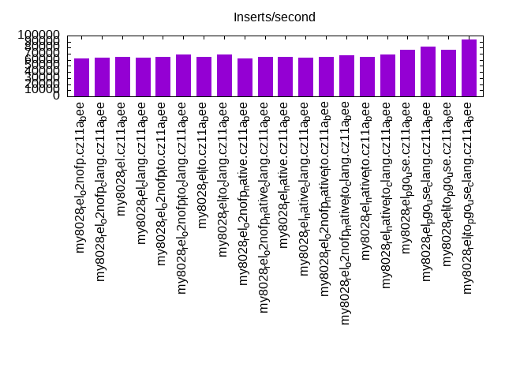
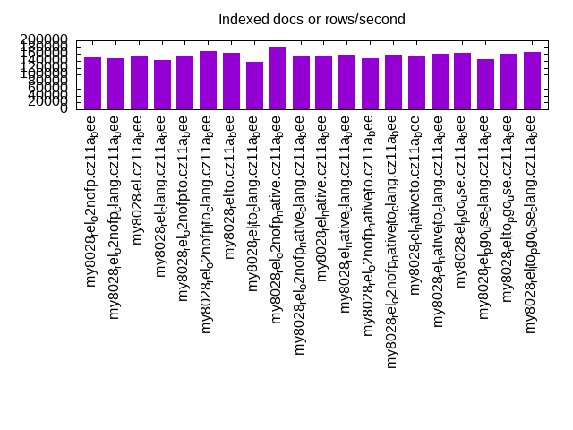
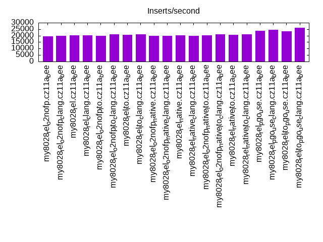
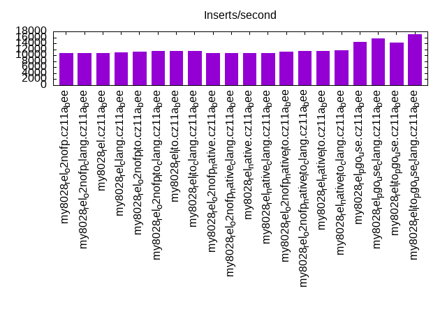
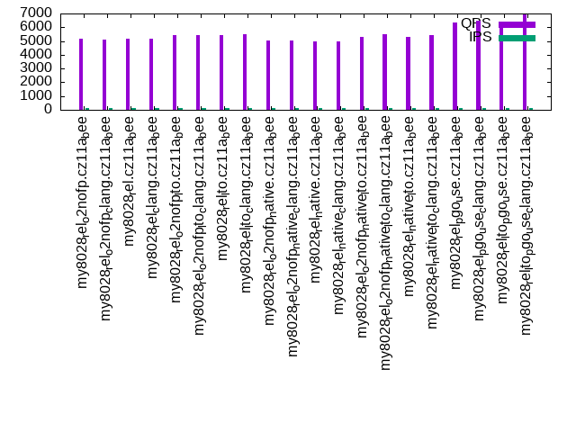
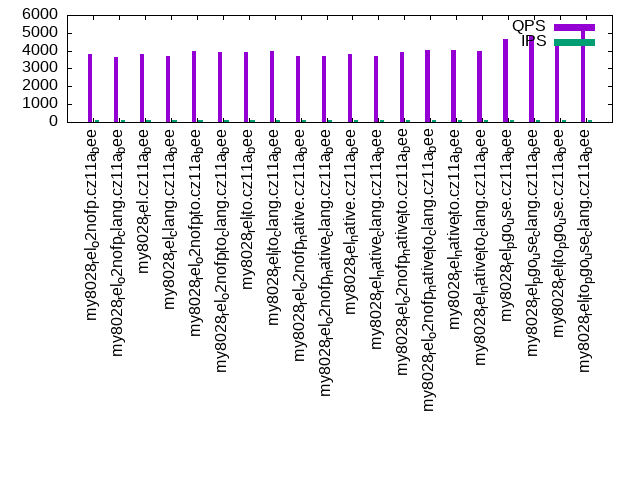
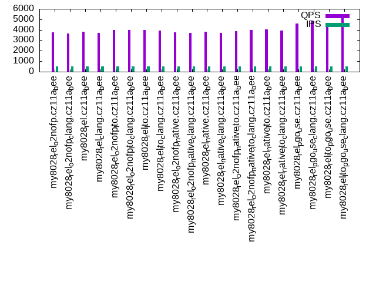
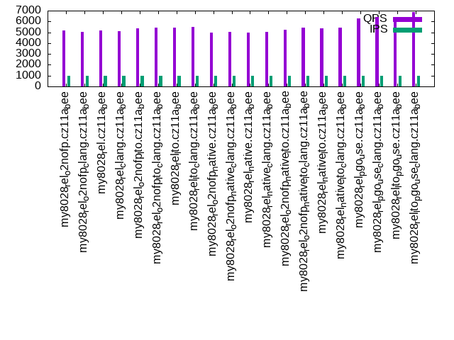
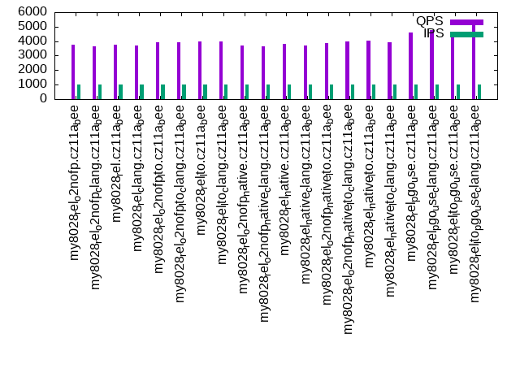

This is a report for the insert benchmark with 20M docs and 1 client(s). It is generated by scripts (bash, awk, sed) and Tufte might not be impressed. An overview of the insert benchmark is here and a short update is here. Below, by DBMS, I mean DBMS+version.config. An example is my8020.c10b40 where my means MySQL, 8020 is version 8.0.20 and c10b40 is the name for the configuration file.
The test server has 8 AMD cores, 16G RAM and an NVMe SSD. It is described here as the Beelink. The benchmark was run with 1 client and there were 1 or 3 connections per client (1 for queries or inserts without rate limits, 1+1 for rate limited inserts+deletes). It uses 1 table. It loads 20M rows per table without secondary indexes, creates 3 secondary indexes per table, then inserts 40m+10m rows per table with a delete per insert to avoid growing the table. It then does 6 read+write tests for 1800s each that do queries as fast as possible with 100,100,500,500,1000,1000 inserts/s and the same for deletes/s per client concurrent with the queries. The database is cached in memory. Clients and the DBMS share one server. The per-database configs are in the per-database subdirectories here.
The tested DBMS are:
The numbers are inserts/s for l.i0, l.i1 and l.i2, indexed docs (or rows) /s for l.x and queries/s for qr100, qp100 thru qr1000, qp1000" The values are the average rate over the entire test for inserts (IPS) and queries (QPS). The range of values for IPS and QPS is split into 3 parts: bottom 25%, middle 50%, top 25%. Values in the bottom 25% have a red background, values in the top 25% have a green background and values in the middle have no color. A gray background is used for values that can be ignored because the DBMS did not sustain the target insert rate. Red backgrounds are not used when the minimum value is within 80% of the max value.
| dbms | l.i0 | l.x | l.i1 | l.i2 | qr100 | qp100 | qr500 | qp500 | qr1000 | qp1000 |
|---|---|---|---|---|---|---|---|---|---|---|
| my8028_rel_o2nofp.cz11a_bee | 62305 | 151516 | 19675 | 10822 | 5193 | 3804 | 5223 | 3782 | 5192 | 3739 |
| my8028_rel_o2nofp_clang.cz11a_bee | 63492 | 148149 | 20050 | 10870 | 5092 | 3660 | 5082 | 3647 | 5051 | 3638 |
| my8028_rel.cz11a_bee | 65359 | 156251 | 20284 | 10776 | 5179 | 3804 | 5174 | 3805 | 5138 | 3765 |
| my8028_rel_clang.cz11a_bee | 63492 | 142858 | 20294 | 10881 | 5142 | 3683 | 5128 | 3715 | 5075 | 3693 |
| my8028_rel_o2nofp_lto.cz11a_bee | 64309 | 153847 | 19900 | 11173 | 5423 | 3966 | 5450 | 3955 | 5384 | 3921 |
| my8028_rel_o2nofp_lto_clang.cz11a_bee | 68259 | 169492 | 21164 | 11561 | 5462 | 3953 | 5492 | 3956 | 5402 | 3935 |
| my8028_rel_lto.cz11a_bee | 64935 | 162602 | 20460 | 11521 | 5425 | 3943 | 5464 | 3984 | 5402 | 3957 |
| my8028_rel_lto_clang.cz11a_bee | 68493 | 137932 | 21008 | 11561 | 5492 | 3955 | 5502 | 3936 | 5485 | 3965 |
| my8028_rel_o2nofp_native.cz11a_bee | 62893 | 180181 | 19822 | 10718 | 5035 | 3714 | 4997 | 3748 | 4942 | 3727 |
| my8028_rel_o2nofp_native_clang.cz11a_bee | 64309 | 152672 | 19822 | 10822 | 5038 | 3687 | 5022 | 3679 | 5041 | 3655 |
| my8028_rel_native.cz11a_bee | 65146 | 155040 | 20253 | 10741 | 4979 | 3795 | 4998 | 3825 | 4980 | 3826 |
| my8028_rel_native_clang.cz11a_bee | 63898 | 157481 | 20010 | 10741 | 4980 | 3673 | 5026 | 3676 | 5020 | 3685 |
| my8028_rel_o2nofp_native_lto.cz11a_bee | 64309 | 148149 | 20151 | 11173 | 5273 | 3942 | 5255 | 3882 | 5211 | 3882 |
| my8028_rel_o2nofp_native_lto_clang.cz11a_bee | 67797 | 157481 | 20888 | 11561 | 5472 | 4038 | 5461 | 3966 | 5456 | 3990 |
| my8028_rel_native_lto.cz11a_bee | 65574 | 155040 | 20544 | 11507 | 5320 | 4020 | 5349 | 4012 | 5336 | 4010 |
| my8028_rel_native_lto_clang.cz11a_bee | 68728 | 160001 | 20986 | 11641 | 5451 | 3968 | 5469 | 3947 | 5456 | 3947 |
| my8028_rel_pgo_use.cz11a_bee | 76923 | 162602 | 23669 | 14556 | 6348 | 4628 | 6304 | 4626 | 6284 | 4623 |
| my8028_rel_pgo_use_clang.cz11a_bee | 81301 | 145986 | 24630 | 15748 | 6478 | 4805 | 6455 | 4803 | 6427 | 4773 |
| my8028_rel_lto_pgo_use.cz11a_bee | 77220 | 161291 | 23310 | 14204 | 6297 | 4643 | 6349 | 4624 | 6269 | 4623 |
| my8028_rel_lto_pgo_use_clang.cz11a_bee | 93023 | 166668 | 26059 | 17007 | 6969 | 5314 | 6904 | 5236 | 6873 | 5244 |
This table has relative throughput, throughput for the DBMS relative to the DBMS in the first line, using the absolute throughput from the previous table. Values less than 0.95 have a yellow background. Values greater than 1.05 have a blue background.
| dbms | l.i0 | l.x | l.i1 | l.i2 | qr100 | qp100 | qr500 | qp500 | qr1000 | qp1000 |
|---|---|---|---|---|---|---|---|---|---|---|
| my8028_rel_o2nofp.cz11a_bee | 1.00 | 1.00 | 1.00 | 1.00 | 1.00 | 1.00 | 1.00 | 1.00 | 1.00 | 1.00 |
| my8028_rel_o2nofp_clang.cz11a_bee | 1.02 | 0.98 | 1.02 | 1.00 | 0.98 | 0.96 | 0.97 | 0.96 | 0.97 | 0.97 |
| my8028_rel.cz11a_bee | 1.05 | 1.03 | 1.03 | 1.00 | 1.00 | 1.00 | 0.99 | 1.01 | 0.99 | 1.01 |
| my8028_rel_clang.cz11a_bee | 1.02 | 0.94 | 1.03 | 1.01 | 0.99 | 0.97 | 0.98 | 0.98 | 0.98 | 0.99 |
| my8028_rel_o2nofp_lto.cz11a_bee | 1.03 | 1.02 | 1.01 | 1.03 | 1.04 | 1.04 | 1.04 | 1.05 | 1.04 | 1.05 |
| my8028_rel_o2nofp_lto_clang.cz11a_bee | 1.10 | 1.12 | 1.08 | 1.07 | 1.05 | 1.04 | 1.05 | 1.05 | 1.04 | 1.05 |
| my8028_rel_lto.cz11a_bee | 1.04 | 1.07 | 1.04 | 1.06 | 1.04 | 1.04 | 1.05 | 1.05 | 1.04 | 1.06 |
| my8028_rel_lto_clang.cz11a_bee | 1.10 | 0.91 | 1.07 | 1.07 | 1.06 | 1.04 | 1.05 | 1.04 | 1.06 | 1.06 |
| my8028_rel_o2nofp_native.cz11a_bee | 1.01 | 1.19 | 1.01 | 0.99 | 0.97 | 0.98 | 0.96 | 0.99 | 0.95 | 1.00 |
| my8028_rel_o2nofp_native_clang.cz11a_bee | 1.03 | 1.01 | 1.01 | 1.00 | 0.97 | 0.97 | 0.96 | 0.97 | 0.97 | 0.98 |
| my8028_rel_native.cz11a_bee | 1.05 | 1.02 | 1.03 | 0.99 | 0.96 | 1.00 | 0.96 | 1.01 | 0.96 | 1.02 |
| my8028_rel_native_clang.cz11a_bee | 1.03 | 1.04 | 1.02 | 0.99 | 0.96 | 0.97 | 0.96 | 0.97 | 0.97 | 0.99 |
| my8028_rel_o2nofp_native_lto.cz11a_bee | 1.03 | 0.98 | 1.02 | 1.03 | 1.02 | 1.04 | 1.01 | 1.03 | 1.00 | 1.04 |
| my8028_rel_o2nofp_native_lto_clang.cz11a_bee | 1.09 | 1.04 | 1.06 | 1.07 | 1.05 | 1.06 | 1.05 | 1.05 | 1.05 | 1.07 |
| my8028_rel_native_lto.cz11a_bee | 1.05 | 1.02 | 1.04 | 1.06 | 1.02 | 1.06 | 1.02 | 1.06 | 1.03 | 1.07 |
| my8028_rel_native_lto_clang.cz11a_bee | 1.10 | 1.06 | 1.07 | 1.08 | 1.05 | 1.04 | 1.05 | 1.04 | 1.05 | 1.06 |
| my8028_rel_pgo_use.cz11a_bee | 1.23 | 1.07 | 1.20 | 1.35 | 1.22 | 1.22 | 1.21 | 1.22 | 1.21 | 1.24 |
| my8028_rel_pgo_use_clang.cz11a_bee | 1.30 | 0.96 | 1.25 | 1.46 | 1.25 | 1.26 | 1.24 | 1.27 | 1.24 | 1.28 |
| my8028_rel_lto_pgo_use.cz11a_bee | 1.24 | 1.06 | 1.18 | 1.31 | 1.21 | 1.22 | 1.22 | 1.22 | 1.21 | 1.24 |
| my8028_rel_lto_pgo_use_clang.cz11a_bee | 1.49 | 1.10 | 1.32 | 1.57 | 1.34 | 1.40 | 1.32 | 1.38 | 1.32 | 1.40 |
This lists the average rate of inserts/s for the tests that do inserts concurrent with queries. For such tests the query rate is listed in the table above. The read+write tests are setup so that the insert rate should match the target rate every second. Cells that are not at least 95% of the target have a red background to indicate a failure to satisfy the target.
| dbms | qr100.L1 | qp100.L2 | qr500.L3 | qp500.L4 | qr1000.L5 | qp1000.L6 |
|---|---|---|---|---|---|---|
| my8028_rel_o2nofp.cz11a_bee | 100 | 100 | 499 | 499 | 998 | 998 |
| my8028_rel_o2nofp_clang.cz11a_bee | 100 | 100 | 499 | 499 | 998 | 998 |
| my8028_rel.cz11a_bee | 100 | 100 | 499 | 499 | 998 | 998 |
| my8028_rel_clang.cz11a_bee | 100 | 100 | 499 | 499 | 998 | 998 |
| my8028_rel_o2nofp_lto.cz11a_bee | 100 | 100 | 499 | 499 | 998 | 998 |
| my8028_rel_o2nofp_lto_clang.cz11a_bee | 100 | 100 | 499 | 499 | 998 | 998 |
| my8028_rel_lto.cz11a_bee | 100 | 100 | 499 | 499 | 998 | 998 |
| my8028_rel_lto_clang.cz11a_bee | 100 | 100 | 498 | 499 | 998 | 998 |
| my8028_rel_o2nofp_native.cz11a_bee | 100 | 100 | 499 | 499 | 998 | 998 |
| my8028_rel_o2nofp_native_clang.cz11a_bee | 100 | 100 | 499 | 499 | 998 | 998 |
| my8028_rel_native.cz11a_bee | 100 | 100 | 499 | 499 | 997 | 998 |
| my8028_rel_native_clang.cz11a_bee | 100 | 100 | 499 | 499 | 997 | 997 |
| my8028_rel_o2nofp_native_lto.cz11a_bee | 100 | 100 | 499 | 498 | 998 | 998 |
| my8028_rel_o2nofp_native_lto_clang.cz11a_bee | 100 | 100 | 499 | 499 | 998 | 998 |
| my8028_rel_native_lto.cz11a_bee | 100 | 100 | 499 | 499 | 998 | 998 |
| my8028_rel_native_lto_clang.cz11a_bee | 100 | 100 | 499 | 499 | 998 | 997 |
| my8028_rel_pgo_use.cz11a_bee | 100 | 100 | 499 | 499 | 998 | 998 |
| my8028_rel_pgo_use_clang.cz11a_bee | 100 | 100 | 499 | 499 | 998 | 998 |
| my8028_rel_lto_pgo_use.cz11a_bee | 100 | 100 | 499 | 499 | 998 | 998 |
| my8028_rel_lto_pgo_use_clang.cz11a_bee | 100 | 100 | 499 | 499 | 998 | 997 |
| target | 100 | 100 | 500 | 500 | 1000 | 1000 |
l.i0: load without secondary indexes. Graphs for performance per 1-second interval are here.
Average throughput:
Insert response time histogram: each cell has the percentage of responses that take <= the time in the header and max is the max response time in seconds. For the max column values in the top 25% of the range have a red background and in the bottom 25% of the range have a green background. The red background is not used when the min value is within 80% of the max value.
| dbms | 256us | 1ms | 4ms | 16ms | 64ms | 256ms | 1s | 4s | 16s | gt | max |
|---|---|---|---|---|---|---|---|---|---|---|---|
| my8028_rel_o2nofp.cz11a_bee | 99.822 | 0.177 | 0.002 | 0.001 | 0.076 | ||||||
| my8028_rel_o2nofp_clang.cz11a_bee | 99.820 | 0.178 | 0.003 | 0.043 | |||||||
| my8028_rel.cz11a_bee | 99.820 | 0.178 | 0.002 | 0.001 | 0.067 | ||||||
| my8028_rel_clang.cz11a_bee | 99.821 | 0.178 | 0.002 | 0.043 | |||||||
| my8028_rel_o2nofp_lto.cz11a_bee | 99.820 | 0.178 | 0.003 | 0.043 | |||||||
| my8028_rel_o2nofp_lto_clang.cz11a_bee | 99.820 | 0.178 | 0.003 | 0.001 | 0.074 | ||||||
| my8028_rel_lto.cz11a_bee | 99.820 | 0.178 | 0.003 | 0.041 | |||||||
| my8028_rel_lto_clang.cz11a_bee | 99.820 | 0.177 | 0.002 | 0.001 | 0.075 | ||||||
| my8028_rel_o2nofp_native.cz11a_bee | 99.820 | 0.178 | 0.002 | 0.047 | |||||||
| my8028_rel_o2nofp_native_clang.cz11a_bee | 99.821 | 0.178 | 0.002 | 0.047 | |||||||
| my8028_rel_native.cz11a_bee | 99.821 | 0.178 | 0.002 | 0.041 | |||||||
| my8028_rel_native_clang.cz11a_bee | 99.820 | 0.179 | 0.002 | 0.043 | |||||||
| my8028_rel_o2nofp_native_lto.cz11a_bee | 99.820 | 0.178 | 0.002 | 0.048 | |||||||
| my8028_rel_o2nofp_native_lto_clang.cz11a_bee | 99.822 | 0.177 | 0.002 | 0.039 | |||||||
| my8028_rel_native_lto.cz11a_bee | 99.820 | 0.178 | 0.002 | 0.045 | |||||||
| my8028_rel_native_lto_clang.cz11a_bee | 99.820 | 0.178 | 0.002 | 0.040 | |||||||
| my8028_rel_pgo_use.cz11a_bee | 99.820 | 0.178 | 0.002 | 0.034 | |||||||
| my8028_rel_pgo_use_clang.cz11a_bee | 0.001 | 99.820 | 0.177 | 0.003 | 0.035 | ||||||
| my8028_rel_lto_pgo_use.cz11a_bee | 99.821 | 0.178 | 0.002 | 0.031 | |||||||
| my8028_rel_lto_pgo_use_clang.cz11a_bee | 48.551 | 51.272 | 0.174 | 0.003 | 0.057 |
Performance metrics for the DBMS listed above. Some are normalized by throughput, others are not. Legend for results is here.
ips qps rps rmbps wps wmbps rpq rkbpq wpi wkbpi csps cpups cspq cpupq dbgb1 dbgb2 rss maxop p50 p99 tag 62305 0 0 0.0 289.1 18.8 0.000 0.000 0.005 0.309 6834 18.9 0.110 24 1.3 16.9 2.4 0.076 62334 59516 my8028_rel_o2nofp.cz11a_bee 63492 0 0 0.0 294.1 19.1 0.000 0.000 0.005 0.309 6945 19.1 0.109 24 1.3 16.9 2.4 0.043 63437 60270 my8028_rel_o2nofp_clang.cz11a_bee 65359 0 0 0.0 302.3 19.7 0.000 0.000 0.005 0.309 7303 20.1 0.112 25 1.3 16.9 2.4 0.067 65613 61325 my8028_rel.cz11a_bee 63492 0 0 0.0 293.4 19.2 0.000 0.000 0.005 0.309 7000 19.3 0.110 24 1.3 16.9 2.4 0.043 63646 60329 my8028_rel_clang.cz11a_bee 64309 0 0 0.0 298.0 19.4 0.000 0.000 0.005 0.308 7093 19.4 0.110 24 1.3 16.9 2.4 0.043 64480 61424 my8028_rel_o2nofp_lto.cz11a_bee 68259 0 0 0.0 315.0 20.6 0.000 0.000 0.005 0.309 7456 20.1 0.109 24 1.3 16.9 2.4 0.074 68234 65322 my8028_rel_o2nofp_lto_clang.cz11a_bee 64935 0 0 0.0 301.3 19.7 0.000 0.000 0.005 0.310 7168 19.4 0.110 24 1.3 16.9 2.4 0.041 65452 62136 my8028_rel_lto.cz11a_bee 68493 0 0 0.0 314.7 20.6 0.000 0.000 0.005 0.308 7473 20.0 0.109 23 1.3 16.9 2.4 0.075 68453 65918 my8028_rel_lto_clang.cz11a_bee 62893 0 0 0.0 290.5 18.9 0.000 0.000 0.005 0.308 6835 19.1 0.109 24 1.3 16.9 2.4 0.047 62679 60388 my8028_rel_o2nofp_native.cz11a_bee 64309 0 0 0.0 300.2 19.5 0.000 0.000 0.005 0.310 7099 19.3 0.110 24 1.3 16.9 2.4 0.047 64841 60937 my8028_rel_o2nofp_native_clang.cz11a_bee 65146 0 0 0.0 301.6 19.7 0.000 0.000 0.005 0.309 7175 19.5 0.110 24 1.3 16.9 2.4 0.041 65433 62024 my8028_rel_native.cz11a_bee 63898 0 0 0.0 295.6 19.3 0.000 0.000 0.005 0.309 7033 19.4 0.110 24 1.3 16.9 2.4 0.043 64027 61102 my8028_rel_native_clang.cz11a_bee 64309 0 0 0.0 297.9 19.4 0.000 0.000 0.005 0.308 7083 19.4 0.110 24 1.3 16.9 2.4 0.048 64528 61349 my8028_rel_o2nofp_native_lto.cz11a_bee 67797 0 0 0.0 313.2 20.5 0.000 0.000 0.005 0.310 7433 20.0 0.110 24 1.3 16.9 2.3 0.039 68135 64598 my8028_rel_o2nofp_native_lto_clang.cz11a_bee 65574 0 0 0.0 302.6 19.8 0.000 0.000 0.005 0.309 7236 19.6 0.110 24 1.3 16.9 2.4 0.045 65932 63166 my8028_rel_native_lto.cz11a_bee 68728 0 0 0.0 320.1 20.8 0.000 0.000 0.005 0.310 7537 20.0 0.110 23 1.3 16.9 2.4 0.040 69087 66432 my8028_rel_native_lto_clang.cz11a_bee 76923 0 0 0.0 353.5 23.3 0.000 0.000 0.005 0.310 8311 20.9 0.108 22 1.3 16.9 2.3 0.034 77414 74526 my8028_rel_pgo_use.cz11a_bee 81301 0 0 0.0 376.6 24.7 0.000 0.000 0.005 0.311 8775 21.8 0.108 21 1.3 16.9 2.4 0.035 81819 78419 my8028_rel_pgo_use_clang.cz11a_bee 77220 0 0 0.0 356.0 23.4 0.000 0.000 0.005 0.311 9902 21.1 0.128 22 1.3 16.9 2.4 0.031 77622 74624 my8028_rel_lto_pgo_use.cz11a_bee 93023 0 0 0.0 429.3 28.2 0.000 0.000 0.005 0.311 9867 22.7 0.106 20 1.3 16.9 2.4 0.057 93413 88314 my8028_rel_lto_pgo_use_clang.cz11a_bee
l.x: create secondary indexes.
Average throughput:
Performance metrics for the DBMS listed above. Some are normalized by throughput, others are not. Legend for results is here.
ips qps rps rmbps wps wmbps rpq rkbpq wpi wkbpi csps cpups cspq cpupq dbgb1 dbgb2 rss maxop p50 p99 tag 151516 0 779 50.3 2907.4 164.3 0.005 0.340 0.019 1.111 10642 43.4 0.070 23 3.0 18.6 3.5 0.002 NA NA my8028_rel_o2nofp.cz11a_bee 148149 0 750 48.4 3254.4 165.4 0.005 0.335 0.022 1.143 11216 43.3 0.076 23 3.0 18.6 3.1 0.003 NA NA my8028_rel_o2nofp_clang.cz11a_bee 156251 0 810 52.3 2911.3 169.1 0.005 0.343 0.019 1.108 10911 43.6 0.070 22 3.0 18.6 3.7 0.003 NA NA my8028_rel.cz11a_bee 142858 0 723 46.7 3102.0 159.0 0.005 0.335 0.022 1.139 10785 43.3 0.075 24 3.0 18.6 2.7 0.002 NA NA my8028_rel_clang.cz11a_bee 153847 0 810 52.3 2401.6 161.1 0.005 0.348 0.016 1.072 9746 43.7 0.063 23 3.0 18.6 3.7 0.003 NA NA my8028_rel_o2nofp_lto.cz11a_bee 169492 0 881 56.9 3650.9 190.8 0.005 0.343 0.022 1.153 12378 42.0 0.073 20 3.0 18.6 2.8 0.002 NA NA my8028_rel_o2nofp_lto_clang.cz11a_bee 162602 0 844 54.5 2862.4 173.1 0.005 0.343 0.018 1.090 10654 43.7 0.066 21 3.0 18.6 3.9 0.003 NA NA my8028_rel_lto.cz11a_bee 137932 0 699 45.1 3069.7 155.9 0.005 0.335 0.022 1.157 10433 43.3 0.076 25 3.0 18.6 2.5 0.002 NA NA my8028_rel_lto_clang.cz11a_bee 180181 0 921 59.4 3669.2 197.7 0.005 0.338 0.020 1.123 12582 41.6 0.070 18 3.0 18.6 2.8 0.002 NA NA my8028_rel_o2nofp_native.cz11a_bee 152672 0 779 50.3 3230.2 169.4 0.005 0.337 0.021 1.136 11271 43.1 0.074 23 3.0 18.6 3.5 0.003 NA NA my8028_rel_o2nofp_native_clang.cz11a_bee 155040 0 810 52.3 2682.1 166.6 0.005 0.345 0.017 1.100 10191 44.2 0.066 23 3.0 18.6 3.6 0.002 NA NA my8028_rel_native.cz11a_bee 157481 0 810 52.3 3060.3 171.5 0.005 0.340 0.019 1.115 11086 43.6 0.070 22 3.0 18.6 3.7 0.003 NA NA my8028_rel_native_clang.cz11a_bee 148149 0 779 50.3 2308.5 156.3 0.005 0.348 0.016 1.080 9298 44.0 0.063 24 3.0 18.6 3.3 0.003 NA NA my8028_rel_o2nofp_native_lto.cz11a_bee 157481 0 810 52.3 2949.6 170.7 0.005 0.340 0.019 1.110 10717 43.7 0.068 22 3.0 18.6 3.7 0.002 NA NA my8028_rel_o2nofp_native_lto_clang.cz11a_bee 155040 0 810 52.3 2409.8 161.2 0.005 0.345 0.016 1.065 9893 43.9 0.064 23 3.0 18.6 3.6 0.002 NA NA my8028_rel_native_lto.cz11a_bee 160001 0 810 52.3 3397.2 176.7 0.005 0.334 0.021 1.131 11680 43.2 0.073 22 3.0 18.6 3.8 0.002 NA NA my8028_rel_native_lto_clang.cz11a_bee 162602 0 844 54.5 2706.1 171.0 0.005 0.343 0.017 1.077 10418 43.9 0.064 22 3.0 18.6 3.9 0.002 NA NA my8028_rel_pgo_use.cz11a_bee 145986 0 750 48.4 3053.3 163.6 0.005 0.340 0.021 1.147 10685 43.6 0.073 24 3.0 18.6 2.9 0.002 NA NA my8028_rel_pgo_use_clang.cz11a_bee 161291 0 844 54.5 2574.5 168.7 0.005 0.346 0.016 1.071 12380 44.3 0.077 22 3.0 18.6 3.9 0.002 NA NA my8028_rel_lto_pgo_use.cz11a_bee 166668 0 846 54.5 3712.2 187.5 0.005 0.335 0.022 1.152 10308 43.8 0.062 21 3.0 18.6 2.5 0.002 NA NA my8028_rel_lto_pgo_use_clang.cz11a_bee
l.i1: continue load after secondary indexes created with 50 inserts per transaction. Graphs for performance per 1-second interval are here.
Average throughput:
Insert response time histogram: each cell has the percentage of responses that take <= the time in the header and max is the max response time in seconds. For the max column values in the top 25% of the range have a red background and in the bottom 25% of the range have a green background. The red background is not used when the min value is within 80% of the max value.
| dbms | 256us | 1ms | 4ms | 16ms | 64ms | 256ms | 1s | 4s | 16s | gt | max |
|---|---|---|---|---|---|---|---|---|---|---|---|
| my8028_rel_o2nofp.cz11a_bee | 99.346 | 0.617 | 0.037 | 0.001 | 0.105 | ||||||
| my8028_rel_o2nofp_clang.cz11a_bee | 99.352 | 0.610 | 0.037 | 0.001 | 0.104 | ||||||
| my8028_rel.cz11a_bee | 99.396 | 0.568 | 0.036 | 0.001 | 0.104 | ||||||
| my8028_rel_clang.cz11a_bee | 99.353 | 0.608 | 0.038 | 0.001 | 0.101 | ||||||
| my8028_rel_o2nofp_lto.cz11a_bee | 99.237 | 0.721 | 0.041 | 0.001 | 0.104 | ||||||
| my8028_rel_o2nofp_lto_clang.cz11a_bee | 99.435 | 0.527 | 0.037 | 0.001 | 0.102 | ||||||
| my8028_rel_lto.cz11a_bee | 99.361 | 0.601 | 0.037 | 0.001 | 0.104 | ||||||
| my8028_rel_lto_clang.cz11a_bee | 99.406 | 0.558 | 0.035 | 0.001 | 0.103 | ||||||
| my8028_rel_o2nofp_native.cz11a_bee | 99.373 | 0.591 | 0.035 | 0.001 | 0.107 | ||||||
| my8028_rel_o2nofp_native_clang.cz11a_bee | 99.302 | 0.660 | 0.037 | 0.001 | 0.103 | ||||||
| my8028_rel_native.cz11a_bee | 99.360 | 0.602 | 0.037 | 0.001 | 0.104 | ||||||
| my8028_rel_native_clang.cz11a_bee | 99.356 | 0.606 | 0.038 | 0.001 | 0.104 | ||||||
| my8028_rel_o2nofp_native_lto.cz11a_bee | 99.335 | 0.628 | 0.037 | 0.001 | 0.103 | ||||||
| my8028_rel_o2nofp_native_lto_clang.cz11a_bee | 99.415 | 0.549 | 0.035 | 0.001 | 0.103 | ||||||
| my8028_rel_native_lto.cz11a_bee | 99.354 | 0.607 | 0.038 | nonzero | 0.103 | ||||||
| my8028_rel_native_lto_clang.cz11a_bee | 99.435 | 0.530 | 0.034 | 0.001 | 0.107 | ||||||
| my8028_rel_pgo_use.cz11a_bee | 99.605 | 0.364 | 0.031 | 0.001 | 0.103 | ||||||
| my8028_rel_pgo_use_clang.cz11a_bee | 99.631 | 0.339 | 0.030 | nonzero | 0.103 | ||||||
| my8028_rel_lto_pgo_use.cz11a_bee | 99.590 | 0.379 | 0.031 | nonzero | 0.103 | ||||||
| my8028_rel_lto_pgo_use_clang.cz11a_bee | 99.700 | 0.268 | 0.031 | 0.001 | 0.103 |
Delete response time histogram: each cell has the percentage of responses that take <= the time in the header and max is the max response time in seconds. For the max column values in the top 25% of the range have a red background and in the bottom 25% of the range have a green background. The red background is not used when the min value is within 80% of the max value.
| dbms | 256us | 1ms | 4ms | 16ms | 64ms | 256ms | 1s | 4s | 16s | gt | max |
|---|---|---|---|---|---|---|---|---|---|---|---|
| my8028_rel_o2nofp.cz11a_bee | 99.938 | 0.060 | 0.002 | nonzero | 0.105 | ||||||
| my8028_rel_o2nofp_clang.cz11a_bee | 99.936 | 0.061 | 0.003 | nonzero | 0.104 | ||||||
| my8028_rel.cz11a_bee | 99.937 | 0.059 | 0.004 | nonzero | 0.103 | ||||||
| my8028_rel_clang.cz11a_bee | 99.941 | 0.056 | 0.003 | nonzero | 0.102 | ||||||
| my8028_rel_o2nofp_lto.cz11a_bee | 99.940 | 0.057 | 0.003 | 0.001 | 0.103 | ||||||
| my8028_rel_o2nofp_lto_clang.cz11a_bee | 99.949 | 0.048 | 0.003 | nonzero | 0.102 | ||||||
| my8028_rel_lto.cz11a_bee | 99.943 | 0.053 | 0.003 | 0.001 | 0.103 | ||||||
| my8028_rel_lto_clang.cz11a_bee | 99.944 | 0.053 | 0.003 | nonzero | 0.102 | ||||||
| my8028_rel_o2nofp_native.cz11a_bee | 99.942 | 0.055 | 0.003 | nonzero | 0.103 | ||||||
| my8028_rel_o2nofp_native_clang.cz11a_bee | 99.931 | 0.066 | 0.003 | nonzero | 0.102 | ||||||
| my8028_rel_native.cz11a_bee | 99.941 | 0.056 | 0.003 | nonzero | 0.103 | ||||||
| my8028_rel_native_clang.cz11a_bee | 99.942 | 0.055 | 0.003 | nonzero | 0.106 | ||||||
| my8028_rel_o2nofp_native_lto.cz11a_bee | 99.944 | 0.053 | 0.003 | nonzero | 0.102 | ||||||
| my8028_rel_o2nofp_native_lto_clang.cz11a_bee | 99.941 | 0.056 | 0.003 | nonzero | 0.103 | ||||||
| my8028_rel_native_lto.cz11a_bee | 99.940 | 0.057 | 0.003 | nonzero | 0.102 | ||||||
| my8028_rel_native_lto_clang.cz11a_bee | 99.942 | 0.054 | 0.003 | nonzero | 0.102 | ||||||
| my8028_rel_pgo_use.cz11a_bee | 99.953 | 0.043 | 0.003 | 0.001 | 0.104 | ||||||
| my8028_rel_pgo_use_clang.cz11a_bee | 99.955 | 0.042 | 0.003 | nonzero | 0.102 | ||||||
| my8028_rel_lto_pgo_use.cz11a_bee | 99.952 | 0.045 | 0.003 | nonzero | 0.102 | ||||||
| my8028_rel_lto_pgo_use_clang.cz11a_bee | 99.960 | 0.036 | 0.003 | nonzero | 0.102 |
Performance metrics for the DBMS listed above. Some are normalized by throughput, others are not. Legend for results is here.
ips qps rps rmbps wps wmbps rpq rkbpq wpi wkbpi csps cpups cspq cpupq dbgb1 dbgb2 rss maxop p50 p99 tag 19675 0 48 0.7 2018.3 71.5 0.002 0.039 0.103 3.722 35552 37.3 1.807 152 4.4 20.2 5.7 0.105 20130 8842 my8028_rel_o2nofp.cz11a_bee 20050 0 49 0.8 2026.7 72.0 0.002 0.039 0.101 3.680 35924 37.5 1.792 150 4.5 20.2 5.8 0.104 20580 8591 my8028_rel_o2nofp_clang.cz11a_bee 20284 0 49 0.8 2049.1 73.0 0.002 0.039 0.101 3.685 35937 37.6 1.772 148 4.4 20.2 5.8 0.104 20826 9593 my8028_rel.cz11a_bee 20294 0 49 0.8 2005.6 71.6 0.002 0.039 0.099 3.615 36121 37.6 1.780 148 4.5 20.2 5.8 0.101 20829 8342 my8028_rel_clang.cz11a_bee 19900 0 48 0.8 1969.8 70.3 0.002 0.039 0.099 3.616 36069 37.4 1.812 150 4.5 20.3 5.8 0.104 20429 6793 my8028_rel_o2nofp_lto.cz11a_bee 21164 0 51 0.8 2130.1 76.0 0.002 0.039 0.101 3.677 36300 37.4 1.715 141 4.4 20.2 5.8 0.102 21770 8242 my8028_rel_o2nofp_lto_clang.cz11a_bee 20460 0 50 0.8 2099.2 74.4 0.002 0.039 0.103 3.724 36206 37.4 1.770 146 4.5 20.2 5.8 0.104 21078 8595 my8028_rel_lto.cz11a_bee 21008 0 51 0.8 2056.8 73.9 0.002 0.039 0.098 3.602 36181 37.5 1.722 143 4.5 20.2 5.8 0.103 21625 8192 my8028_rel_lto_clang.cz11a_bee 19822 0 48 0.7 2035.1 72.3 0.002 0.039 0.103 3.735 35605 37.5 1.796 151 4.4 20.2 5.7 0.107 20379 9394 my8028_rel_o2nofp_native.cz11a_bee 19822 0 48 0.7 1988.4 70.8 0.002 0.039 0.100 3.659 35726 37.4 1.802 151 4.5 20.2 5.8 0.103 20329 7793 my8028_rel_o2nofp_native_clang.cz11a_bee 20253 0 49 0.8 2011.1 72.0 0.002 0.039 0.099 3.641 35849 37.5 1.770 148 4.4 20.2 5.8 0.104 20830 8193 my8028_rel_native.cz11a_bee 20010 0 48 0.8 2077.8 73.3 0.002 0.039 0.104 3.749 36060 37.6 1.802 150 4.5 20.2 5.8 0.104 20530 8192 my8028_rel_native_clang.cz11a_bee 20151 0 49 0.8 2008.2 71.8 0.002 0.039 0.100 3.648 35968 37.5 1.785 149 4.5 20.2 5.8 0.103 20679 8142 my8028_rel_o2nofp_native_lto.cz11a_bee 20888 0 50 0.8 2057.2 73.8 0.002 0.039 0.098 3.618 36125 37.5 1.729 144 4.4 20.2 5.8 0.103 21479 8648 my8028_rel_o2nofp_native_lto_clang.cz11a_bee 20544 0 50 0.8 2125.8 75.2 0.002 0.039 0.103 3.746 36163 37.4 1.760 146 4.4 20.2 5.8 0.103 21129 8341 my8028_rel_native_lto.cz11a_bee 20986 0 51 0.8 2173.4 76.8 0.002 0.039 0.104 3.748 36480 37.7 1.738 144 4.5 20.2 5.8 0.107 21529 8841 my8028_rel_native_lto_clang.cz11a_bee 23669 0 57 0.9 2239.5 81.5 0.002 0.039 0.095 3.524 37871 38.0 1.600 128 4.5 20.2 5.8 0.103 24375 9145 my8028_rel_pgo_use.cz11a_bee 24630 0 60 0.9 2321.4 84.5 0.002 0.039 0.094 3.511 38369 38.1 1.558 124 4.5 20.2 5.8 0.103 25325 10090 my8028_rel_pgo_use_clang.cz11a_bee 23310 0 56 0.9 2262.4 81.5 0.002 0.039 0.097 3.579 37852 38.2 1.624 131 4.5 20.2 5.8 0.103 23976 9790 my8028_rel_lto_pgo_use.cz11a_bee 26059 0 63 1.0 2531.7 91.4 0.002 0.039 0.097 3.593 39396 38.7 1.512 119 4.4 20.2 5.7 0.103 26774 11236 my8028_rel_lto_pgo_use_clang.cz11a_bee
l.i2: continue load after secondary indexes created with 5 inserts per transaction. Graphs for performance per 1-second interval are here.
Average throughput:
Insert response time histogram: each cell has the percentage of responses that take <= the time in the header and max is the max response time in seconds. For the max column values in the top 25% of the range have a red background and in the bottom 25% of the range have a green background. The red background is not used when the min value is within 80% of the max value.
| dbms | 256us | 1ms | 4ms | 16ms | 64ms | 256ms | 1s | 4s | 16s | gt | max |
|---|---|---|---|---|---|---|---|---|---|---|---|
| my8028_rel_o2nofp.cz11a_bee | 99.951 | 0.049 | nonzero | nonzero | nonzero | 0.102 | |||||
| my8028_rel_o2nofp_clang.cz11a_bee | 99.952 | 0.048 | nonzero | nonzero | nonzero | 0.102 | |||||
| my8028_rel.cz11a_bee | 99.950 | 0.050 | nonzero | nonzero | nonzero | 0.101 | |||||
| my8028_rel_clang.cz11a_bee | 99.951 | 0.048 | nonzero | 0.001 | nonzero | 0.101 | |||||
| my8028_rel_o2nofp_lto.cz11a_bee | 99.952 | 0.047 | nonzero | nonzero | nonzero | 0.102 | |||||
| my8028_rel_o2nofp_lto_clang.cz11a_bee | 99.960 | 0.040 | nonzero | nonzero | nonzero | 0.101 | |||||
| my8028_rel_lto.cz11a_bee | 99.962 | 0.037 | nonzero | nonzero | nonzero | 0.102 | |||||
| my8028_rel_lto_clang.cz11a_bee | 99.966 | 0.033 | nonzero | nonzero | nonzero | 0.101 | |||||
| my8028_rel_o2nofp_native.cz11a_bee | 99.953 | 0.046 | nonzero | nonzero | nonzero | 0.103 | |||||
| my8028_rel_o2nofp_native_clang.cz11a_bee | 99.949 | 0.050 | nonzero | nonzero | nonzero | 0.101 | |||||
| my8028_rel_native.cz11a_bee | 99.949 | 0.051 | nonzero | nonzero | nonzero | 0.101 | |||||
| my8028_rel_native_clang.cz11a_bee | 99.950 | 0.049 | nonzero | nonzero | nonzero | 0.102 | |||||
| my8028_rel_o2nofp_native_lto.cz11a_bee | 99.953 | 0.046 | nonzero | nonzero | nonzero | 0.101 | |||||
| my8028_rel_o2nofp_native_lto_clang.cz11a_bee | 99.961 | 0.039 | nonzero | nonzero | nonzero | 0.102 | |||||
| my8028_rel_native_lto.cz11a_bee | 99.960 | 0.039 | nonzero | nonzero | nonzero | 0.101 | |||||
| my8028_rel_native_lto_clang.cz11a_bee | 99.965 | 0.034 | 0.001 | nonzero | nonzero | 0.101 | |||||
| my8028_rel_pgo_use.cz11a_bee | 4.325 | 95.657 | 0.018 | nonzero | nonzero | nonzero | 0.128 | ||||
| my8028_rel_pgo_use_clang.cz11a_bee | 28.160 | 71.825 | 0.014 | nonzero | nonzero | nonzero | 0.103 | ||||
| my8028_rel_lto_pgo_use.cz11a_bee | 1.889 | 98.093 | 0.017 | nonzero | 0.001 | nonzero | 0.101 | ||||
| my8028_rel_lto_pgo_use_clang.cz11a_bee | 55.650 | 44.336 | 0.013 | nonzero | nonzero | nonzero | 0.101 |
Delete response time histogram: each cell has the percentage of responses that take <= the time in the header and max is the max response time in seconds. For the max column values in the top 25% of the range have a red background and in the bottom 25% of the range have a green background. The red background is not used when the min value is within 80% of the max value.
| dbms | 256us | 1ms | 4ms | 16ms | 64ms | 256ms | 1s | 4s | 16s | gt | max |
|---|---|---|---|---|---|---|---|---|---|---|---|
| my8028_rel_o2nofp.cz11a_bee | 99.961 | 0.039 | nonzero | nonzero | nonzero | 0.102 | |||||
| my8028_rel_o2nofp_clang.cz11a_bee | 99.966 | 0.034 | nonzero | nonzero | nonzero | 0.102 | |||||
| my8028_rel.cz11a_bee | 99.962 | 0.037 | nonzero | nonzero | nonzero | 0.101 | |||||
| my8028_rel_clang.cz11a_bee | 99.963 | 0.037 | nonzero | nonzero | nonzero | 0.101 | |||||
| my8028_rel_o2nofp_lto.cz11a_bee | 99.965 | 0.035 | nonzero | nonzero | nonzero | 0.101 | |||||
| my8028_rel_o2nofp_lto_clang.cz11a_bee | 99.970 | 0.030 | nonzero | nonzero | nonzero | 0.101 | |||||
| my8028_rel_lto.cz11a_bee | 99.967 | 0.033 | nonzero | nonzero | nonzero | 0.102 | |||||
| my8028_rel_lto_clang.cz11a_bee | 99.966 | 0.033 | nonzero | nonzero | nonzero | 0.101 | |||||
| my8028_rel_o2nofp_native.cz11a_bee | 99.958 | 0.041 | nonzero | nonzero | nonzero | 0.101 | |||||
| my8028_rel_o2nofp_native_clang.cz11a_bee | 99.960 | 0.039 | nonzero | nonzero | nonzero | 0.102 | |||||
| my8028_rel_native.cz11a_bee | 99.957 | 0.043 | nonzero | nonzero | nonzero | 0.101 | |||||
| my8028_rel_native_clang.cz11a_bee | 99.960 | 0.039 | nonzero | nonzero | nonzero | 0.101 | |||||
| my8028_rel_o2nofp_native_lto.cz11a_bee | 99.966 | 0.033 | nonzero | nonzero | nonzero | 0.101 | |||||
| my8028_rel_o2nofp_native_lto_clang.cz11a_bee | 99.969 | 0.031 | nonzero | nonzero | nonzero | 0.102 | |||||
| my8028_rel_native_lto.cz11a_bee | 99.964 | 0.035 | nonzero | nonzero | nonzero | 0.101 | |||||
| my8028_rel_native_lto_clang.cz11a_bee | 99.967 | 0.032 | nonzero | nonzero | nonzero | 0.101 | |||||
| my8028_rel_pgo_use.cz11a_bee | 7.519 | 92.466 | 0.015 | nonzero | nonzero | nonzero | 0.122 | ||||
| my8028_rel_pgo_use_clang.cz11a_bee | 30.856 | 69.132 | 0.012 | nonzero | nonzero | nonzero | 0.103 | ||||
| my8028_rel_lto_pgo_use.cz11a_bee | 2.284 | 97.700 | 0.015 | nonzero | 0.001 | nonzero | 0.101 | ||||
| my8028_rel_lto_pgo_use_clang.cz11a_bee | 53.676 | 46.312 | 0.012 | nonzero | nonzero | nonzero | 0.101 |
Performance metrics for the DBMS listed above. Some are normalized by throughput, others are not. Legend for results is here.
ips qps rps rmbps wps wmbps rpq rkbpq wpi wkbpi csps cpups cspq cpupq dbgb1 dbgb2 rss maxop p50 p99 tag 10822 0 0 0.0 1227.2 41.8 0.000 0.000 0.113 3.959 58500 35.2 5.405 260 4.4 20.2 5.8 0.102 10809 9850 my8028_rel_o2nofp.cz11a_bee 10870 0 0 0.0 1204.6 41.3 0.000 0.000 0.111 3.893 58532 35.0 5.385 258 4.5 20.2 5.8 0.102 10830 9905 my8028_rel_o2nofp_clang.cz11a_bee 10776 0 0 0.0 1234.6 42.0 0.000 0.000 0.115 3.994 58233 35.0 5.404 260 4.4 20.2 5.8 0.101 10784 9755 my8028_rel.cz11a_bee 10881 0 0 0.0 1212.4 41.5 0.000 0.000 0.111 3.910 58606 35.1 5.386 258 4.5 20.2 5.8 0.101 10869 9877 my8028_rel_clang.cz11a_bee 11173 0 0 0.0 1222.9 42.1 0.000 0.000 0.109 3.858 60158 35.3 5.384 253 4.5 20.3 5.8 0.102 11164 10155 my8028_rel_o2nofp_lto.cz11a_bee 11561 0 0 0.0 1298.9 44.4 0.000 0.000 0.112 3.936 61228 35.2 5.296 244 4.4 20.2 5.8 0.101 11548 10520 my8028_rel_o2nofp_lto_clang.cz11a_bee 11521 0 0 0.0 1276.8 43.8 0.000 0.000 0.111 3.893 61321 35.4 5.323 246 4.5 20.2 5.8 0.102 11538 10410 my8028_rel_lto.cz11a_bee 11561 0 0 0.0 1251.6 43.2 0.000 0.000 0.108 3.831 61245 35.1 5.298 243 4.5 20.2 5.8 0.101 11568 10310 my8028_rel_lto_clang.cz11a_bee 10718 0 0 0.0 1190.4 40.8 0.000 0.000 0.111 3.894 57767 35.1 5.390 262 4.4 20.2 5.7 0.103 10689 9769 my8028_rel_o2nofp_native.cz11a_bee 10822 0 0 0.0 1222.5 41.7 0.000 0.000 0.113 3.947 58448 35.2 5.401 260 4.5 20.2 5.8 0.101 10789 9965 my8028_rel_o2nofp_native_clang.cz11a_bee 10741 0 0 0.0 1185.1 40.7 0.000 0.000 0.110 3.881 57714 35.0 5.373 261 4.4 20.2 5.8 0.101 10719 9815 my8028_rel_native.cz11a_bee 10741 0 0 0.0 1215.9 41.5 0.000 0.000 0.113 3.955 58110 35.3 5.410 263 4.5 20.2 5.8 0.102 10741 9820 my8028_rel_native_clang.cz11a_bee 11173 0 0 0.0 1233.9 42.4 0.000 0.000 0.110 3.886 59827 35.1 5.355 251 4.5 20.2 5.8 0.101 11169 10142 my8028_rel_o2nofp_native_lto.cz11a_bee 11561 0 0 0.0 1257.6 43.4 0.000 0.000 0.109 3.841 61321 35.3 5.304 244 4.4 20.2 5.8 0.102 11559 10499 my8028_rel_o2nofp_native_lto_clang.cz11a_bee 11507 0 0 0.0 1281.6 43.9 0.000 0.000 0.111 3.905 61197 35.3 5.318 245 4.4 20.2 5.8 0.101 11503 10335 my8028_rel_native_lto.cz11a_bee 11641 0 0 0.0 1301.8 44.6 0.000 0.000 0.112 3.922 61721 35.4 5.302 243 4.5 20.2 5.8 0.101 11648 10296 my8028_rel_native_lto_clang.cz11a_bee 14556 0 0 0.0 1515.4 52.9 0.000 0.000 0.104 3.724 74570 37.4 5.123 206 4.5 20.2 5.8 0.128 14551 13442 my8028_rel_pgo_use.cz11a_bee 15748 0 0 0.0 1604.5 56.3 0.000 0.000 0.102 3.659 79296 37.7 5.035 192 4.5 20.2 5.8 0.103 15759 14400 my8028_rel_pgo_use_clang.cz11a_bee 14204 0 0 0.0 1497.7 52.1 0.000 0.000 0.105 3.757 73548 37.4 5.178 211 4.5 20.2 5.8 0.101 14231 13057 my8028_rel_lto_pgo_use.cz11a_bee 17007 0 0 0.0 1723.0 60.7 0.000 0.000 0.101 3.653 86120 38.4 5.064 181 4.4 20.2 5.7 0.101 17034 15844 my8028_rel_lto_pgo_use_clang.cz11a_bee
qr100.L1: range queries with 100 insert/s per client. Graphs for performance per 1-second interval are here.
Average throughput:
Query response time histogram: each cell has the percentage of responses that take <= the time in the header and max is the max response time in seconds. For max values in the top 25% of the range have a red background and in the bottom 25% of the range have a green background. The red background is not used when the min value is within 80% of the max value.
| dbms | 256us | 1ms | 4ms | 16ms | 64ms | 256ms | 1s | 4s | 16s | gt | max |
|---|---|---|---|---|---|---|---|---|---|---|---|
| my8028_rel_o2nofp.cz11a_bee | 98.328 | 1.672 | nonzero | 0.002 | |||||||
| my8028_rel_o2nofp_clang.cz11a_bee | 98.279 | 1.721 | nonzero | nonzero | 0.006 | ||||||
| my8028_rel.cz11a_bee | 98.306 | 1.694 | nonzero | 0.002 | |||||||
| my8028_rel_clang.cz11a_bee | 98.355 | 1.644 | nonzero | 0.003 | |||||||
| my8028_rel_o2nofp_lto.cz11a_bee | 98.465 | 1.535 | nonzero | 0.002 | |||||||
| my8028_rel_o2nofp_lto_clang.cz11a_bee | 98.476 | 1.524 | nonzero | 0.002 | |||||||
| my8028_rel_lto.cz11a_bee | 98.434 | 1.566 | nonzero | nonzero | 0.006 | ||||||
| my8028_rel_lto_clang.cz11a_bee | 98.534 | 1.466 | nonzero | 0.002 | |||||||
| my8028_rel_o2nofp_native.cz11a_bee | 98.087 | 1.913 | nonzero | 0.002 | |||||||
| my8028_rel_o2nofp_native_clang.cz11a_bee | 98.333 | 1.667 | nonzero | 0.001 | |||||||
| my8028_rel_native.cz11a_bee | 97.802 | 2.198 | nonzero | nonzero | 0.007 | ||||||
| my8028_rel_native_clang.cz11a_bee | 98.044 | 1.956 | nonzero | 0.002 | |||||||
| my8028_rel_o2nofp_native_lto.cz11a_bee | 98.408 | 1.592 | nonzero | 0.002 | |||||||
| my8028_rel_o2nofp_native_lto_clang.cz11a_bee | 98.680 | 1.320 | nonzero | 0.002 | |||||||
| my8028_rel_native_lto.cz11a_bee | 98.316 | 1.684 | nonzero | 0.002 | |||||||
| my8028_rel_native_lto_clang.cz11a_bee | 98.586 | 1.414 | nonzero | 0.002 | |||||||
| my8028_rel_pgo_use.cz11a_bee | 97.846 | 2.154 | nonzero | 0.002 | |||||||
| my8028_rel_pgo_use_clang.cz11a_bee | 96.643 | 3.357 | nonzero | 0.002 | |||||||
| my8028_rel_lto_pgo_use.cz11a_bee | 98.134 | 1.866 | nonzero | nonzero | 0.006 | ||||||
| my8028_rel_lto_pgo_use_clang.cz11a_bee | 97.826 | 2.174 | nonzero | 0.002 |
Insert response time histogram: each cell has the percentage of responses that take <= the time in the header and max is the max response time in seconds. For max values in the top 25% of the range have a red background and in the bottom 25% of the range have a green background. The red background is not used when the min value is within 80% of the max value.
| dbms | 256us | 1ms | 4ms | 16ms | 64ms | 256ms | 1s | 4s | 16s | gt | max |
|---|---|---|---|---|---|---|---|---|---|---|---|
| my8028_rel_o2nofp.cz11a_bee | 99.972 | 0.028 | 0.004 | ||||||||
| my8028_rel_o2nofp_clang.cz11a_bee | 99.972 | 0.028 | 0.005 | ||||||||
| my8028_rel.cz11a_bee | 99.972 | 0.028 | 0.005 | ||||||||
| my8028_rel_clang.cz11a_bee | 99.972 | 0.028 | 0.005 | ||||||||
| my8028_rel_o2nofp_lto.cz11a_bee | 99.944 | 0.056 | 0.005 | ||||||||
| my8028_rel_o2nofp_lto_clang.cz11a_bee | 99.972 | 0.028 | 0.005 | ||||||||
| my8028_rel_lto.cz11a_bee | 100.000 | 0.004 | |||||||||
| my8028_rel_lto_clang.cz11a_bee | 99.917 | 0.083 | 0.004 | ||||||||
| my8028_rel_o2nofp_native.cz11a_bee | 100.000 | 0.004 | |||||||||
| my8028_rel_o2nofp_native_clang.cz11a_bee | 100.000 | 0.004 | |||||||||
| my8028_rel_native.cz11a_bee | 100.000 | 0.004 | |||||||||
| my8028_rel_native_clang.cz11a_bee | 99.972 | 0.028 | 0.005 | ||||||||
| my8028_rel_o2nofp_native_lto.cz11a_bee | 100.000 | 0.003 | |||||||||
| my8028_rel_o2nofp_native_lto_clang.cz11a_bee | 99.944 | 0.056 | 0.005 | ||||||||
| my8028_rel_native_lto.cz11a_bee | 99.944 | 0.056 | 0.004 | ||||||||
| my8028_rel_native_lto_clang.cz11a_bee | 99.944 | 0.056 | 0.006 | ||||||||
| my8028_rel_pgo_use.cz11a_bee | 100.000 | 0.003 | |||||||||
| my8028_rel_pgo_use_clang.cz11a_bee | 100.000 | 0.004 | |||||||||
| my8028_rel_lto_pgo_use.cz11a_bee | 99.972 | 0.028 | 0.005 | ||||||||
| my8028_rel_lto_pgo_use_clang.cz11a_bee | 100.000 | 0.004 |
Delete response time histogram: each cell has the percentage of responses that take <= the time in the header and max is the max response time in seconds. For max values in the top 25% of the range have a red background and in the bottom 25% of the range have a green background. The red background is not used when the min value is within 80% of the max value.
| dbms | 256us | 1ms | 4ms | 16ms | 64ms | 256ms | 1s | 4s | 16s | gt | max |
|---|---|---|---|---|---|---|---|---|---|---|---|
| my8028_rel_o2nofp.cz11a_bee | 99.972 | 0.028 | 0.004 | ||||||||
| my8028_rel_o2nofp_clang.cz11a_bee | 100.000 | 0.004 | |||||||||
| my8028_rel.cz11a_bee | 100.000 | 0.004 | |||||||||
| my8028_rel_clang.cz11a_bee | 99.972 | 0.028 | 0.005 | ||||||||
| my8028_rel_o2nofp_lto.cz11a_bee | 99.944 | 0.056 | 0.005 | ||||||||
| my8028_rel_o2nofp_lto_clang.cz11a_bee | 100.000 | 0.004 | |||||||||
| my8028_rel_lto.cz11a_bee | 100.000 | 0.004 | |||||||||
| my8028_rel_lto_clang.cz11a_bee | 99.972 | 0.028 | 0.005 | ||||||||
| my8028_rel_o2nofp_native.cz11a_bee | 100.000 | 0.003 | |||||||||
| my8028_rel_o2nofp_native_clang.cz11a_bee | 100.000 | 0.003 | |||||||||
| my8028_rel_native.cz11a_bee | 100.000 | 0.004 | |||||||||
| my8028_rel_native_clang.cz11a_bee | 100.000 | 0.004 | |||||||||
| my8028_rel_o2nofp_native_lto.cz11a_bee | 100.000 | 0.003 | |||||||||
| my8028_rel_o2nofp_native_lto_clang.cz11a_bee | 99.972 | 0.028 | 0.004 | ||||||||
| my8028_rel_native_lto.cz11a_bee | 100.000 | 0.003 | |||||||||
| my8028_rel_native_lto_clang.cz11a_bee | 99.972 | 0.028 | 0.006 | ||||||||
| my8028_rel_pgo_use.cz11a_bee | 100.000 | 0.004 | |||||||||
| my8028_rel_pgo_use_clang.cz11a_bee | 100.000 | 0.003 | |||||||||
| my8028_rel_lto_pgo_use.cz11a_bee | 100.000 | 0.003 | |||||||||
| my8028_rel_lto_pgo_use_clang.cz11a_bee | 99.972 | 0.028 | 0.004 |
Performance metrics for the DBMS listed above. Some are normalized by throughput, others are not. Legend for results is here.
ips qps rps rmbps wps wmbps rpq rkbpq wpi wkbpi csps cpups cspq cpupq dbgb1 dbgb2 rss maxop p50 p99 tag 100 5193 0 0.0 166.0 4.1 0.000 0.000 1.663 42.529 20523 12.4 3.952 191 4.4 20.2 5.8 0.002 5209 5052 my8028_rel_o2nofp.cz11a_bee 100 5092 0 0.0 181.4 4.5 0.000 0.000 1.819 46.511 20186 12.4 3.964 195 4.5 20.2 5.8 0.006 5101 4949 my8028_rel_o2nofp_clang.cz11a_bee 100 5179 0 0.0 170.7 4.3 0.000 0.000 1.711 43.792 20470 12.4 3.953 192 4.4 20.2 5.8 0.002 5181 5031 my8028_rel.cz11a_bee 100 5142 0 0.0 150.2 3.8 0.000 0.000 1.505 38.478 20281 12.4 3.945 193 4.5 20.2 5.8 0.003 5149 4998 my8028_rel_clang.cz11a_bee 100 5423 0 0.0 177.5 4.4 0.000 0.000 1.778 45.527 21428 12.4 3.951 183 4.5 20.3 5.8 0.002 5434 5267 my8028_rel_o2nofp_lto.cz11a_bee 100 5462 0 0.0 172.7 4.3 0.000 0.000 1.730 44.271 21539 12.4 3.944 182 4.4 20.2 5.8 0.002 5466 5307 my8028_rel_o2nofp_lto_clang.cz11a_bee 100 5425 0 0.0 166.7 4.2 0.000 0.000 1.670 42.713 21413 12.4 3.947 183 4.5 20.2 5.8 0.006 5435 5256 my8028_rel_lto.cz11a_bee 100 5492 0 0.0 152.9 3.8 0.000 0.000 1.532 39.188 21616 12.4 3.936 181 4.5 20.2 5.8 0.002 5499 5322 my8028_rel_lto_clang.cz11a_bee 100 5035 0 0.0 172.2 4.3 0.000 0.000 1.727 44.089 19942 12.5 3.961 199 4.4 20.2 5.7 0.002 5050 4900 my8028_rel_o2nofp_native.cz11a_bee 100 5038 0 0.0 145.2 3.6 0.000 0.000 1.456 37.289 19881 12.4 3.946 197 4.5 20.2 5.8 0.001 5050 4905 my8028_rel_o2nofp_native_clang.cz11a_bee 100 4979 0 0.0 174.7 4.4 0.000 0.000 1.750 44.780 19736 12.5 3.964 201 4.4 20.2 5.8 0.007 4987 4811 my8028_rel_native.cz11a_bee 100 4980 0 0.0 170.5 4.3 0.000 0.000 1.710 43.702 19730 12.4 3.962 199 4.5 20.2 5.8 0.002 5000 4827 my8028_rel_native_clang.cz11a_bee 100 5273 0 0.0 166.3 4.2 0.000 0.000 1.668 42.699 20849 12.4 3.954 188 4.5 20.2 5.8 0.002 5291 5118 my8028_rel_o2nofp_native_lto.cz11a_bee 100 5472 0 0.0 150.0 3.7 0.000 0.000 1.503 38.457 21526 12.4 3.934 181 4.4 20.2 5.8 0.002 5482 5323 my8028_rel_o2nofp_native_lto_clang.cz11a_bee 100 5320 0 0.0 162.6 4.1 0.000 0.000 1.630 41.729 20986 12.4 3.945 186 4.4 20.2 5.8 0.002 5327 5175 my8028_rel_native_lto.cz11a_bee 100 5451 0 0.0 143.2 3.6 0.000 0.000 1.437 36.725 21442 12.4 3.933 182 4.5 20.2 5.8 0.002 5466 5291 my8028_rel_native_lto_clang.cz11a_bee 100 6348 0 0.0 160.6 4.0 0.000 0.000 1.609 41.240 24892 12.8 3.921 161 4.5 20.2 5.8 0.002 6344 5962 my8028_rel_pgo_use.cz11a_bee 100 6478 0 0.0 159.5 4.0 0.000 0.000 1.598 40.867 25379 12.5 3.917 154 4.5 20.2 5.8 0.002 6459 6203 my8028_rel_pgo_use_clang.cz11a_bee 100 6297 0 0.0 166.7 4.2 0.000 0.000 1.672 42.815 24726 12.7 3.927 161 4.5 20.2 5.8 0.006 6307 5930 my8028_rel_lto_pgo_use.cz11a_bee 100 6969 0 0.0 154.4 3.9 0.000 0.000 1.547 39.557 27228 12.7 3.907 146 4.4 20.2 5.7 0.002 6952 6701 my8028_rel_lto_pgo_use_clang.cz11a_bee
qp100.L2: point queries with 100 insert/s per client. Graphs for performance per 1-second interval are here.
Average throughput:
Query response time histogram: each cell has the percentage of responses that take <= the time in the header and max is the max response time in seconds. For max values in the top 25% of the range have a red background and in the bottom 25% of the range have a green background. The red background is not used when the min value is within 80% of the max value.
| dbms | 256us | 1ms | 4ms | 16ms | 64ms | 256ms | 1s | 4s | 16s | gt | max |
|---|---|---|---|---|---|---|---|---|---|---|---|
| my8028_rel_o2nofp.cz11a_bee | 72.831 | 27.168 | 0.001 | 0.003 | |||||||
| my8028_rel_o2nofp_clang.cz11a_bee | 71.096 | 28.903 | 0.001 | 0.002 | |||||||
| my8028_rel.cz11a_bee | 73.571 | 26.429 | 0.001 | 0.002 | |||||||
| my8028_rel_clang.cz11a_bee | 70.666 | 29.333 | 0.001 | 0.002 | |||||||
| my8028_rel_o2nofp_lto.cz11a_bee | 75.979 | 24.020 | 0.001 | 0.002 | |||||||
| my8028_rel_o2nofp_lto_clang.cz11a_bee | 75.635 | 24.365 | nonzero | 0.004 | |||||||
| my8028_rel_lto.cz11a_bee | 74.088 | 25.911 | 0.001 | 0.002 | |||||||
| my8028_rel_lto_clang.cz11a_bee | 75.302 | 24.696 | 0.001 | 0.002 | |||||||
| my8028_rel_o2nofp_native.cz11a_bee | 70.488 | 29.511 | 0.001 | nonzero | 0.004 | ||||||
| my8028_rel_o2nofp_native_clang.cz11a_bee | 72.180 | 27.818 | 0.002 | 0.002 | |||||||
| my8028_rel_native.cz11a_bee | 73.221 | 26.778 | 0.001 | 0.002 | |||||||
| my8028_rel_native_clang.cz11a_bee | 71.277 | 28.723 | nonzero | 0.002 | |||||||
| my8028_rel_o2nofp_native_lto.cz11a_bee | 75.748 | 24.251 | 0.001 | 0.002 | |||||||
| my8028_rel_o2nofp_native_lto_clang.cz11a_bee | 77.968 | 22.031 | nonzero | 0.002 | |||||||
| my8028_rel_native_lto.cz11a_bee | 76.424 | 23.576 | nonzero | 0.002 | |||||||
| my8028_rel_native_lto_clang.cz11a_bee | 75.991 | 24.008 | 0.001 | 0.002 | |||||||
| my8028_rel_pgo_use.cz11a_bee | 88.985 | 11.014 | 0.001 | 0.002 | |||||||
| my8028_rel_pgo_use_clang.cz11a_bee | 89.035 | 10.964 | 0.001 | 0.002 | |||||||
| my8028_rel_lto_pgo_use.cz11a_bee | 88.790 | 11.209 | 0.001 | 0.002 | |||||||
| my8028_rel_lto_pgo_use_clang.cz11a_bee | 93.180 | 6.819 | 0.001 | 0.003 |
Insert response time histogram: each cell has the percentage of responses that take <= the time in the header and max is the max response time in seconds. For max values in the top 25% of the range have a red background and in the bottom 25% of the range have a green background. The red background is not used when the min value is within 80% of the max value.
| dbms | 256us | 1ms | 4ms | 16ms | 64ms | 256ms | 1s | 4s | 16s | gt | max |
|---|---|---|---|---|---|---|---|---|---|---|---|
| my8028_rel_o2nofp.cz11a_bee | 99.972 | 0.028 | 0.005 | ||||||||
| my8028_rel_o2nofp_clang.cz11a_bee | 100.000 | 0.003 | |||||||||
| my8028_rel.cz11a_bee | 100.000 | 0.003 | |||||||||
| my8028_rel_clang.cz11a_bee | 100.000 | 0.004 | |||||||||
| my8028_rel_o2nofp_lto.cz11a_bee | 99.944 | 0.056 | 0.005 | ||||||||
| my8028_rel_o2nofp_lto_clang.cz11a_bee | 99.972 | 0.028 | 0.005 | ||||||||
| my8028_rel_lto.cz11a_bee | 100.000 | 0.004 | |||||||||
| my8028_rel_lto_clang.cz11a_bee | 100.000 | 0.003 | |||||||||
| my8028_rel_o2nofp_native.cz11a_bee | 100.000 | 0.003 | |||||||||
| my8028_rel_o2nofp_native_clang.cz11a_bee | 100.000 | 0.003 | |||||||||
| my8028_rel_native.cz11a_bee | 100.000 | 0.004 | |||||||||
| my8028_rel_native_clang.cz11a_bee | 100.000 | 0.003 | |||||||||
| my8028_rel_o2nofp_native_lto.cz11a_bee | 100.000 | 0.004 | |||||||||
| my8028_rel_o2nofp_native_lto_clang.cz11a_bee | 100.000 | 0.003 | |||||||||
| my8028_rel_native_lto.cz11a_bee | 100.000 | 0.003 | |||||||||
| my8028_rel_native_lto_clang.cz11a_bee | 100.000 | 0.004 | |||||||||
| my8028_rel_pgo_use.cz11a_bee | 99.972 | 0.028 | 0.004 | ||||||||
| my8028_rel_pgo_use_clang.cz11a_bee | 100.000 | 0.004 | |||||||||
| my8028_rel_lto_pgo_use.cz11a_bee | 100.000 | 0.003 | |||||||||
| my8028_rel_lto_pgo_use_clang.cz11a_bee | 100.000 | 0.003 |
Delete response time histogram: each cell has the percentage of responses that take <= the time in the header and max is the max response time in seconds. For max values in the top 25% of the range have a red background and in the bottom 25% of the range have a green background. The red background is not used when the min value is within 80% of the max value.
| dbms | 256us | 1ms | 4ms | 16ms | 64ms | 256ms | 1s | 4s | 16s | gt | max |
|---|---|---|---|---|---|---|---|---|---|---|---|
| my8028_rel_o2nofp.cz11a_bee | 99.972 | 0.028 | 0.005 | ||||||||
| my8028_rel_o2nofp_clang.cz11a_bee | 100.000 | 0.003 | |||||||||
| my8028_rel.cz11a_bee | 100.000 | 0.002 | |||||||||
| my8028_rel_clang.cz11a_bee | 100.000 | 0.004 | |||||||||
| my8028_rel_o2nofp_lto.cz11a_bee | 99.972 | 0.028 | 0.004 | ||||||||
| my8028_rel_o2nofp_lto_clang.cz11a_bee | 99.972 | 0.028 | 0.005 | ||||||||
| my8028_rel_lto.cz11a_bee | 100.000 | 0.003 | |||||||||
| my8028_rel_lto_clang.cz11a_bee | 100.000 | 0.002 | |||||||||
| my8028_rel_o2nofp_native.cz11a_bee | 100.000 | 0.003 | |||||||||
| my8028_rel_o2nofp_native_clang.cz11a_bee | 100.000 | 0.002 | |||||||||
| my8028_rel_native.cz11a_bee | 100.000 | 0.003 | |||||||||
| my8028_rel_native_clang.cz11a_bee | 100.000 | 0.002 | |||||||||
| my8028_rel_o2nofp_native_lto.cz11a_bee | 100.000 | 0.004 | |||||||||
| my8028_rel_o2nofp_native_lto_clang.cz11a_bee | 100.000 | 0.003 | |||||||||
| my8028_rel_native_lto.cz11a_bee | 100.000 | 0.003 | |||||||||
| my8028_rel_native_lto_clang.cz11a_bee | 100.000 | 0.004 | |||||||||
| my8028_rel_pgo_use.cz11a_bee | 100.000 | 0.004 | |||||||||
| my8028_rel_pgo_use_clang.cz11a_bee | 100.000 | 0.004 | |||||||||
| my8028_rel_lto_pgo_use.cz11a_bee | 100.000 | 0.003 | |||||||||
| my8028_rel_lto_pgo_use_clang.cz11a_bee | 100.000 | 0.002 |
Performance metrics for the DBMS listed above. Some are normalized by throughput, others are not. Legend for results is here.
ips qps rps rmbps wps wmbps rpq rkbpq wpi wkbpi csps cpups cspq cpupq dbgb1 dbgb2 rss maxop p50 p99 tag 100 3804 0 0.0 31.6 0.8 0.000 0.000 0.316 8.088 15649 12.4 4.114 261 4.4 20.2 5.8 0.003 3868 3341 my8028_rel_o2nofp.cz11a_bee 100 3660 0 0.0 30.5 0.8 0.000 0.000 0.306 7.698 15049 12.4 4.111 271 4.5 20.2 5.8 0.002 3723 3212 my8028_rel_o2nofp_clang.cz11a_bee 100 3804 0 0.0 33.2 0.8 0.000 0.000 0.333 8.401 15624 12.4 4.108 261 4.4 20.2 5.8 0.002 3867 3325 my8028_rel.cz11a_bee 100 3683 0 0.0 32.8 0.8 0.000 0.000 0.329 8.308 15153 12.4 4.115 269 4.5 20.2 5.8 0.002 3739 3228 my8028_rel_clang.cz11a_bee 100 3966 0 0.0 34.7 0.9 0.000 0.000 0.347 8.741 16295 12.4 4.109 250 4.5 20.3 5.8 0.002 4014 3466 my8028_rel_o2nofp_lto.cz11a_bee 100 3953 0 0.0 33.0 0.8 0.000 0.000 0.330 8.264 16229 12.4 4.105 251 4.4 20.2 5.8 0.004 3996 3486 my8028_rel_o2nofp_lto_clang.cz11a_bee 100 3943 0 0.0 31.3 0.8 0.000 0.000 0.314 8.010 16194 12.4 4.107 252 4.5 20.2 5.8 0.002 3996 3454 my8028_rel_lto.cz11a_bee 100 3955 0 0.0 32.3 0.8 0.000 0.000 0.324 8.203 16249 12.4 4.109 251 4.5 20.2 5.8 0.002 3996 3485 my8028_rel_lto_clang.cz11a_bee 100 3714 0 0.0 31.9 0.8 0.000 0.000 0.319 8.124 15279 12.4 4.115 267 4.4 20.2 5.8 0.004 3772 3231 my8028_rel_o2nofp_native.cz11a_bee 100 3687 0 0.0 31.1 0.8 0.000 0.000 0.311 7.909 15171 12.4 4.115 269 4.5 20.2 5.8 0.002 3724 3245 my8028_rel_o2nofp_native_clang.cz11a_bee 100 3795 0 0.0 38.5 1.0 0.000 0.000 0.386 9.860 15624 12.4 4.117 261 4.4 20.2 5.8 0.002 3852 3326 my8028_rel_native.cz11a_bee 100 3673 0 0.0 29.2 0.7 0.000 0.000 0.293 7.465 15114 12.4 4.115 270 4.5 20.2 5.8 0.002 3724 3211 my8028_rel_native_clang.cz11a_bee 100 3942 0 0.0 32.6 0.8 0.000 0.000 0.327 8.375 16189 12.4 4.107 252 4.5 20.2 5.8 0.002 4011 3421 my8028_rel_o2nofp_native_lto.cz11a_bee 100 4038 0 0.0 31.9 0.8 0.000 0.000 0.320 8.195 16554 12.6 4.100 250 4.4 20.2 5.8 0.002 4107 3532 my8028_rel_o2nofp_native_lto_clang.cz11a_bee 100 4020 0 0.0 28.8 0.7 0.000 0.000 0.289 7.534 16495 12.4 4.104 247 4.4 20.2 5.8 0.002 4090 3548 my8028_rel_native_lto.cz11a_bee 100 3968 0 0.0 30.7 0.8 0.000 0.000 0.308 7.847 16293 12.4 4.106 250 4.5 20.2 5.8 0.002 4016 3483 my8028_rel_native_lto_clang.cz11a_bee 100 4628 0 0.0 32.5 0.8 0.000 0.000 0.326 8.221 18920 12.5 4.088 216 4.5 20.2 5.8 0.002 4667 4185 my8028_rel_pgo_use.cz11a_bee 100 4805 0 0.0 32.6 0.8 0.000 0.000 0.327 8.390 19634 12.5 4.086 208 4.5 20.2 5.8 0.002 4815 4523 my8028_rel_pgo_use_clang.cz11a_bee 100 4643 0 0.0 33.3 0.8 0.000 0.000 0.334 8.476 18993 12.6 4.090 217 4.5 20.2 5.8 0.002 4698 4156 my8028_rel_lto_pgo_use.cz11a_bee 100 5314 0 0.0 35.1 0.9 0.000 0.000 0.351 8.765 21673 12.6 4.079 190 4.4 20.2 5.8 0.003 5323 5003 my8028_rel_lto_pgo_use_clang.cz11a_bee
qr500.L3: range queries with 500 insert/s per client. Graphs for performance per 1-second interval are here.
Average throughput:
Query response time histogram: each cell has the percentage of responses that take <= the time in the header and max is the max response time in seconds. For max values in the top 25% of the range have a red background and in the bottom 25% of the range have a green background. The red background is not used when the min value is within 80% of the max value.
| dbms | 256us | 1ms | 4ms | 16ms | 64ms | 256ms | 1s | 4s | 16s | gt | max |
|---|---|---|---|---|---|---|---|---|---|---|---|
| my8028_rel_o2nofp.cz11a_bee | 98.275 | 1.724 | nonzero | 0.003 | |||||||
| my8028_rel_o2nofp_clang.cz11a_bee | 98.321 | 1.679 | nonzero | 0.002 | |||||||
| my8028_rel.cz11a_bee | 98.313 | 1.687 | nonzero | 0.002 | |||||||
| my8028_rel_clang.cz11a_bee | 98.336 | 1.664 | nonzero | 0.001 | |||||||
| my8028_rel_o2nofp_lto.cz11a_bee | 98.387 | 1.613 | nonzero | 0.001 | |||||||
| my8028_rel_o2nofp_lto_clang.cz11a_bee | 98.482 | 1.518 | nonzero | 0.002 | |||||||
| my8028_rel_lto.cz11a_bee | 98.381 | 1.618 | nonzero | 0.002 | |||||||
| my8028_rel_lto_clang.cz11a_bee | 98.466 | 1.534 | nonzero | 0.002 | |||||||
| my8028_rel_o2nofp_native.cz11a_bee | 97.914 | 2.086 | nonzero | 0.002 | |||||||
| my8028_rel_o2nofp_native_clang.cz11a_bee | 98.117 | 1.883 | nonzero | 0.002 | |||||||
| my8028_rel_native.cz11a_bee | 97.879 | 2.120 | nonzero | 0.002 | |||||||
| my8028_rel_native_clang.cz11a_bee | 98.125 | 1.875 | nonzero | 0.002 | |||||||
| my8028_rel_o2nofp_native_lto.cz11a_bee | 98.258 | 1.741 | nonzero | 0.001 | |||||||
| my8028_rel_o2nofp_native_lto_clang.cz11a_bee | 98.525 | 1.475 | nonzero | 0.002 | |||||||
| my8028_rel_native_lto.cz11a_bee | 98.361 | 1.639 | nonzero | 0.002 | |||||||
| my8028_rel_native_lto_clang.cz11a_bee | 98.495 | 1.505 | nonzero | 0.002 | |||||||
| my8028_rel_pgo_use.cz11a_bee | 97.720 | 2.280 | nonzero | nonzero | 0.006 | ||||||
| my8028_rel_pgo_use_clang.cz11a_bee | 96.632 | 3.368 | nonzero | 0.002 | |||||||
| my8028_rel_lto_pgo_use.cz11a_bee | 98.249 | 1.750 | nonzero | 0.003 | |||||||
| my8028_rel_lto_pgo_use_clang.cz11a_bee | 97.864 | 2.135 | nonzero | 0.002 |
Insert response time histogram: each cell has the percentage of responses that take <= the time in the header and max is the max response time in seconds. For max values in the top 25% of the range have a red background and in the bottom 25% of the range have a green background. The red background is not used when the min value is within 80% of the max value.
| dbms | 256us | 1ms | 4ms | 16ms | 64ms | 256ms | 1s | 4s | 16s | gt | max |
|---|---|---|---|---|---|---|---|---|---|---|---|
| my8028_rel_o2nofp.cz11a_bee | 100.000 | 0.004 | |||||||||
| my8028_rel_o2nofp_clang.cz11a_bee | 99.989 | 0.011 | 0.005 | ||||||||
| my8028_rel.cz11a_bee | 99.994 | 0.006 | 0.004 | ||||||||
| my8028_rel_clang.cz11a_bee | 99.994 | 0.006 | 0.005 | ||||||||
| my8028_rel_o2nofp_lto.cz11a_bee | 100.000 | 0.003 | |||||||||
| my8028_rel_o2nofp_lto_clang.cz11a_bee | 100.000 | 0.004 | |||||||||
| my8028_rel_lto.cz11a_bee | 99.994 | 0.006 | 0.005 | ||||||||
| my8028_rel_lto_clang.cz11a_bee | 100.000 | 0.004 | |||||||||
| my8028_rel_o2nofp_native.cz11a_bee | 99.994 | 0.006 | 0.005 | ||||||||
| my8028_rel_o2nofp_native_clang.cz11a_bee | 99.994 | 0.006 | 0.005 | ||||||||
| my8028_rel_native.cz11a_bee | 99.994 | 0.006 | 0.005 | ||||||||
| my8028_rel_native_clang.cz11a_bee | 99.994 | 0.006 | 0.005 | ||||||||
| my8028_rel_o2nofp_native_lto.cz11a_bee | 100.000 | 0.003 | |||||||||
| my8028_rel_o2nofp_native_lto_clang.cz11a_bee | 99.994 | 0.006 | 0.005 | ||||||||
| my8028_rel_native_lto.cz11a_bee | 100.000 | 0.003 | |||||||||
| my8028_rel_native_lto_clang.cz11a_bee | 100.000 | 0.003 | |||||||||
| my8028_rel_pgo_use.cz11a_bee | 99.994 | 0.006 | 0.004 | ||||||||
| my8028_rel_pgo_use_clang.cz11a_bee | 100.000 | 0.003 | |||||||||
| my8028_rel_lto_pgo_use.cz11a_bee | 99.994 | 0.006 | 0.005 | ||||||||
| my8028_rel_lto_pgo_use_clang.cz11a_bee | 99.994 | 0.006 | 0.004 |
Delete response time histogram: each cell has the percentage of responses that take <= the time in the header and max is the max response time in seconds. For max values in the top 25% of the range have a red background and in the bottom 25% of the range have a green background. The red background is not used when the min value is within 80% of the max value.
| dbms | 256us | 1ms | 4ms | 16ms | 64ms | 256ms | 1s | 4s | 16s | gt | max |
|---|---|---|---|---|---|---|---|---|---|---|---|
| my8028_rel_o2nofp.cz11a_bee | 100.000 | 0.003 | |||||||||
| my8028_rel_o2nofp_clang.cz11a_bee | 99.994 | 0.006 | 0.005 | ||||||||
| my8028_rel.cz11a_bee | 99.994 | 0.006 | 0.005 | ||||||||
| my8028_rel_clang.cz11a_bee | 99.994 | 0.006 | 0.005 | ||||||||
| my8028_rel_o2nofp_lto.cz11a_bee | 100.000 | 0.003 | |||||||||
| my8028_rel_o2nofp_lto_clang.cz11a_bee | 100.000 | 0.003 | |||||||||
| my8028_rel_lto.cz11a_bee | 100.000 | 0.004 | |||||||||
| my8028_rel_lto_clang.cz11a_bee | 100.000 | 0.003 | |||||||||
| my8028_rel_o2nofp_native.cz11a_bee | 99.994 | 0.006 | 0.005 | ||||||||
| my8028_rel_o2nofp_native_clang.cz11a_bee | 100.000 | 0.004 | |||||||||
| my8028_rel_native.cz11a_bee | 99.994 | 0.006 | 0.005 | ||||||||
| my8028_rel_native_clang.cz11a_bee | 100.000 | 0.003 | |||||||||
| my8028_rel_o2nofp_native_lto.cz11a_bee | 100.000 | 0.003 | |||||||||
| my8028_rel_o2nofp_native_lto_clang.cz11a_bee | 99.994 | 0.006 | 0.005 | ||||||||
| my8028_rel_native_lto.cz11a_bee | 100.000 | 0.002 | |||||||||
| my8028_rel_native_lto_clang.cz11a_bee | 100.000 | 0.003 | |||||||||
| my8028_rel_pgo_use.cz11a_bee | 100.000 | 0.003 | |||||||||
| my8028_rel_pgo_use_clang.cz11a_bee | 100.000 | 0.002 | |||||||||
| my8028_rel_lto_pgo_use.cz11a_bee | 99.994 | 0.006 | 0.004 | ||||||||
| my8028_rel_lto_pgo_use_clang.cz11a_bee | 99.994 | 0.006 | 0.004 |
Performance metrics for the DBMS listed above. Some are normalized by throughput, others are not. Legend for results is here.
ips qps rps rmbps wps wmbps rpq rkbpq wpi wkbpi csps cpups cspq cpupq dbgb1 dbgb2 rss maxop p50 p99 tag 499 5223 0 0.0 64.1 2.0 0.000 0.000 0.129 4.026 20846 13.3 3.991 204 4.4 20.2 5.8 0.003 5242 5050 my8028_rel_o2nofp.cz11a_bee 499 5082 0 0.0 56.4 1.7 0.000 0.000 0.113 3.578 20257 13.4 3.986 211 4.5 20.2 5.8 0.002 5096 4951 my8028_rel_o2nofp_clang.cz11a_bee 499 5174 0 0.0 53.2 1.7 0.000 0.000 0.107 3.439 20592 13.3 3.979 206 4.4 20.2 5.8 0.002 5180 5024 my8028_rel.cz11a_bee 499 5128 0 0.0 50.9 1.6 0.000 0.000 0.102 3.329 20431 13.4 3.985 209 4.5 20.2 5.8 0.001 5144 4987 my8028_rel_clang.cz11a_bee 499 5450 0 0.0 58.6 1.8 0.000 0.000 0.118 3.719 21689 13.3 3.980 195 4.5 20.3 5.8 0.001 5466 5294 my8028_rel_o2nofp_lto.cz11a_bee 499 5492 0 0.0 59.5 1.8 0.000 0.000 0.119 3.739 21797 13.0 3.969 189 4.4 20.2 5.8 0.002 5499 5337 my8028_rel_o2nofp_lto_clang.cz11a_bee 499 5464 0 0.0 62.0 1.9 0.000 0.000 0.124 3.891 21712 13.3 3.974 195 4.5 20.2 5.8 0.002 5469 5292 my8028_rel_lto.cz11a_bee 498 5502 0 0.0 51.5 1.6 0.000 0.000 0.103 3.362 21858 13.1 3.973 190 4.5 20.2 5.8 0.002 5516 5352 my8028_rel_lto_clang.cz11a_bee 499 4997 0 0.0 52.5 1.7 0.000 0.000 0.105 3.401 19934 13.4 3.989 215 4.4 20.2 5.8 0.002 5015 4841 my8028_rel_o2nofp_native.cz11a_bee 499 5022 0 0.0 54.2 1.7 0.000 0.000 0.109 3.499 20046 13.4 3.992 213 4.5 20.2 5.8 0.002 5035 4866 my8028_rel_o2nofp_native_clang.cz11a_bee 499 4998 0 0.0 59.1 1.8 0.000 0.000 0.118 3.757 19950 13.4 3.991 214 4.4 20.2 5.8 0.002 5015 4846 my8028_rel_native.cz11a_bee 499 5026 0 0.0 56.9 1.8 0.000 0.000 0.114 3.622 20067 13.4 3.992 213 4.5 20.2 5.8 0.002 5036 4890 my8028_rel_native_clang.cz11a_bee 499 5255 0 0.0 52.1 1.7 0.000 0.000 0.104 3.419 20897 13.4 3.977 204 4.5 20.2 5.8 0.001 5260 5099 my8028_rel_o2nofp_native_lto.cz11a_bee 499 5461 0 0.0 50.8 1.6 0.000 0.000 0.102 3.318 21666 13.1 3.968 192 4.4 20.2 5.8 0.002 5467 5303 my8028_rel_o2nofp_native_lto_clang.cz11a_bee 499 5349 0 0.0 54.5 1.7 0.000 0.000 0.109 3.486 21245 13.3 3.972 199 4.4 20.2 5.8 0.002 5357 5179 my8028_rel_native_lto.cz11a_bee 499 5469 0 0.0 54.2 1.7 0.000 0.000 0.109 3.481 21730 13.1 3.973 192 4.5 20.2 5.8 0.002 5481 5315 my8028_rel_native_lto_clang.cz11a_bee 499 6304 0 0.0 62.0 1.9 0.000 0.000 0.124 3.882 24870 13.0 3.945 165 4.5 20.2 5.8 0.006 6300 5914 my8028_rel_pgo_use.cz11a_bee 499 6455 0 0.0 64.6 2.0 0.000 0.000 0.129 4.030 25425 12.7 3.939 157 4.5 20.2 5.8 0.002 6441 6202 my8028_rel_pgo_use_clang.cz11a_bee 499 6349 0 0.0 51.3 1.6 0.000 0.000 0.103 3.348 25038 12.9 3.944 163 4.5 20.2 5.8 0.003 6410 5946 my8028_rel_lto_pgo_use.cz11a_bee 499 6904 0 0.0 56.3 1.7 0.000 0.000 0.113 3.584 27113 13.0 3.927 151 4.4 20.2 5.8 0.002 6889 6624 my8028_rel_lto_pgo_use_clang.cz11a_bee
qp500.L4: point queries with 500 insert/s per client. Graphs for performance per 1-second interval are here.
Average throughput:
Query response time histogram: each cell has the percentage of responses that take <= the time in the header and max is the max response time in seconds. For max values in the top 25% of the range have a red background and in the bottom 25% of the range have a green background. The red background is not used when the min value is within 80% of the max value.
| dbms | 256us | 1ms | 4ms | 16ms | 64ms | 256ms | 1s | 4s | 16s | gt | max |
|---|---|---|---|---|---|---|---|---|---|---|---|
| my8028_rel_o2nofp.cz11a_bee | 72.289 | 27.711 | 0.001 | 0.003 | |||||||
| my8028_rel_o2nofp_clang.cz11a_bee | 70.670 | 29.329 | 0.001 | 0.002 | |||||||
| my8028_rel.cz11a_bee | 73.867 | 26.131 | 0.001 | 0.003 | |||||||
| my8028_rel_clang.cz11a_bee | 72.144 | 27.855 | 0.001 | 0.002 | |||||||
| my8028_rel_o2nofp_lto.cz11a_bee | 75.855 | 24.145 | nonzero | 0.003 | |||||||
| my8028_rel_o2nofp_lto_clang.cz11a_bee | 76.314 | 23.685 | 0.001 | 0.003 | |||||||
| my8028_rel_lto.cz11a_bee | 75.602 | 24.397 | 0.001 | 0.002 | |||||||
| my8028_rel_lto_clang.cz11a_bee | 75.011 | 24.988 | 0.001 | 0.003 | |||||||
| my8028_rel_o2nofp_native.cz11a_bee | 71.489 | 28.510 | 0.001 | 0.003 | |||||||
| my8028_rel_o2nofp_native_clang.cz11a_bee | 71.482 | 28.517 | 0.001 | 0.002 | |||||||
| my8028_rel_native.cz11a_bee | 73.936 | 26.063 | 0.001 | 0.002 | |||||||
| my8028_rel_native_clang.cz11a_bee | 70.196 | 29.803 | 0.001 | 0.002 | |||||||
| my8028_rel_o2nofp_native_lto.cz11a_bee | 74.030 | 25.968 | 0.001 | 0.004 | |||||||
| my8028_rel_o2nofp_native_lto_clang.cz11a_bee | 75.937 | 24.063 | 0.001 | 0.002 | |||||||
| my8028_rel_native_lto.cz11a_bee | 76.012 | 23.988 | nonzero | 0.002 | |||||||
| my8028_rel_native_lto_clang.cz11a_bee | 75.132 | 24.867 | 0.001 | 0.002 | |||||||
| my8028_rel_pgo_use.cz11a_bee | 88.855 | 11.144 | 0.001 | nonzero | 0.004 | ||||||
| my8028_rel_pgo_use_clang.cz11a_bee | 89.316 | 10.684 | nonzero | 0.002 | |||||||
| my8028_rel_lto_pgo_use.cz11a_bee | 88.511 | 11.488 | 0.001 | 0.002 | |||||||
| my8028_rel_lto_pgo_use_clang.cz11a_bee | 92.706 | 7.293 | 0.001 | 0.003 |
Insert response time histogram: each cell has the percentage of responses that take <= the time in the header and max is the max response time in seconds. For max values in the top 25% of the range have a red background and in the bottom 25% of the range have a green background. The red background is not used when the min value is within 80% of the max value.
| dbms | 256us | 1ms | 4ms | 16ms | 64ms | 256ms | 1s | 4s | 16s | gt | max |
|---|---|---|---|---|---|---|---|---|---|---|---|
| my8028_rel_o2nofp.cz11a_bee | 99.989 | 0.011 | 0.005 | ||||||||
| my8028_rel_o2nofp_clang.cz11a_bee | 99.994 | 0.006 | 0.005 | ||||||||
| my8028_rel.cz11a_bee | 100.000 | 0.004 | |||||||||
| my8028_rel_clang.cz11a_bee | 100.000 | 0.004 | |||||||||
| my8028_rel_o2nofp_lto.cz11a_bee | 100.000 | 0.003 | |||||||||
| my8028_rel_o2nofp_lto_clang.cz11a_bee | 99.978 | 0.022 | 0.005 | ||||||||
| my8028_rel_lto.cz11a_bee | 99.994 | 0.006 | 0.005 | ||||||||
| my8028_rel_lto_clang.cz11a_bee | 99.989 | 0.011 | 0.005 | ||||||||
| my8028_rel_o2nofp_native.cz11a_bee | 99.994 | 0.006 | 0.005 | ||||||||
| my8028_rel_o2nofp_native_clang.cz11a_bee | 99.994 | 0.006 | 0.006 | ||||||||
| my8028_rel_native.cz11a_bee | 99.994 | 0.006 | 0.005 | ||||||||
| my8028_rel_native_clang.cz11a_bee | 100.000 | 0.003 | |||||||||
| my8028_rel_o2nofp_native_lto.cz11a_bee | 99.994 | 0.006 | 0.048 | ||||||||
| my8028_rel_o2nofp_native_lto_clang.cz11a_bee | 100.000 | 0.003 | |||||||||
| my8028_rel_native_lto.cz11a_bee | 100.000 | 0.003 | |||||||||
| my8028_rel_native_lto_clang.cz11a_bee | 99.994 | 0.006 | 0.005 | ||||||||
| my8028_rel_pgo_use.cz11a_bee | 99.994 | 0.006 | 0.005 | ||||||||
| my8028_rel_pgo_use_clang.cz11a_bee | 100.000 | 0.003 | |||||||||
| my8028_rel_lto_pgo_use.cz11a_bee | 100.000 | 0.003 | |||||||||
| my8028_rel_lto_pgo_use_clang.cz11a_bee | 100.000 | 0.004 |
Delete response time histogram: each cell has the percentage of responses that take <= the time in the header and max is the max response time in seconds. For max values in the top 25% of the range have a red background and in the bottom 25% of the range have a green background. The red background is not used when the min value is within 80% of the max value.
| dbms | 256us | 1ms | 4ms | 16ms | 64ms | 256ms | 1s | 4s | 16s | gt | max |
|---|---|---|---|---|---|---|---|---|---|---|---|
| my8028_rel_o2nofp.cz11a_bee | 99.994 | 0.006 | 0.004 | ||||||||
| my8028_rel_o2nofp_clang.cz11a_bee | 100.000 | 0.003 | |||||||||
| my8028_rel.cz11a_bee | 100.000 | 0.004 | |||||||||
| my8028_rel_clang.cz11a_bee | 100.000 | 0.004 | |||||||||
| my8028_rel_o2nofp_lto.cz11a_bee | 100.000 | 0.003 | |||||||||
| my8028_rel_o2nofp_lto_clang.cz11a_bee | 100.000 | 0.003 | |||||||||
| my8028_rel_lto.cz11a_bee | 99.994 | 0.006 | 0.005 | ||||||||
| my8028_rel_lto_clang.cz11a_bee | 100.000 | 0.004 | |||||||||
| my8028_rel_o2nofp_native.cz11a_bee | 100.000 | 0.004 | |||||||||
| my8028_rel_o2nofp_native_clang.cz11a_bee | 99.989 | 0.011 | 0.005 | ||||||||
| my8028_rel_native.cz11a_bee | 99.994 | 0.006 | 0.005 | ||||||||
| my8028_rel_native_clang.cz11a_bee | 100.000 | 0.003 | |||||||||
| my8028_rel_o2nofp_native_lto.cz11a_bee | 100.000 | 0.003 | |||||||||
| my8028_rel_o2nofp_native_lto_clang.cz11a_bee | 100.000 | 0.003 | |||||||||
| my8028_rel_native_lto.cz11a_bee | 100.000 | 0.003 | |||||||||
| my8028_rel_native_lto_clang.cz11a_bee | 100.000 | 0.003 | |||||||||
| my8028_rel_pgo_use.cz11a_bee | 100.000 | 0.002 | |||||||||
| my8028_rel_pgo_use_clang.cz11a_bee | 100.000 | 0.002 | |||||||||
| my8028_rel_lto_pgo_use.cz11a_bee | 100.000 | 0.002 | |||||||||
| my8028_rel_lto_pgo_use_clang.cz11a_bee | 100.000 | 0.003 |
Performance metrics for the DBMS listed above. Some are normalized by throughput, others are not. Legend for results is here.
ips qps rps rmbps wps wmbps rpq rkbpq wpi wkbpi csps cpups cspq cpupq dbgb1 dbgb2 rss maxop p50 p99 tag 499 3782 0 0.0 62.3 1.9 0.000 0.000 0.125 3.913 16089 13.3 4.254 281 4.4 20.2 5.8 0.003 3851 3309 my8028_rel_o2nofp.cz11a_bee 499 3647 0 0.0 63.3 1.9 0.000 0.000 0.127 3.937 15528 13.3 4.258 292 4.5 20.2 5.8 0.002 3692 3196 my8028_rel_o2nofp_clang.cz11a_bee 499 3805 0 0.0 69.1 2.1 0.000 0.000 0.138 4.232 16171 13.3 4.250 280 4.4 20.2 5.8 0.003 3868 3341 my8028_rel.cz11a_bee 499 3715 0 0.0 67.3 2.0 0.000 0.000 0.135 4.114 15815 13.3 4.257 286 4.5 20.2 5.8 0.002 3771 3260 my8028_rel_clang.cz11a_bee 499 3955 0 0.0 64.5 2.0 0.000 0.000 0.129 4.027 16780 13.3 4.242 269 4.5 20.3 5.8 0.003 4012 3499 my8028_rel_o2nofp_lto.cz11a_bee 499 3956 0 0.0 69.3 2.1 0.000 0.000 0.139 4.271 16757 13.1 4.235 265 4.4 20.2 5.8 0.003 4012 3484 my8028_rel_o2nofp_lto_clang.cz11a_bee 499 3984 0 0.0 59.6 1.8 0.000 0.000 0.119 3.762 16860 13.2 4.232 265 4.5 20.2 5.8 0.002 4030 3516 my8028_rel_lto.cz11a_bee 499 3936 0 0.0 68.4 2.0 0.000 0.000 0.137 4.187 16693 13.2 4.241 268 4.5 20.2 5.8 0.003 3996 3423 my8028_rel_lto_clang.cz11a_bee 499 3748 0 0.0 66.4 2.0 0.000 0.000 0.133 4.077 15959 13.3 4.258 284 4.4 20.2 5.8 0.003 3804 3293 my8028_rel_o2nofp_native.cz11a_bee 499 3679 0 0.0 66.1 2.0 0.000 0.000 0.132 4.102 15679 13.3 4.262 289 4.5 20.2 5.8 0.002 3740 3230 my8028_rel_o2nofp_native_clang.cz11a_bee 499 3825 0 0.0 63.2 1.9 0.000 0.000 0.127 3.949 16243 13.3 4.247 278 4.4 20.2 5.8 0.002 3884 3341 my8028_rel_native.cz11a_bee 499 3676 0 0.0 65.4 2.0 0.000 0.000 0.131 4.086 15652 13.3 4.258 289 4.5 20.2 5.8 0.002 3726 3244 my8028_rel_native_clang.cz11a_bee 498 3882 0 0.0 67.1 2.0 0.000 0.000 0.135 4.125 16521 13.3 4.256 274 4.5 20.2 5.8 0.004 3933 3420 my8028_rel_o2nofp_native_lto.cz11a_bee 499 3966 0 0.0 67.7 2.0 0.000 0.000 0.136 4.144 16806 13.2 4.238 266 4.4 20.2 5.8 0.002 4014 3502 my8028_rel_o2nofp_native_lto_clang.cz11a_bee 499 4012 0 0.0 62.2 1.9 0.000 0.000 0.125 3.842 16982 13.2 4.233 263 4.4 20.2 5.8 0.002 4076 3502 my8028_rel_native_lto.cz11a_bee 499 3947 0 0.0 66.3 2.0 0.000 0.000 0.133 4.096 16736 13.1 4.240 266 4.5 20.2 5.8 0.002 3996 3501 my8028_rel_native_lto_clang.cz11a_bee 499 4626 0 0.0 67.1 2.0 0.000 0.000 0.135 4.177 19399 12.6 4.193 218 4.5 20.2 5.8 0.004 4675 4196 my8028_rel_pgo_use.cz11a_bee 499 4803 0 0.0 58.5 1.8 0.000 0.000 0.117 3.729 20080 12.6 4.181 210 4.5 20.2 5.8 0.002 4826 4539 my8028_rel_pgo_use_clang.cz11a_bee 499 4624 0 0.0 66.0 2.0 0.000 0.000 0.132 4.063 19403 12.7 4.196 220 4.5 20.2 5.8 0.002 4683 4156 my8028_rel_lto_pgo_use.cz11a_bee 499 5236 0 0.0 67.6 2.0 0.000 0.000 0.136 4.187 21815 12.8 4.166 196 4.4 20.2 5.8 0.003 5243 4965 my8028_rel_lto_pgo_use_clang.cz11a_bee
qr1000.L5: range queries with 1000 insert/s per client. Graphs for performance per 1-second interval are here.
Average throughput:
Query response time histogram: each cell has the percentage of responses that take <= the time in the header and max is the max response time in seconds. For max values in the top 25% of the range have a red background and in the bottom 25% of the range have a green background. The red background is not used when the min value is within 80% of the max value.
| dbms | 256us | 1ms | 4ms | 16ms | 64ms | 256ms | 1s | 4s | 16s | gt | max |
|---|---|---|---|---|---|---|---|---|---|---|---|
| my8028_rel_o2nofp.cz11a_bee | 97.763 | 2.237 | nonzero | 0.002 | |||||||
| my8028_rel_o2nofp_clang.cz11a_bee | 97.426 | 2.574 | nonzero | 0.003 | |||||||
| my8028_rel.cz11a_bee | 97.775 | 2.225 | nonzero | 0.002 | |||||||
| my8028_rel_clang.cz11a_bee | 97.712 | 2.288 | nonzero | 0.002 | |||||||
| my8028_rel_o2nofp_lto.cz11a_bee | 97.904 | 2.096 | nonzero | 0.002 | |||||||
| my8028_rel_o2nofp_lto_clang.cz11a_bee | 97.952 | 2.048 | nonzero | 0.001 | |||||||
| my8028_rel_lto.cz11a_bee | 97.858 | 2.142 | nonzero | 0.002 | |||||||
| my8028_rel_lto_clang.cz11a_bee | 98.032 | 1.968 | nonzero | 0.002 | |||||||
| my8028_rel_o2nofp_native.cz11a_bee | 97.211 | 2.789 | nonzero | 0.002 | |||||||
| my8028_rel_o2nofp_native_clang.cz11a_bee | 97.659 | 2.341 | nonzero | 0.001 | |||||||
| my8028_rel_native.cz11a_bee | 97.313 | 2.687 | nonzero | 0.002 | |||||||
| my8028_rel_native_clang.cz11a_bee | 97.635 | 2.365 | nonzero | 0.001 | |||||||
| my8028_rel_o2nofp_native_lto.cz11a_bee | 97.750 | 2.250 | nonzero | 0.003 | |||||||
| my8028_rel_o2nofp_native_lto_clang.cz11a_bee | 98.228 | 1.772 | nonzero | 0.002 | |||||||
| my8028_rel_native_lto.cz11a_bee | 97.970 | 2.030 | nonzero | 0.002 | |||||||
| my8028_rel_native_lto_clang.cz11a_bee | 98.192 | 1.808 | nonzero | 0.002 | |||||||
| my8028_rel_pgo_use.cz11a_bee | 97.606 | 2.394 | nonzero | 0.002 | |||||||
| my8028_rel_pgo_use_clang.cz11a_bee | 96.461 | 3.539 | nonzero | 0.002 | |||||||
| my8028_rel_lto_pgo_use.cz11a_bee | 97.944 | 2.056 | nonzero | 0.002 | |||||||
| my8028_rel_lto_pgo_use_clang.cz11a_bee | 97.573 | 2.427 | nonzero | 0.001 |
Insert response time histogram: each cell has the percentage of responses that take <= the time in the header and max is the max response time in seconds. For max values in the top 25% of the range have a red background and in the bottom 25% of the range have a green background. The red background is not used when the min value is within 80% of the max value.
| dbms | 256us | 1ms | 4ms | 16ms | 64ms | 256ms | 1s | 4s | 16s | gt | max |
|---|---|---|---|---|---|---|---|---|---|---|---|
| my8028_rel_o2nofp.cz11a_bee | 99.986 | 0.014 | 0.006 | ||||||||
| my8028_rel_o2nofp_clang.cz11a_bee | 99.992 | 0.008 | 0.008 | ||||||||
| my8028_rel.cz11a_bee | 100.000 | 0.004 | |||||||||
| my8028_rel_clang.cz11a_bee | 99.994 | 0.006 | 0.005 | ||||||||
| my8028_rel_o2nofp_lto.cz11a_bee | 99.994 | 0.006 | 0.005 | ||||||||
| my8028_rel_o2nofp_lto_clang.cz11a_bee | 99.997 | 0.003 | 0.006 | ||||||||
| my8028_rel_lto.cz11a_bee | 99.992 | 0.008 | 0.005 | ||||||||
| my8028_rel_lto_clang.cz11a_bee | 99.992 | 0.008 | 0.006 | ||||||||
| my8028_rel_o2nofp_native.cz11a_bee | 99.997 | 0.003 | 0.006 | ||||||||
| my8028_rel_o2nofp_native_clang.cz11a_bee | 99.992 | 0.008 | 0.007 | ||||||||
| my8028_rel_native.cz11a_bee | 100.000 | 0.004 | |||||||||
| my8028_rel_native_clang.cz11a_bee | 99.994 | 0.006 | 0.006 | ||||||||
| my8028_rel_o2nofp_native_lto.cz11a_bee | 99.992 | 0.008 | 0.011 | ||||||||
| my8028_rel_o2nofp_native_lto_clang.cz11a_bee | 99.994 | 0.006 | 0.006 | ||||||||
| my8028_rel_native_lto.cz11a_bee | 99.997 | 0.003 | 0.007 | ||||||||
| my8028_rel_native_lto_clang.cz11a_bee | 99.989 | 0.011 | 0.007 | ||||||||
| my8028_rel_pgo_use.cz11a_bee | 99.992 | 0.008 | 0.005 | ||||||||
| my8028_rel_pgo_use_clang.cz11a_bee | 99.994 | 0.006 | 0.007 | ||||||||
| my8028_rel_lto_pgo_use.cz11a_bee | 99.997 | 0.003 | 0.004 | ||||||||
| my8028_rel_lto_pgo_use_clang.cz11a_bee | 100.000 | 0.003 |
Delete response time histogram: each cell has the percentage of responses that take <= the time in the header and max is the max response time in seconds. For max values in the top 25% of the range have a red background and in the bottom 25% of the range have a green background. The red background is not used when the min value is within 80% of the max value.
| dbms | 256us | 1ms | 4ms | 16ms | 64ms | 256ms | 1s | 4s | 16s | gt | max |
|---|---|---|---|---|---|---|---|---|---|---|---|
| my8028_rel_o2nofp.cz11a_bee | 99.997 | 0.003 | 0.005 | ||||||||
| my8028_rel_o2nofp_clang.cz11a_bee | 100.000 | 0.003 | |||||||||
| my8028_rel.cz11a_bee | 100.000 | 0.004 | |||||||||
| my8028_rel_clang.cz11a_bee | 99.997 | 0.003 | 0.005 | ||||||||
| my8028_rel_o2nofp_lto.cz11a_bee | 99.997 | 0.003 | 0.004 | ||||||||
| my8028_rel_o2nofp_lto_clang.cz11a_bee | 100.000 | 0.004 | |||||||||
| my8028_rel_lto.cz11a_bee | 99.994 | 0.006 | 0.005 | ||||||||
| my8028_rel_lto_clang.cz11a_bee | 99.997 | 0.003 | 0.005 | ||||||||
| my8028_rel_o2nofp_native.cz11a_bee | 100.000 | 0.003 | |||||||||
| my8028_rel_o2nofp_native_clang.cz11a_bee | 99.994 | 0.006 | 0.005 | ||||||||
| my8028_rel_native.cz11a_bee | 100.000 | 0.003 | |||||||||
| my8028_rel_native_clang.cz11a_bee | 99.997 | 0.003 | 0.004 | ||||||||
| my8028_rel_o2nofp_native_lto.cz11a_bee | 99.994 | 0.006 | 0.005 | ||||||||
| my8028_rel_o2nofp_native_lto_clang.cz11a_bee | 99.994 | 0.006 | 0.005 | ||||||||
| my8028_rel_native_lto.cz11a_bee | 100.000 | 0.003 | |||||||||
| my8028_rel_native_lto_clang.cz11a_bee | 99.994 | 0.006 | 0.005 | ||||||||
| my8028_rel_pgo_use.cz11a_bee | 99.994 | 0.006 | 0.005 | ||||||||
| my8028_rel_pgo_use_clang.cz11a_bee | 100.000 | 0.003 | |||||||||
| my8028_rel_lto_pgo_use.cz11a_bee | 100.000 | 0.003 | |||||||||
| my8028_rel_lto_pgo_use_clang.cz11a_bee | 100.000 | 0.002 |
Performance metrics for the DBMS listed above. Some are normalized by throughput, others are not. Legend for results is here.
ips qps rps rmbps wps wmbps rpq rkbpq wpi wkbpi csps cpups cspq cpupq dbgb1 dbgb2 rss maxop p50 p99 tag 998 5192 0 0.0 116.5 3.7 0.000 0.000 0.117 3.796 21469 14.2 4.135 219 4.4 20.2 5.8 0.002 5205 5019 my8028_rel_o2nofp.cz11a_bee 998 5051 0 0.0 114.9 3.7 0.000 0.000 0.115 3.769 21476 15.1 4.252 239 4.5 20.2 5.8 0.003 5067 4699 my8028_rel_o2nofp_clang.cz11a_bee 998 5138 0 0.0 113.8 3.6 0.000 0.000 0.114 3.736 21229 14.1 4.132 220 4.4 20.2 5.8 0.002 5148 4985 my8028_rel.cz11a_bee 998 5075 0 0.0 114.8 3.7 0.000 0.000 0.115 3.754 20993 14.1 4.137 222 4.5 20.2 5.8 0.002 5083 4909 my8028_rel_clang.cz11a_bee 998 5384 0 0.0 114.4 3.7 0.000 0.000 0.115 3.745 22181 13.7 4.120 204 4.5 20.3 5.8 0.002 5388 5214 my8028_rel_o2nofp_lto.cz11a_bee 998 5402 0 0.0 113.6 3.6 0.000 0.000 0.114 3.716 22183 13.5 4.106 200 4.4 20.2 5.8 0.001 5407 5233 my8028_rel_o2nofp_lto_clang.cz11a_bee 998 5402 0 0.0 117.1 3.7 0.000 0.000 0.117 3.809 22224 13.8 4.114 204 4.5 20.2 5.8 0.002 5418 5231 my8028_rel_lto.cz11a_bee 998 5485 0 0.0 114.4 3.6 0.000 0.000 0.115 3.744 22501 13.5 4.102 197 4.5 20.2 5.8 0.002 5497 5308 my8028_rel_lto_clang.cz11a_bee 998 4942 0 0.0 113.2 3.6 0.000 0.000 0.113 3.713 20487 14.3 4.146 231 4.4 20.2 5.8 0.002 4955 4761 my8028_rel_o2nofp_native.cz11a_bee 998 5041 0 0.0 114.1 3.6 0.000 0.000 0.114 3.745 20888 14.3 4.143 227 4.5 20.2 5.8 0.001 5051 4893 my8028_rel_o2nofp_native_clang.cz11a_bee 997 4980 0 0.0 120.3 3.8 0.000 0.000 0.121 3.903 20643 14.3 4.146 230 4.4 20.2 5.8 0.002 4990 4824 my8028_rel_native.cz11a_bee 997 5020 0 0.0 113.2 3.6 0.000 0.000 0.113 3.717 20815 14.3 4.146 228 4.5 20.2 5.8 0.001 5035 4856 my8028_rel_native_clang.cz11a_bee 998 5211 0 0.0 117.5 3.7 0.000 0.000 0.118 3.839 21509 14.1 4.128 216 4.5 20.2 5.8 0.003 5226 5046 my8028_rel_o2nofp_native_lto.cz11a_bee 998 5456 0 0.0 115.3 3.7 0.000 0.000 0.116 3.780 22415 13.6 4.109 199 4.4 20.2 5.8 0.002 5467 5275 my8028_rel_o2nofp_native_lto_clang.cz11a_bee 998 5336 0 0.0 116.7 3.7 0.000 0.000 0.117 3.789 21950 13.9 4.114 208 4.4 20.2 5.8 0.002 5340 5170 my8028_rel_native_lto.cz11a_bee 998 5456 0 0.0 111.4 3.6 0.000 0.000 0.112 3.666 22398 13.5 4.105 198 4.5 20.2 5.8 0.002 5467 5291 my8028_rel_native_lto_clang.cz11a_bee 998 6284 0 0.0 115.8 3.7 0.000 0.000 0.116 3.776 25465 14.1 4.052 179 4.5 20.2 5.8 0.002 6275 5882 my8028_rel_pgo_use.cz11a_bee 998 6427 0 0.0 118.7 3.8 0.000 0.000 0.119 3.850 26006 13.7 4.046 171 4.5 20.2 5.8 0.002 6409 6154 my8028_rel_pgo_use_clang.cz11a_bee 998 6269 0 0.0 113.8 3.6 0.000 0.000 0.114 3.728 25415 13.9 4.054 177 4.5 20.2 5.8 0.002 6265 5914 my8028_rel_lto_pgo_use.cz11a_bee 998 6873 0 0.0 111.2 3.6 0.000 0.000 0.111 3.655 27627 14.0 4.020 163 4.4 20.2 5.8 0.001 6857 6583 my8028_rel_lto_pgo_use_clang.cz11a_bee
qp1000.L6: point queries with 1000 insert/s per client. Graphs for performance per 1-second interval are here.
Average throughput:
Query response time histogram: each cell has the percentage of responses that take <= the time in the header and max is the max response time in seconds. For max values in the top 25% of the range have a red background and in the bottom 25% of the range have a green background. The red background is not used when the min value is within 80% of the max value.
| dbms | 256us | 1ms | 4ms | 16ms | 64ms | 256ms | 1s | 4s | 16s | gt | max |
|---|---|---|---|---|---|---|---|---|---|---|---|
| my8028_rel_o2nofp.cz11a_bee | 71.361 | 28.638 | 0.001 | 0.002 | |||||||
| my8028_rel_o2nofp_clang.cz11a_bee | 69.757 | 30.242 | 0.001 | 0.004 | |||||||
| my8028_rel.cz11a_bee | 71.888 | 28.111 | 0.001 | 0.003 | |||||||
| my8028_rel_clang.cz11a_bee | 70.530 | 29.469 | 0.001 | 0.002 | |||||||
| my8028_rel_o2nofp_lto.cz11a_bee | 75.404 | 24.595 | 0.001 | 0.003 | |||||||
| my8028_rel_o2nofp_lto_clang.cz11a_bee | 76.020 | 23.979 | 0.001 | 0.002 | |||||||
| my8028_rel_lto.cz11a_bee | 75.329 | 24.670 | 0.001 | nonzero | 0.006 | ||||||
| my8028_rel_lto_clang.cz11a_bee | 75.900 | 24.099 | 0.001 | 0.003 | |||||||
| my8028_rel_o2nofp_native.cz11a_bee | 71.043 | 28.956 | 0.001 | 0.003 | |||||||
| my8028_rel_o2nofp_native_clang.cz11a_bee | 69.834 | 30.165 | 0.001 | 0.003 | |||||||
| my8028_rel_native.cz11a_bee | 73.787 | 26.211 | 0.001 | 0.004 | |||||||
| my8028_rel_native_clang.cz11a_bee | 70.406 | 29.593 | 0.001 | 0.002 | |||||||
| my8028_rel_o2nofp_native_lto.cz11a_bee | 74.306 | 25.693 | 0.001 | 0.004 | |||||||
| my8028_rel_o2nofp_native_lto_clang.cz11a_bee | 76.028 | 23.971 | 0.001 | 0.003 | |||||||
| my8028_rel_native_lto.cz11a_bee | 75.917 | 24.082 | 0.001 | 0.002 | |||||||
| my8028_rel_native_lto_clang.cz11a_bee | 75.063 | 24.936 | 0.001 | 0.004 | |||||||
| my8028_rel_pgo_use.cz11a_bee | 88.770 | 11.229 | 0.001 | 0.002 | |||||||
| my8028_rel_pgo_use_clang.cz11a_bee | 89.167 | 10.832 | 0.001 | 0.002 | |||||||
| my8028_rel_lto_pgo_use.cz11a_bee | 88.558 | 11.442 | 0.001 | 0.002 | |||||||
| my8028_rel_lto_pgo_use_clang.cz11a_bee | 92.778 | 7.221 | 0.001 | 0.002 |
Insert response time histogram: each cell has the percentage of responses that take <= the time in the header and max is the max response time in seconds. For max values in the top 25% of the range have a red background and in the bottom 25% of the range have a green background. The red background is not used when the min value is within 80% of the max value.
| dbms | 256us | 1ms | 4ms | 16ms | 64ms | 256ms | 1s | 4s | 16s | gt | max |
|---|---|---|---|---|---|---|---|---|---|---|---|
| my8028_rel_o2nofp.cz11a_bee | 99.997 | 0.003 | 0.004 | ||||||||
| my8028_rel_o2nofp_clang.cz11a_bee | 99.994 | 0.006 | 0.008 | ||||||||
| my8028_rel.cz11a_bee | 99.994 | 0.006 | 0.006 | ||||||||
| my8028_rel_clang.cz11a_bee | 100.000 | 0.004 | |||||||||
| my8028_rel_o2nofp_lto.cz11a_bee | 99.992 | 0.008 | 0.006 | ||||||||
| my8028_rel_o2nofp_lto_clang.cz11a_bee | 100.000 | 0.003 | |||||||||
| my8028_rel_lto.cz11a_bee | 99.989 | 0.011 | 0.005 | ||||||||
| my8028_rel_lto_clang.cz11a_bee | 99.997 | 0.003 | 0.007 | ||||||||
| my8028_rel_o2nofp_native.cz11a_bee | 99.997 | 0.003 | 0.005 | ||||||||
| my8028_rel_o2nofp_native_clang.cz11a_bee | 99.994 | 0.006 | 0.006 | ||||||||
| my8028_rel_native.cz11a_bee | 99.997 | 0.003 | 0.008 | ||||||||
| my8028_rel_native_clang.cz11a_bee | 99.989 | 0.011 | 0.004 | ||||||||
| my8028_rel_o2nofp_native_lto.cz11a_bee | 99.994 | 0.006 | 0.009 | ||||||||
| my8028_rel_o2nofp_native_lto_clang.cz11a_bee | 100.000 | 0.004 | |||||||||
| my8028_rel_native_lto.cz11a_bee | 99.997 | 0.003 | 0.005 | ||||||||
| my8028_rel_native_lto_clang.cz11a_bee | 99.997 | 0.003 | 0.012 | ||||||||
| my8028_rel_pgo_use.cz11a_bee | 100.000 | 0.004 | |||||||||
| my8028_rel_pgo_use_clang.cz11a_bee | 99.994 | 0.006 | 0.012 | ||||||||
| my8028_rel_lto_pgo_use.cz11a_bee | 100.000 | 0.004 | |||||||||
| my8028_rel_lto_pgo_use_clang.cz11a_bee | 100.000 | 0.003 |
Delete response time histogram: each cell has the percentage of responses that take <= the time in the header and max is the max response time in seconds. For max values in the top 25% of the range have a red background and in the bottom 25% of the range have a green background. The red background is not used when the min value is within 80% of the max value.
| dbms | 256us | 1ms | 4ms | 16ms | 64ms | 256ms | 1s | 4s | 16s | gt | max |
|---|---|---|---|---|---|---|---|---|---|---|---|
| my8028_rel_o2nofp.cz11a_bee | 100.000 | 0.003 | |||||||||
| my8028_rel_o2nofp_clang.cz11a_bee | 99.997 | 0.003 | 0.005 | ||||||||
| my8028_rel.cz11a_bee | 100.000 | 0.004 | |||||||||
| my8028_rel_clang.cz11a_bee | 100.000 | 0.002 | |||||||||
| my8028_rel_o2nofp_lto.cz11a_bee | 99.994 | 0.006 | 0.005 | ||||||||
| my8028_rel_o2nofp_lto_clang.cz11a_bee | 100.000 | 0.002 | |||||||||
| my8028_rel_lto.cz11a_bee | 99.997 | 0.003 | 0.004 | ||||||||
| my8028_rel_lto_clang.cz11a_bee | 100.000 | 0.002 | |||||||||
| my8028_rel_o2nofp_native.cz11a_bee | 100.000 | 0.003 | |||||||||
| my8028_rel_o2nofp_native_clang.cz11a_bee | 100.000 | 0.003 | |||||||||
| my8028_rel_native.cz11a_bee | 100.000 | 0.003 | |||||||||
| my8028_rel_native_clang.cz11a_bee | 99.994 | 0.006 | 0.004 | ||||||||
| my8028_rel_o2nofp_native_lto.cz11a_bee | 100.000 | 0.003 | |||||||||
| my8028_rel_o2nofp_native_lto_clang.cz11a_bee | 100.000 | 0.003 | |||||||||
| my8028_rel_native_lto.cz11a_bee | 100.000 | 0.004 | |||||||||
| my8028_rel_native_lto_clang.cz11a_bee | 100.000 | 0.003 | |||||||||
| my8028_rel_pgo_use.cz11a_bee | 100.000 | 0.003 | |||||||||
| my8028_rel_pgo_use_clang.cz11a_bee | 100.000 | 0.003 | |||||||||
| my8028_rel_lto_pgo_use.cz11a_bee | 100.000 | 0.004 | |||||||||
| my8028_rel_lto_pgo_use_clang.cz11a_bee | 100.000 | 0.002 |
Performance metrics for the DBMS listed above. Some are normalized by throughput, others are not. Legend for results is here.
ips qps rps rmbps wps wmbps rpq rkbpq wpi wkbpi csps cpups cspq cpupq dbgb1 dbgb2 rss maxop p50 p99 tag 998 3739 0 0.0 110.3 3.5 0.000 0.000 0.111 3.640 16665 13.9 4.457 297 4.4 20.2 5.8 0.002 3790 3293 my8028_rel_o2nofp.cz11a_bee 998 3638 0 0.0 111.9 3.6 0.000 0.000 0.112 3.670 16222 13.8 4.460 304 4.5 20.2 5.8 0.004 3692 3213 my8028_rel_o2nofp_clang.cz11a_bee 998 3765 0 0.0 113.6 3.6 0.000 0.000 0.114 3.729 16726 13.7 4.442 291 4.4 20.2 5.8 0.003 3820 3293 my8028_rel.cz11a_bee 998 3693 0 0.0 110.9 3.6 0.000 0.000 0.111 3.649 16448 13.7 4.454 297 4.5 20.2 5.8 0.002 3740 3275 my8028_rel_clang.cz11a_bee 998 3921 0 0.0 114.1 3.6 0.000 0.000 0.114 3.739 17400 13.8 4.438 282 4.5 20.3 5.8 0.003 3980 3469 my8028_rel_o2nofp_lto.cz11a_bee 998 3935 0 0.0 108.8 3.5 0.000 0.000 0.109 3.592 17354 13.5 4.410 274 4.4 20.2 5.8 0.002 3995 3468 my8028_rel_o2nofp_lto_clang.cz11a_bee 998 3957 0 0.0 111.4 3.6 0.000 0.000 0.112 3.661 17485 13.5 4.418 273 4.5 20.2 5.8 0.006 4012 3485 my8028_rel_lto.cz11a_bee 998 3965 0 0.0 111.2 3.6 0.000 0.000 0.111 3.660 17495 13.4 4.412 270 4.5 20.2 5.8 0.003 4028 3532 my8028_rel_lto_clang.cz11a_bee 998 3727 0 0.0 111.3 3.6 0.000 0.000 0.112 3.667 16585 13.9 4.450 298 4.4 20.2 5.8 0.003 3775 3308 my8028_rel_o2nofp_native.cz11a_bee 998 3655 0 0.0 111.8 3.6 0.000 0.000 0.112 3.679 16333 14.0 4.469 306 4.5 20.2 5.8 0.003 3693 3245 my8028_rel_o2nofp_native_clang.cz11a_bee 998 3826 0 0.0 117.0 3.7 0.000 0.000 0.117 3.811 16975 13.8 4.437 289 4.4 20.2 5.8 0.004 3883 3379 my8028_rel_native.cz11a_bee 997 3685 0 0.0 108.6 3.5 0.000 0.000 0.109 3.576 16451 13.9 4.464 302 4.5 20.2 5.8 0.002 3725 3260 my8028_rel_native_clang.cz11a_bee 998 3882 0 0.0 115.1 3.7 0.000 0.000 0.115 3.772 17211 13.7 4.434 282 4.5 20.2 5.8 0.004 3947 3406 my8028_rel_o2nofp_native_lto.cz11a_bee 998 3990 0 0.0 114.7 3.7 0.000 0.000 0.115 3.754 17608 13.5 4.413 271 4.4 20.2 5.8 0.003 4045 3547 my8028_rel_o2nofp_native_lto_clang.cz11a_bee 998 4010 0 0.0 111.2 3.6 0.000 0.000 0.111 3.653 17678 13.6 4.408 271 4.4 20.2 5.8 0.002 4060 3544 my8028_rel_native_lto.cz11a_bee 997 3947 0 0.0 110.2 3.5 0.000 0.000 0.111 3.643 17438 13.5 4.418 274 4.5 20.2 5.8 0.004 4012 3486 my8028_rel_native_lto_clang.cz11a_bee 998 4623 0 0.0 111.3 3.6 0.000 0.000 0.111 3.654 20032 13.5 4.333 234 4.5 20.2 5.8 0.002 4667 4192 my8028_rel_pgo_use.cz11a_bee 998 4773 0 0.0 111.6 3.6 0.000 0.000 0.112 3.660 20619 13.6 4.320 228 4.5 20.2 5.8 0.002 4795 4539 my8028_rel_pgo_use_clang.cz11a_bee 998 4623 0 0.0 112.5 3.6 0.000 0.000 0.113 3.708 20053 13.6 4.337 235 4.5 20.2 5.8 0.002 4667 4188 my8028_rel_lto_pgo_use.cz11a_bee 997 5244 0 0.0 109.4 3.5 0.000 0.000 0.110 3.618 22469 13.7 4.285 209 4.4 20.2 5.8 0.002 5260 5000 my8028_rel_lto_pgo_use_clang.cz11a_bee
l.i0: load without secondary indexes
Performance metrics for all DBMS, not just the ones listed above. Some are normalized by throughput, others are not. Legend for results is here.
ips qps rps rmbps wps wmbps rpq rkbpq wpi wkbpi csps cpups cspq cpupq dbgb1 dbgb2 rss maxop p50 p99 tag 62305 0 0 0.0 289.1 18.8 0.000 0.000 0.005 0.309 6834 18.9 0.110 24 1.3 16.9 2.4 0.076 62334 59516 my8028_rel_o2nofp.cz11a_bee 63492 0 0 0.0 294.1 19.1 0.000 0.000 0.005 0.309 6945 19.1 0.109 24 1.3 16.9 2.4 0.043 63437 60270 my8028_rel_o2nofp_clang.cz11a_bee 65359 0 0 0.0 302.3 19.7 0.000 0.000 0.005 0.309 7303 20.1 0.112 25 1.3 16.9 2.4 0.067 65613 61325 my8028_rel.cz11a_bee 63492 0 0 0.0 293.4 19.2 0.000 0.000 0.005 0.309 7000 19.3 0.110 24 1.3 16.9 2.4 0.043 63646 60329 my8028_rel_clang.cz11a_bee 64309 0 0 0.0 298.0 19.4 0.000 0.000 0.005 0.308 7093 19.4 0.110 24 1.3 16.9 2.4 0.043 64480 61424 my8028_rel_o2nofp_lto.cz11a_bee 68259 0 0 0.0 315.0 20.6 0.000 0.000 0.005 0.309 7456 20.1 0.109 24 1.3 16.9 2.4 0.074 68234 65322 my8028_rel_o2nofp_lto_clang.cz11a_bee 64935 0 0 0.0 301.3 19.7 0.000 0.000 0.005 0.310 7168 19.4 0.110 24 1.3 16.9 2.4 0.041 65452 62136 my8028_rel_lto.cz11a_bee 68493 0 0 0.0 314.7 20.6 0.000 0.000 0.005 0.308 7473 20.0 0.109 23 1.3 16.9 2.4 0.075 68453 65918 my8028_rel_lto_clang.cz11a_bee 62893 0 0 0.0 290.5 18.9 0.000 0.000 0.005 0.308 6835 19.1 0.109 24 1.3 16.9 2.4 0.047 62679 60388 my8028_rel_o2nofp_native.cz11a_bee 64309 0 0 0.0 300.2 19.5 0.000 0.000 0.005 0.310 7099 19.3 0.110 24 1.3 16.9 2.4 0.047 64841 60937 my8028_rel_o2nofp_native_clang.cz11a_bee 65146 0 0 0.0 301.6 19.7 0.000 0.000 0.005 0.309 7175 19.5 0.110 24 1.3 16.9 2.4 0.041 65433 62024 my8028_rel_native.cz11a_bee 63898 0 0 0.0 295.6 19.3 0.000 0.000 0.005 0.309 7033 19.4 0.110 24 1.3 16.9 2.4 0.043 64027 61102 my8028_rel_native_clang.cz11a_bee 64309 0 0 0.0 297.9 19.4 0.000 0.000 0.005 0.308 7083 19.4 0.110 24 1.3 16.9 2.4 0.048 64528 61349 my8028_rel_o2nofp_native_lto.cz11a_bee 67797 0 0 0.0 313.2 20.5 0.000 0.000 0.005 0.310 7433 20.0 0.110 24 1.3 16.9 2.3 0.039 68135 64598 my8028_rel_o2nofp_native_lto_clang.cz11a_bee 65574 0 0 0.0 302.6 19.8 0.000 0.000 0.005 0.309 7236 19.6 0.110 24 1.3 16.9 2.4 0.045 65932 63166 my8028_rel_native_lto.cz11a_bee 68728 0 0 0.0 320.1 20.8 0.000 0.000 0.005 0.310 7537 20.0 0.110 23 1.3 16.9 2.4 0.040 69087 66432 my8028_rel_native_lto_clang.cz11a_bee 76923 0 0 0.0 353.5 23.3 0.000 0.000 0.005 0.310 8311 20.9 0.108 22 1.3 16.9 2.3 0.034 77414 74526 my8028_rel_pgo_use.cz11a_bee 81301 0 0 0.0 376.6 24.7 0.000 0.000 0.005 0.311 8775 21.8 0.108 21 1.3 16.9 2.4 0.035 81819 78419 my8028_rel_pgo_use_clang.cz11a_bee 77220 0 0 0.0 356.0 23.4 0.000 0.000 0.005 0.311 9902 21.1 0.128 22 1.3 16.9 2.4 0.031 77622 74624 my8028_rel_lto_pgo_use.cz11a_bee 93023 0 0 0.0 429.3 28.2 0.000 0.000 0.005 0.311 9867 22.7 0.106 20 1.3 16.9 2.4 0.057 93413 88314 my8028_rel_lto_pgo_use_clang.cz11a_bee
l.x: create secondary indexes
Performance metrics for all DBMS, not just the ones listed above. Some are normalized by throughput, others are not. Legend for results is here.
ips qps rps rmbps wps wmbps rpq rkbpq wpi wkbpi csps cpups cspq cpupq dbgb1 dbgb2 rss maxop p50 p99 tag 151516 0 779 50.3 2907.4 164.3 0.005 0.340 0.019 1.111 10642 43.4 0.070 23 3.0 18.6 3.5 0.002 NA NA my8028_rel_o2nofp.cz11a_bee 148149 0 750 48.4 3254.4 165.4 0.005 0.335 0.022 1.143 11216 43.3 0.076 23 3.0 18.6 3.1 0.003 NA NA my8028_rel_o2nofp_clang.cz11a_bee 156251 0 810 52.3 2911.3 169.1 0.005 0.343 0.019 1.108 10911 43.6 0.070 22 3.0 18.6 3.7 0.003 NA NA my8028_rel.cz11a_bee 142858 0 723 46.7 3102.0 159.0 0.005 0.335 0.022 1.139 10785 43.3 0.075 24 3.0 18.6 2.7 0.002 NA NA my8028_rel_clang.cz11a_bee 153847 0 810 52.3 2401.6 161.1 0.005 0.348 0.016 1.072 9746 43.7 0.063 23 3.0 18.6 3.7 0.003 NA NA my8028_rel_o2nofp_lto.cz11a_bee 169492 0 881 56.9 3650.9 190.8 0.005 0.343 0.022 1.153 12378 42.0 0.073 20 3.0 18.6 2.8 0.002 NA NA my8028_rel_o2nofp_lto_clang.cz11a_bee 162602 0 844 54.5 2862.4 173.1 0.005 0.343 0.018 1.090 10654 43.7 0.066 21 3.0 18.6 3.9 0.003 NA NA my8028_rel_lto.cz11a_bee 137932 0 699 45.1 3069.7 155.9 0.005 0.335 0.022 1.157 10433 43.3 0.076 25 3.0 18.6 2.5 0.002 NA NA my8028_rel_lto_clang.cz11a_bee 180181 0 921 59.4 3669.2 197.7 0.005 0.338 0.020 1.123 12582 41.6 0.070 18 3.0 18.6 2.8 0.002 NA NA my8028_rel_o2nofp_native.cz11a_bee 152672 0 779 50.3 3230.2 169.4 0.005 0.337 0.021 1.136 11271 43.1 0.074 23 3.0 18.6 3.5 0.003 NA NA my8028_rel_o2nofp_native_clang.cz11a_bee 155040 0 810 52.3 2682.1 166.6 0.005 0.345 0.017 1.100 10191 44.2 0.066 23 3.0 18.6 3.6 0.002 NA NA my8028_rel_native.cz11a_bee 157481 0 810 52.3 3060.3 171.5 0.005 0.340 0.019 1.115 11086 43.6 0.070 22 3.0 18.6 3.7 0.003 NA NA my8028_rel_native_clang.cz11a_bee 148149 0 779 50.3 2308.5 156.3 0.005 0.348 0.016 1.080 9298 44.0 0.063 24 3.0 18.6 3.3 0.003 NA NA my8028_rel_o2nofp_native_lto.cz11a_bee 157481 0 810 52.3 2949.6 170.7 0.005 0.340 0.019 1.110 10717 43.7 0.068 22 3.0 18.6 3.7 0.002 NA NA my8028_rel_o2nofp_native_lto_clang.cz11a_bee 155040 0 810 52.3 2409.8 161.2 0.005 0.345 0.016 1.065 9893 43.9 0.064 23 3.0 18.6 3.6 0.002 NA NA my8028_rel_native_lto.cz11a_bee 160001 0 810 52.3 3397.2 176.7 0.005 0.334 0.021 1.131 11680 43.2 0.073 22 3.0 18.6 3.8 0.002 NA NA my8028_rel_native_lto_clang.cz11a_bee 162602 0 844 54.5 2706.1 171.0 0.005 0.343 0.017 1.077 10418 43.9 0.064 22 3.0 18.6 3.9 0.002 NA NA my8028_rel_pgo_use.cz11a_bee 145986 0 750 48.4 3053.3 163.6 0.005 0.340 0.021 1.147 10685 43.6 0.073 24 3.0 18.6 2.9 0.002 NA NA my8028_rel_pgo_use_clang.cz11a_bee 161291 0 844 54.5 2574.5 168.7 0.005 0.346 0.016 1.071 12380 44.3 0.077 22 3.0 18.6 3.9 0.002 NA NA my8028_rel_lto_pgo_use.cz11a_bee 166668 0 846 54.5 3712.2 187.5 0.005 0.335 0.022 1.152 10308 43.8 0.062 21 3.0 18.6 2.5 0.002 NA NA my8028_rel_lto_pgo_use_clang.cz11a_bee
l.i1: continue load after secondary indexes created with 50 inserts per transaction
Performance metrics for all DBMS, not just the ones listed above. Some are normalized by throughput, others are not. Legend for results is here.
ips qps rps rmbps wps wmbps rpq rkbpq wpi wkbpi csps cpups cspq cpupq dbgb1 dbgb2 rss maxop p50 p99 tag 19675 0 48 0.7 2018.3 71.5 0.002 0.039 0.103 3.722 35552 37.3 1.807 152 4.4 20.2 5.7 0.105 20130 8842 my8028_rel_o2nofp.cz11a_bee 20050 0 49 0.8 2026.7 72.0 0.002 0.039 0.101 3.680 35924 37.5 1.792 150 4.5 20.2 5.8 0.104 20580 8591 my8028_rel_o2nofp_clang.cz11a_bee 20284 0 49 0.8 2049.1 73.0 0.002 0.039 0.101 3.685 35937 37.6 1.772 148 4.4 20.2 5.8 0.104 20826 9593 my8028_rel.cz11a_bee 20294 0 49 0.8 2005.6 71.6 0.002 0.039 0.099 3.615 36121 37.6 1.780 148 4.5 20.2 5.8 0.101 20829 8342 my8028_rel_clang.cz11a_bee 19900 0 48 0.8 1969.8 70.3 0.002 0.039 0.099 3.616 36069 37.4 1.812 150 4.5 20.3 5.8 0.104 20429 6793 my8028_rel_o2nofp_lto.cz11a_bee 21164 0 51 0.8 2130.1 76.0 0.002 0.039 0.101 3.677 36300 37.4 1.715 141 4.4 20.2 5.8 0.102 21770 8242 my8028_rel_o2nofp_lto_clang.cz11a_bee 20460 0 50 0.8 2099.2 74.4 0.002 0.039 0.103 3.724 36206 37.4 1.770 146 4.5 20.2 5.8 0.104 21078 8595 my8028_rel_lto.cz11a_bee 21008 0 51 0.8 2056.8 73.9 0.002 0.039 0.098 3.602 36181 37.5 1.722 143 4.5 20.2 5.8 0.103 21625 8192 my8028_rel_lto_clang.cz11a_bee 19822 0 48 0.7 2035.1 72.3 0.002 0.039 0.103 3.735 35605 37.5 1.796 151 4.4 20.2 5.7 0.107 20379 9394 my8028_rel_o2nofp_native.cz11a_bee 19822 0 48 0.7 1988.4 70.8 0.002 0.039 0.100 3.659 35726 37.4 1.802 151 4.5 20.2 5.8 0.103 20329 7793 my8028_rel_o2nofp_native_clang.cz11a_bee 20253 0 49 0.8 2011.1 72.0 0.002 0.039 0.099 3.641 35849 37.5 1.770 148 4.4 20.2 5.8 0.104 20830 8193 my8028_rel_native.cz11a_bee 20010 0 48 0.8 2077.8 73.3 0.002 0.039 0.104 3.749 36060 37.6 1.802 150 4.5 20.2 5.8 0.104 20530 8192 my8028_rel_native_clang.cz11a_bee 20151 0 49 0.8 2008.2 71.8 0.002 0.039 0.100 3.648 35968 37.5 1.785 149 4.5 20.2 5.8 0.103 20679 8142 my8028_rel_o2nofp_native_lto.cz11a_bee 20888 0 50 0.8 2057.2 73.8 0.002 0.039 0.098 3.618 36125 37.5 1.729 144 4.4 20.2 5.8 0.103 21479 8648 my8028_rel_o2nofp_native_lto_clang.cz11a_bee 20544 0 50 0.8 2125.8 75.2 0.002 0.039 0.103 3.746 36163 37.4 1.760 146 4.4 20.2 5.8 0.103 21129 8341 my8028_rel_native_lto.cz11a_bee 20986 0 51 0.8 2173.4 76.8 0.002 0.039 0.104 3.748 36480 37.7 1.738 144 4.5 20.2 5.8 0.107 21529 8841 my8028_rel_native_lto_clang.cz11a_bee 23669 0 57 0.9 2239.5 81.5 0.002 0.039 0.095 3.524 37871 38.0 1.600 128 4.5 20.2 5.8 0.103 24375 9145 my8028_rel_pgo_use.cz11a_bee 24630 0 60 0.9 2321.4 84.5 0.002 0.039 0.094 3.511 38369 38.1 1.558 124 4.5 20.2 5.8 0.103 25325 10090 my8028_rel_pgo_use_clang.cz11a_bee 23310 0 56 0.9 2262.4 81.5 0.002 0.039 0.097 3.579 37852 38.2 1.624 131 4.5 20.2 5.8 0.103 23976 9790 my8028_rel_lto_pgo_use.cz11a_bee 26059 0 63 1.0 2531.7 91.4 0.002 0.039 0.097 3.593 39396 38.7 1.512 119 4.4 20.2 5.7 0.103 26774 11236 my8028_rel_lto_pgo_use_clang.cz11a_bee
l.i2: continue load after secondary indexes created with 5 inserts per transaction
Performance metrics for all DBMS, not just the ones listed above. Some are normalized by throughput, others are not. Legend for results is here.
ips qps rps rmbps wps wmbps rpq rkbpq wpi wkbpi csps cpups cspq cpupq dbgb1 dbgb2 rss maxop p50 p99 tag 10822 0 0 0.0 1227.2 41.8 0.000 0.000 0.113 3.959 58500 35.2 5.405 260 4.4 20.2 5.8 0.102 10809 9850 my8028_rel_o2nofp.cz11a_bee 10870 0 0 0.0 1204.6 41.3 0.000 0.000 0.111 3.893 58532 35.0 5.385 258 4.5 20.2 5.8 0.102 10830 9905 my8028_rel_o2nofp_clang.cz11a_bee 10776 0 0 0.0 1234.6 42.0 0.000 0.000 0.115 3.994 58233 35.0 5.404 260 4.4 20.2 5.8 0.101 10784 9755 my8028_rel.cz11a_bee 10881 0 0 0.0 1212.4 41.5 0.000 0.000 0.111 3.910 58606 35.1 5.386 258 4.5 20.2 5.8 0.101 10869 9877 my8028_rel_clang.cz11a_bee 11173 0 0 0.0 1222.9 42.1 0.000 0.000 0.109 3.858 60158 35.3 5.384 253 4.5 20.3 5.8 0.102 11164 10155 my8028_rel_o2nofp_lto.cz11a_bee 11561 0 0 0.0 1298.9 44.4 0.000 0.000 0.112 3.936 61228 35.2 5.296 244 4.4 20.2 5.8 0.101 11548 10520 my8028_rel_o2nofp_lto_clang.cz11a_bee 11521 0 0 0.0 1276.8 43.8 0.000 0.000 0.111 3.893 61321 35.4 5.323 246 4.5 20.2 5.8 0.102 11538 10410 my8028_rel_lto.cz11a_bee 11561 0 0 0.0 1251.6 43.2 0.000 0.000 0.108 3.831 61245 35.1 5.298 243 4.5 20.2 5.8 0.101 11568 10310 my8028_rel_lto_clang.cz11a_bee 10718 0 0 0.0 1190.4 40.8 0.000 0.000 0.111 3.894 57767 35.1 5.390 262 4.4 20.2 5.7 0.103 10689 9769 my8028_rel_o2nofp_native.cz11a_bee 10822 0 0 0.0 1222.5 41.7 0.000 0.000 0.113 3.947 58448 35.2 5.401 260 4.5 20.2 5.8 0.101 10789 9965 my8028_rel_o2nofp_native_clang.cz11a_bee 10741 0 0 0.0 1185.1 40.7 0.000 0.000 0.110 3.881 57714 35.0 5.373 261 4.4 20.2 5.8 0.101 10719 9815 my8028_rel_native.cz11a_bee 10741 0 0 0.0 1215.9 41.5 0.000 0.000 0.113 3.955 58110 35.3 5.410 263 4.5 20.2 5.8 0.102 10741 9820 my8028_rel_native_clang.cz11a_bee 11173 0 0 0.0 1233.9 42.4 0.000 0.000 0.110 3.886 59827 35.1 5.355 251 4.5 20.2 5.8 0.101 11169 10142 my8028_rel_o2nofp_native_lto.cz11a_bee 11561 0 0 0.0 1257.6 43.4 0.000 0.000 0.109 3.841 61321 35.3 5.304 244 4.4 20.2 5.8 0.102 11559 10499 my8028_rel_o2nofp_native_lto_clang.cz11a_bee 11507 0 0 0.0 1281.6 43.9 0.000 0.000 0.111 3.905 61197 35.3 5.318 245 4.4 20.2 5.8 0.101 11503 10335 my8028_rel_native_lto.cz11a_bee 11641 0 0 0.0 1301.8 44.6 0.000 0.000 0.112 3.922 61721 35.4 5.302 243 4.5 20.2 5.8 0.101 11648 10296 my8028_rel_native_lto_clang.cz11a_bee 14556 0 0 0.0 1515.4 52.9 0.000 0.000 0.104 3.724 74570 37.4 5.123 206 4.5 20.2 5.8 0.128 14551 13442 my8028_rel_pgo_use.cz11a_bee 15748 0 0 0.0 1604.5 56.3 0.000 0.000 0.102 3.659 79296 37.7 5.035 192 4.5 20.2 5.8 0.103 15759 14400 my8028_rel_pgo_use_clang.cz11a_bee 14204 0 0 0.0 1497.7 52.1 0.000 0.000 0.105 3.757 73548 37.4 5.178 211 4.5 20.2 5.8 0.101 14231 13057 my8028_rel_lto_pgo_use.cz11a_bee 17007 0 0 0.0 1723.0 60.7 0.000 0.000 0.101 3.653 86120 38.4 5.064 181 4.4 20.2 5.7 0.101 17034 15844 my8028_rel_lto_pgo_use_clang.cz11a_bee
qr100.L1: range queries with 100 insert/s per client
Performance metrics for all DBMS, not just the ones listed above. Some are normalized by throughput, others are not. Legend for results is here.
ips qps rps rmbps wps wmbps rpq rkbpq wpi wkbpi csps cpups cspq cpupq dbgb1 dbgb2 rss maxop p50 p99 tag 100 5193 0 0.0 166.0 4.1 0.000 0.000 1.663 42.529 20523 12.4 3.952 191 4.4 20.2 5.8 0.002 5209 5052 my8028_rel_o2nofp.cz11a_bee 100 5092 0 0.0 181.4 4.5 0.000 0.000 1.819 46.511 20186 12.4 3.964 195 4.5 20.2 5.8 0.006 5101 4949 my8028_rel_o2nofp_clang.cz11a_bee 100 5179 0 0.0 170.7 4.3 0.000 0.000 1.711 43.792 20470 12.4 3.953 192 4.4 20.2 5.8 0.002 5181 5031 my8028_rel.cz11a_bee 100 5142 0 0.0 150.2 3.8 0.000 0.000 1.505 38.478 20281 12.4 3.945 193 4.5 20.2 5.8 0.003 5149 4998 my8028_rel_clang.cz11a_bee 100 5423 0 0.0 177.5 4.4 0.000 0.000 1.778 45.527 21428 12.4 3.951 183 4.5 20.3 5.8 0.002 5434 5267 my8028_rel_o2nofp_lto.cz11a_bee 100 5462 0 0.0 172.7 4.3 0.000 0.000 1.730 44.271 21539 12.4 3.944 182 4.4 20.2 5.8 0.002 5466 5307 my8028_rel_o2nofp_lto_clang.cz11a_bee 100 5425 0 0.0 166.7 4.2 0.000 0.000 1.670 42.713 21413 12.4 3.947 183 4.5 20.2 5.8 0.006 5435 5256 my8028_rel_lto.cz11a_bee 100 5492 0 0.0 152.9 3.8 0.000 0.000 1.532 39.188 21616 12.4 3.936 181 4.5 20.2 5.8 0.002 5499 5322 my8028_rel_lto_clang.cz11a_bee 100 5035 0 0.0 172.2 4.3 0.000 0.000 1.727 44.089 19942 12.5 3.961 199 4.4 20.2 5.7 0.002 5050 4900 my8028_rel_o2nofp_native.cz11a_bee 100 5038 0 0.0 145.2 3.6 0.000 0.000 1.456 37.289 19881 12.4 3.946 197 4.5 20.2 5.8 0.001 5050 4905 my8028_rel_o2nofp_native_clang.cz11a_bee 100 4979 0 0.0 174.7 4.4 0.000 0.000 1.750 44.780 19736 12.5 3.964 201 4.4 20.2 5.8 0.007 4987 4811 my8028_rel_native.cz11a_bee 100 4980 0 0.0 170.5 4.3 0.000 0.000 1.710 43.702 19730 12.4 3.962 199 4.5 20.2 5.8 0.002 5000 4827 my8028_rel_native_clang.cz11a_bee 100 5273 0 0.0 166.3 4.2 0.000 0.000 1.668 42.699 20849 12.4 3.954 188 4.5 20.2 5.8 0.002 5291 5118 my8028_rel_o2nofp_native_lto.cz11a_bee 100 5472 0 0.0 150.0 3.7 0.000 0.000 1.503 38.457 21526 12.4 3.934 181 4.4 20.2 5.8 0.002 5482 5323 my8028_rel_o2nofp_native_lto_clang.cz11a_bee 100 5320 0 0.0 162.6 4.1 0.000 0.000 1.630 41.729 20986 12.4 3.945 186 4.4 20.2 5.8 0.002 5327 5175 my8028_rel_native_lto.cz11a_bee 100 5451 0 0.0 143.2 3.6 0.000 0.000 1.437 36.725 21442 12.4 3.933 182 4.5 20.2 5.8 0.002 5466 5291 my8028_rel_native_lto_clang.cz11a_bee 100 6348 0 0.0 160.6 4.0 0.000 0.000 1.609 41.240 24892 12.8 3.921 161 4.5 20.2 5.8 0.002 6344 5962 my8028_rel_pgo_use.cz11a_bee 100 6478 0 0.0 159.5 4.0 0.000 0.000 1.598 40.867 25379 12.5 3.917 154 4.5 20.2 5.8 0.002 6459 6203 my8028_rel_pgo_use_clang.cz11a_bee 100 6297 0 0.0 166.7 4.2 0.000 0.000 1.672 42.815 24726 12.7 3.927 161 4.5 20.2 5.8 0.006 6307 5930 my8028_rel_lto_pgo_use.cz11a_bee 100 6969 0 0.0 154.4 3.9 0.000 0.000 1.547 39.557 27228 12.7 3.907 146 4.4 20.2 5.7 0.002 6952 6701 my8028_rel_lto_pgo_use_clang.cz11a_bee
qp100.L2: point queries with 100 insert/s per client
Performance metrics for all DBMS, not just the ones listed above. Some are normalized by throughput, others are not. Legend for results is here.
ips qps rps rmbps wps wmbps rpq rkbpq wpi wkbpi csps cpups cspq cpupq dbgb1 dbgb2 rss maxop p50 p99 tag 100 3804 0 0.0 31.6 0.8 0.000 0.000 0.316 8.088 15649 12.4 4.114 261 4.4 20.2 5.8 0.003 3868 3341 my8028_rel_o2nofp.cz11a_bee 100 3660 0 0.0 30.5 0.8 0.000 0.000 0.306 7.698 15049 12.4 4.111 271 4.5 20.2 5.8 0.002 3723 3212 my8028_rel_o2nofp_clang.cz11a_bee 100 3804 0 0.0 33.2 0.8 0.000 0.000 0.333 8.401 15624 12.4 4.108 261 4.4 20.2 5.8 0.002 3867 3325 my8028_rel.cz11a_bee 100 3683 0 0.0 32.8 0.8 0.000 0.000 0.329 8.308 15153 12.4 4.115 269 4.5 20.2 5.8 0.002 3739 3228 my8028_rel_clang.cz11a_bee 100 3966 0 0.0 34.7 0.9 0.000 0.000 0.347 8.741 16295 12.4 4.109 250 4.5 20.3 5.8 0.002 4014 3466 my8028_rel_o2nofp_lto.cz11a_bee 100 3953 0 0.0 33.0 0.8 0.000 0.000 0.330 8.264 16229 12.4 4.105 251 4.4 20.2 5.8 0.004 3996 3486 my8028_rel_o2nofp_lto_clang.cz11a_bee 100 3943 0 0.0 31.3 0.8 0.000 0.000 0.314 8.010 16194 12.4 4.107 252 4.5 20.2 5.8 0.002 3996 3454 my8028_rel_lto.cz11a_bee 100 3955 0 0.0 32.3 0.8 0.000 0.000 0.324 8.203 16249 12.4 4.109 251 4.5 20.2 5.8 0.002 3996 3485 my8028_rel_lto_clang.cz11a_bee 100 3714 0 0.0 31.9 0.8 0.000 0.000 0.319 8.124 15279 12.4 4.115 267 4.4 20.2 5.8 0.004 3772 3231 my8028_rel_o2nofp_native.cz11a_bee 100 3687 0 0.0 31.1 0.8 0.000 0.000 0.311 7.909 15171 12.4 4.115 269 4.5 20.2 5.8 0.002 3724 3245 my8028_rel_o2nofp_native_clang.cz11a_bee 100 3795 0 0.0 38.5 1.0 0.000 0.000 0.386 9.860 15624 12.4 4.117 261 4.4 20.2 5.8 0.002 3852 3326 my8028_rel_native.cz11a_bee 100 3673 0 0.0 29.2 0.7 0.000 0.000 0.293 7.465 15114 12.4 4.115 270 4.5 20.2 5.8 0.002 3724 3211 my8028_rel_native_clang.cz11a_bee 100 3942 0 0.0 32.6 0.8 0.000 0.000 0.327 8.375 16189 12.4 4.107 252 4.5 20.2 5.8 0.002 4011 3421 my8028_rel_o2nofp_native_lto.cz11a_bee 100 4038 0 0.0 31.9 0.8 0.000 0.000 0.320 8.195 16554 12.6 4.100 250 4.4 20.2 5.8 0.002 4107 3532 my8028_rel_o2nofp_native_lto_clang.cz11a_bee 100 4020 0 0.0 28.8 0.7 0.000 0.000 0.289 7.534 16495 12.4 4.104 247 4.4 20.2 5.8 0.002 4090 3548 my8028_rel_native_lto.cz11a_bee 100 3968 0 0.0 30.7 0.8 0.000 0.000 0.308 7.847 16293 12.4 4.106 250 4.5 20.2 5.8 0.002 4016 3483 my8028_rel_native_lto_clang.cz11a_bee 100 4628 0 0.0 32.5 0.8 0.000 0.000 0.326 8.221 18920 12.5 4.088 216 4.5 20.2 5.8 0.002 4667 4185 my8028_rel_pgo_use.cz11a_bee 100 4805 0 0.0 32.6 0.8 0.000 0.000 0.327 8.390 19634 12.5 4.086 208 4.5 20.2 5.8 0.002 4815 4523 my8028_rel_pgo_use_clang.cz11a_bee 100 4643 0 0.0 33.3 0.8 0.000 0.000 0.334 8.476 18993 12.6 4.090 217 4.5 20.2 5.8 0.002 4698 4156 my8028_rel_lto_pgo_use.cz11a_bee 100 5314 0 0.0 35.1 0.9 0.000 0.000 0.351 8.765 21673 12.6 4.079 190 4.4 20.2 5.8 0.003 5323 5003 my8028_rel_lto_pgo_use_clang.cz11a_bee
qr500.L3: range queries with 500 insert/s per client
Performance metrics for all DBMS, not just the ones listed above. Some are normalized by throughput, others are not. Legend for results is here.
ips qps rps rmbps wps wmbps rpq rkbpq wpi wkbpi csps cpups cspq cpupq dbgb1 dbgb2 rss maxop p50 p99 tag 499 5223 0 0.0 64.1 2.0 0.000 0.000 0.129 4.026 20846 13.3 3.991 204 4.4 20.2 5.8 0.003 5242 5050 my8028_rel_o2nofp.cz11a_bee 499 5082 0 0.0 56.4 1.7 0.000 0.000 0.113 3.578 20257 13.4 3.986 211 4.5 20.2 5.8 0.002 5096 4951 my8028_rel_o2nofp_clang.cz11a_bee 499 5174 0 0.0 53.2 1.7 0.000 0.000 0.107 3.439 20592 13.3 3.979 206 4.4 20.2 5.8 0.002 5180 5024 my8028_rel.cz11a_bee 499 5128 0 0.0 50.9 1.6 0.000 0.000 0.102 3.329 20431 13.4 3.985 209 4.5 20.2 5.8 0.001 5144 4987 my8028_rel_clang.cz11a_bee 499 5450 0 0.0 58.6 1.8 0.000 0.000 0.118 3.719 21689 13.3 3.980 195 4.5 20.3 5.8 0.001 5466 5294 my8028_rel_o2nofp_lto.cz11a_bee 499 5492 0 0.0 59.5 1.8 0.000 0.000 0.119 3.739 21797 13.0 3.969 189 4.4 20.2 5.8 0.002 5499 5337 my8028_rel_o2nofp_lto_clang.cz11a_bee 499 5464 0 0.0 62.0 1.9 0.000 0.000 0.124 3.891 21712 13.3 3.974 195 4.5 20.2 5.8 0.002 5469 5292 my8028_rel_lto.cz11a_bee 498 5502 0 0.0 51.5 1.6 0.000 0.000 0.103 3.362 21858 13.1 3.973 190 4.5 20.2 5.8 0.002 5516 5352 my8028_rel_lto_clang.cz11a_bee 499 4997 0 0.0 52.5 1.7 0.000 0.000 0.105 3.401 19934 13.4 3.989 215 4.4 20.2 5.8 0.002 5015 4841 my8028_rel_o2nofp_native.cz11a_bee 499 5022 0 0.0 54.2 1.7 0.000 0.000 0.109 3.499 20046 13.4 3.992 213 4.5 20.2 5.8 0.002 5035 4866 my8028_rel_o2nofp_native_clang.cz11a_bee 499 4998 0 0.0 59.1 1.8 0.000 0.000 0.118 3.757 19950 13.4 3.991 214 4.4 20.2 5.8 0.002 5015 4846 my8028_rel_native.cz11a_bee 499 5026 0 0.0 56.9 1.8 0.000 0.000 0.114 3.622 20067 13.4 3.992 213 4.5 20.2 5.8 0.002 5036 4890 my8028_rel_native_clang.cz11a_bee 499 5255 0 0.0 52.1 1.7 0.000 0.000 0.104 3.419 20897 13.4 3.977 204 4.5 20.2 5.8 0.001 5260 5099 my8028_rel_o2nofp_native_lto.cz11a_bee 499 5461 0 0.0 50.8 1.6 0.000 0.000 0.102 3.318 21666 13.1 3.968 192 4.4 20.2 5.8 0.002 5467 5303 my8028_rel_o2nofp_native_lto_clang.cz11a_bee 499 5349 0 0.0 54.5 1.7 0.000 0.000 0.109 3.486 21245 13.3 3.972 199 4.4 20.2 5.8 0.002 5357 5179 my8028_rel_native_lto.cz11a_bee 499 5469 0 0.0 54.2 1.7 0.000 0.000 0.109 3.481 21730 13.1 3.973 192 4.5 20.2 5.8 0.002 5481 5315 my8028_rel_native_lto_clang.cz11a_bee 499 6304 0 0.0 62.0 1.9 0.000 0.000 0.124 3.882 24870 13.0 3.945 165 4.5 20.2 5.8 0.006 6300 5914 my8028_rel_pgo_use.cz11a_bee 499 6455 0 0.0 64.6 2.0 0.000 0.000 0.129 4.030 25425 12.7 3.939 157 4.5 20.2 5.8 0.002 6441 6202 my8028_rel_pgo_use_clang.cz11a_bee 499 6349 0 0.0 51.3 1.6 0.000 0.000 0.103 3.348 25038 12.9 3.944 163 4.5 20.2 5.8 0.003 6410 5946 my8028_rel_lto_pgo_use.cz11a_bee 499 6904 0 0.0 56.3 1.7 0.000 0.000 0.113 3.584 27113 13.0 3.927 151 4.4 20.2 5.8 0.002 6889 6624 my8028_rel_lto_pgo_use_clang.cz11a_bee
qp500.L4: point queries with 500 insert/s per client
Performance metrics for all DBMS, not just the ones listed above. Some are normalized by throughput, others are not. Legend for results is here.
ips qps rps rmbps wps wmbps rpq rkbpq wpi wkbpi csps cpups cspq cpupq dbgb1 dbgb2 rss maxop p50 p99 tag 499 3782 0 0.0 62.3 1.9 0.000 0.000 0.125 3.913 16089 13.3 4.254 281 4.4 20.2 5.8 0.003 3851 3309 my8028_rel_o2nofp.cz11a_bee 499 3647 0 0.0 63.3 1.9 0.000 0.000 0.127 3.937 15528 13.3 4.258 292 4.5 20.2 5.8 0.002 3692 3196 my8028_rel_o2nofp_clang.cz11a_bee 499 3805 0 0.0 69.1 2.1 0.000 0.000 0.138 4.232 16171 13.3 4.250 280 4.4 20.2 5.8 0.003 3868 3341 my8028_rel.cz11a_bee 499 3715 0 0.0 67.3 2.0 0.000 0.000 0.135 4.114 15815 13.3 4.257 286 4.5 20.2 5.8 0.002 3771 3260 my8028_rel_clang.cz11a_bee 499 3955 0 0.0 64.5 2.0 0.000 0.000 0.129 4.027 16780 13.3 4.242 269 4.5 20.3 5.8 0.003 4012 3499 my8028_rel_o2nofp_lto.cz11a_bee 499 3956 0 0.0 69.3 2.1 0.000 0.000 0.139 4.271 16757 13.1 4.235 265 4.4 20.2 5.8 0.003 4012 3484 my8028_rel_o2nofp_lto_clang.cz11a_bee 499 3984 0 0.0 59.6 1.8 0.000 0.000 0.119 3.762 16860 13.2 4.232 265 4.5 20.2 5.8 0.002 4030 3516 my8028_rel_lto.cz11a_bee 499 3936 0 0.0 68.4 2.0 0.000 0.000 0.137 4.187 16693 13.2 4.241 268 4.5 20.2 5.8 0.003 3996 3423 my8028_rel_lto_clang.cz11a_bee 499 3748 0 0.0 66.4 2.0 0.000 0.000 0.133 4.077 15959 13.3 4.258 284 4.4 20.2 5.8 0.003 3804 3293 my8028_rel_o2nofp_native.cz11a_bee 499 3679 0 0.0 66.1 2.0 0.000 0.000 0.132 4.102 15679 13.3 4.262 289 4.5 20.2 5.8 0.002 3740 3230 my8028_rel_o2nofp_native_clang.cz11a_bee 499 3825 0 0.0 63.2 1.9 0.000 0.000 0.127 3.949 16243 13.3 4.247 278 4.4 20.2 5.8 0.002 3884 3341 my8028_rel_native.cz11a_bee 499 3676 0 0.0 65.4 2.0 0.000 0.000 0.131 4.086 15652 13.3 4.258 289 4.5 20.2 5.8 0.002 3726 3244 my8028_rel_native_clang.cz11a_bee 498 3882 0 0.0 67.1 2.0 0.000 0.000 0.135 4.125 16521 13.3 4.256 274 4.5 20.2 5.8 0.004 3933 3420 my8028_rel_o2nofp_native_lto.cz11a_bee 499 3966 0 0.0 67.7 2.0 0.000 0.000 0.136 4.144 16806 13.2 4.238 266 4.4 20.2 5.8 0.002 4014 3502 my8028_rel_o2nofp_native_lto_clang.cz11a_bee 499 4012 0 0.0 62.2 1.9 0.000 0.000 0.125 3.842 16982 13.2 4.233 263 4.4 20.2 5.8 0.002 4076 3502 my8028_rel_native_lto.cz11a_bee 499 3947 0 0.0 66.3 2.0 0.000 0.000 0.133 4.096 16736 13.1 4.240 266 4.5 20.2 5.8 0.002 3996 3501 my8028_rel_native_lto_clang.cz11a_bee 499 4626 0 0.0 67.1 2.0 0.000 0.000 0.135 4.177 19399 12.6 4.193 218 4.5 20.2 5.8 0.004 4675 4196 my8028_rel_pgo_use.cz11a_bee 499 4803 0 0.0 58.5 1.8 0.000 0.000 0.117 3.729 20080 12.6 4.181 210 4.5 20.2 5.8 0.002 4826 4539 my8028_rel_pgo_use_clang.cz11a_bee 499 4624 0 0.0 66.0 2.0 0.000 0.000 0.132 4.063 19403 12.7 4.196 220 4.5 20.2 5.8 0.002 4683 4156 my8028_rel_lto_pgo_use.cz11a_bee 499 5236 0 0.0 67.6 2.0 0.000 0.000 0.136 4.187 21815 12.8 4.166 196 4.4 20.2 5.8 0.003 5243 4965 my8028_rel_lto_pgo_use_clang.cz11a_bee
qr1000.L5: range queries with 1000 insert/s per client
Performance metrics for all DBMS, not just the ones listed above. Some are normalized by throughput, others are not. Legend for results is here.
ips qps rps rmbps wps wmbps rpq rkbpq wpi wkbpi csps cpups cspq cpupq dbgb1 dbgb2 rss maxop p50 p99 tag 998 5192 0 0.0 116.5 3.7 0.000 0.000 0.117 3.796 21469 14.2 4.135 219 4.4 20.2 5.8 0.002 5205 5019 my8028_rel_o2nofp.cz11a_bee 998 5051 0 0.0 114.9 3.7 0.000 0.000 0.115 3.769 21476 15.1 4.252 239 4.5 20.2 5.8 0.003 5067 4699 my8028_rel_o2nofp_clang.cz11a_bee 998 5138 0 0.0 113.8 3.6 0.000 0.000 0.114 3.736 21229 14.1 4.132 220 4.4 20.2 5.8 0.002 5148 4985 my8028_rel.cz11a_bee 998 5075 0 0.0 114.8 3.7 0.000 0.000 0.115 3.754 20993 14.1 4.137 222 4.5 20.2 5.8 0.002 5083 4909 my8028_rel_clang.cz11a_bee 998 5384 0 0.0 114.4 3.7 0.000 0.000 0.115 3.745 22181 13.7 4.120 204 4.5 20.3 5.8 0.002 5388 5214 my8028_rel_o2nofp_lto.cz11a_bee 998 5402 0 0.0 113.6 3.6 0.000 0.000 0.114 3.716 22183 13.5 4.106 200 4.4 20.2 5.8 0.001 5407 5233 my8028_rel_o2nofp_lto_clang.cz11a_bee 998 5402 0 0.0 117.1 3.7 0.000 0.000 0.117 3.809 22224 13.8 4.114 204 4.5 20.2 5.8 0.002 5418 5231 my8028_rel_lto.cz11a_bee 998 5485 0 0.0 114.4 3.6 0.000 0.000 0.115 3.744 22501 13.5 4.102 197 4.5 20.2 5.8 0.002 5497 5308 my8028_rel_lto_clang.cz11a_bee 998 4942 0 0.0 113.2 3.6 0.000 0.000 0.113 3.713 20487 14.3 4.146 231 4.4 20.2 5.8 0.002 4955 4761 my8028_rel_o2nofp_native.cz11a_bee 998 5041 0 0.0 114.1 3.6 0.000 0.000 0.114 3.745 20888 14.3 4.143 227 4.5 20.2 5.8 0.001 5051 4893 my8028_rel_o2nofp_native_clang.cz11a_bee 997 4980 0 0.0 120.3 3.8 0.000 0.000 0.121 3.903 20643 14.3 4.146 230 4.4 20.2 5.8 0.002 4990 4824 my8028_rel_native.cz11a_bee 997 5020 0 0.0 113.2 3.6 0.000 0.000 0.113 3.717 20815 14.3 4.146 228 4.5 20.2 5.8 0.001 5035 4856 my8028_rel_native_clang.cz11a_bee 998 5211 0 0.0 117.5 3.7 0.000 0.000 0.118 3.839 21509 14.1 4.128 216 4.5 20.2 5.8 0.003 5226 5046 my8028_rel_o2nofp_native_lto.cz11a_bee 998 5456 0 0.0 115.3 3.7 0.000 0.000 0.116 3.780 22415 13.6 4.109 199 4.4 20.2 5.8 0.002 5467 5275 my8028_rel_o2nofp_native_lto_clang.cz11a_bee 998 5336 0 0.0 116.7 3.7 0.000 0.000 0.117 3.789 21950 13.9 4.114 208 4.4 20.2 5.8 0.002 5340 5170 my8028_rel_native_lto.cz11a_bee 998 5456 0 0.0 111.4 3.6 0.000 0.000 0.112 3.666 22398 13.5 4.105 198 4.5 20.2 5.8 0.002 5467 5291 my8028_rel_native_lto_clang.cz11a_bee 998 6284 0 0.0 115.8 3.7 0.000 0.000 0.116 3.776 25465 14.1 4.052 179 4.5 20.2 5.8 0.002 6275 5882 my8028_rel_pgo_use.cz11a_bee 998 6427 0 0.0 118.7 3.8 0.000 0.000 0.119 3.850 26006 13.7 4.046 171 4.5 20.2 5.8 0.002 6409 6154 my8028_rel_pgo_use_clang.cz11a_bee 998 6269 0 0.0 113.8 3.6 0.000 0.000 0.114 3.728 25415 13.9 4.054 177 4.5 20.2 5.8 0.002 6265 5914 my8028_rel_lto_pgo_use.cz11a_bee 998 6873 0 0.0 111.2 3.6 0.000 0.000 0.111 3.655 27627 14.0 4.020 163 4.4 20.2 5.8 0.001 6857 6583 my8028_rel_lto_pgo_use_clang.cz11a_bee
qp1000.L6: point queries with 1000 insert/s per client
Performance metrics for all DBMS, not just the ones listed above. Some are normalized by throughput, others are not. Legend for results is here.
ips qps rps rmbps wps wmbps rpq rkbpq wpi wkbpi csps cpups cspq cpupq dbgb1 dbgb2 rss maxop p50 p99 tag 998 3739 0 0.0 110.3 3.5 0.000 0.000 0.111 3.640 16665 13.9 4.457 297 4.4 20.2 5.8 0.002 3790 3293 my8028_rel_o2nofp.cz11a_bee 998 3638 0 0.0 111.9 3.6 0.000 0.000 0.112 3.670 16222 13.8 4.460 304 4.5 20.2 5.8 0.004 3692 3213 my8028_rel_o2nofp_clang.cz11a_bee 998 3765 0 0.0 113.6 3.6 0.000 0.000 0.114 3.729 16726 13.7 4.442 291 4.4 20.2 5.8 0.003 3820 3293 my8028_rel.cz11a_bee 998 3693 0 0.0 110.9 3.6 0.000 0.000 0.111 3.649 16448 13.7 4.454 297 4.5 20.2 5.8 0.002 3740 3275 my8028_rel_clang.cz11a_bee 998 3921 0 0.0 114.1 3.6 0.000 0.000 0.114 3.739 17400 13.8 4.438 282 4.5 20.3 5.8 0.003 3980 3469 my8028_rel_o2nofp_lto.cz11a_bee 998 3935 0 0.0 108.8 3.5 0.000 0.000 0.109 3.592 17354 13.5 4.410 274 4.4 20.2 5.8 0.002 3995 3468 my8028_rel_o2nofp_lto_clang.cz11a_bee 998 3957 0 0.0 111.4 3.6 0.000 0.000 0.112 3.661 17485 13.5 4.418 273 4.5 20.2 5.8 0.006 4012 3485 my8028_rel_lto.cz11a_bee 998 3965 0 0.0 111.2 3.6 0.000 0.000 0.111 3.660 17495 13.4 4.412 270 4.5 20.2 5.8 0.003 4028 3532 my8028_rel_lto_clang.cz11a_bee 998 3727 0 0.0 111.3 3.6 0.000 0.000 0.112 3.667 16585 13.9 4.450 298 4.4 20.2 5.8 0.003 3775 3308 my8028_rel_o2nofp_native.cz11a_bee 998 3655 0 0.0 111.8 3.6 0.000 0.000 0.112 3.679 16333 14.0 4.469 306 4.5 20.2 5.8 0.003 3693 3245 my8028_rel_o2nofp_native_clang.cz11a_bee 998 3826 0 0.0 117.0 3.7 0.000 0.000 0.117 3.811 16975 13.8 4.437 289 4.4 20.2 5.8 0.004 3883 3379 my8028_rel_native.cz11a_bee 997 3685 0 0.0 108.6 3.5 0.000 0.000 0.109 3.576 16451 13.9 4.464 302 4.5 20.2 5.8 0.002 3725 3260 my8028_rel_native_clang.cz11a_bee 998 3882 0 0.0 115.1 3.7 0.000 0.000 0.115 3.772 17211 13.7 4.434 282 4.5 20.2 5.8 0.004 3947 3406 my8028_rel_o2nofp_native_lto.cz11a_bee 998 3990 0 0.0 114.7 3.7 0.000 0.000 0.115 3.754 17608 13.5 4.413 271 4.4 20.2 5.8 0.003 4045 3547 my8028_rel_o2nofp_native_lto_clang.cz11a_bee 998 4010 0 0.0 111.2 3.6 0.000 0.000 0.111 3.653 17678 13.6 4.408 271 4.4 20.2 5.8 0.002 4060 3544 my8028_rel_native_lto.cz11a_bee 997 3947 0 0.0 110.2 3.5 0.000 0.000 0.111 3.643 17438 13.5 4.418 274 4.5 20.2 5.8 0.004 4012 3486 my8028_rel_native_lto_clang.cz11a_bee 998 4623 0 0.0 111.3 3.6 0.000 0.000 0.111 3.654 20032 13.5 4.333 234 4.5 20.2 5.8 0.002 4667 4192 my8028_rel_pgo_use.cz11a_bee 998 4773 0 0.0 111.6 3.6 0.000 0.000 0.112 3.660 20619 13.6 4.320 228 4.5 20.2 5.8 0.002 4795 4539 my8028_rel_pgo_use_clang.cz11a_bee 998 4623 0 0.0 112.5 3.6 0.000 0.000 0.113 3.708 20053 13.6 4.337 235 4.5 20.2 5.8 0.002 4667 4188 my8028_rel_lto_pgo_use.cz11a_bee 997 5244 0 0.0 109.4 3.5 0.000 0.000 0.110 3.618 22469 13.7 4.285 209 4.4 20.2 5.8 0.002 5260 5000 my8028_rel_lto_pgo_use_clang.cz11a_bee
Insert response time histogram
256us 1ms 4ms 16ms 64ms 256ms 1s 4s 16s gt max tag 0.000 0.000 99.822 0.177 0.002 0.001 0.000 0.000 0.000 0.000 0.076 my8028_rel_o2nofp.cz11a_bee 0.000 0.000 99.820 0.178 0.003 0.000 0.000 0.000 0.000 0.000 0.043 my8028_rel_o2nofp_clang.cz11a_bee 0.000 0.000 99.820 0.178 0.002 0.001 0.000 0.000 0.000 0.000 0.067 my8028_rel.cz11a_bee 0.000 0.000 99.821 0.178 0.002 0.000 0.000 0.000 0.000 0.000 0.043 my8028_rel_clang.cz11a_bee 0.000 0.000 99.820 0.178 0.003 0.000 0.000 0.000 0.000 0.000 0.043 my8028_rel_o2nofp_lto.cz11a_bee 0.000 0.000 99.820 0.178 0.003 0.001 0.000 0.000 0.000 0.000 0.074 my8028_rel_o2nofp_lto_clang.cz11a_bee 0.000 0.000 99.820 0.178 0.003 0.000 0.000 0.000 0.000 0.000 0.041 my8028_rel_lto.cz11a_bee 0.000 0.000 99.820 0.177 0.002 0.001 0.000 0.000 0.000 0.000 0.075 my8028_rel_lto_clang.cz11a_bee 0.000 0.000 99.820 0.178 0.002 0.000 0.000 0.000 0.000 0.000 0.047 my8028_rel_o2nofp_native.cz11a_bee 0.000 0.000 99.821 0.178 0.002 0.000 0.000 0.000 0.000 0.000 0.047 my8028_rel_o2nofp_native_clang.cz11a_bee 0.000 0.000 99.821 0.178 0.002 0.000 0.000 0.000 0.000 0.000 0.041 my8028_rel_native.cz11a_bee 0.000 0.000 99.820 0.179 0.002 0.000 0.000 0.000 0.000 0.000 0.043 my8028_rel_native_clang.cz11a_bee 0.000 0.000 99.820 0.178 0.002 0.000 0.000 0.000 0.000 0.000 0.048 my8028_rel_o2nofp_native_lto.cz11a_bee 0.000 0.000 99.822 0.177 0.002 0.000 0.000 0.000 0.000 0.000 0.039 my8028_rel_o2nofp_native_lto_clang.cz11a_bee 0.000 0.000 99.820 0.178 0.002 0.000 0.000 0.000 0.000 0.000 0.045 my8028_rel_native_lto.cz11a_bee 0.000 0.000 99.820 0.178 0.002 0.000 0.000 0.000 0.000 0.000 0.040 my8028_rel_native_lto_clang.cz11a_bee 0.000 0.000 99.820 0.178 0.002 0.000 0.000 0.000 0.000 0.000 0.034 my8028_rel_pgo_use.cz11a_bee 0.000 0.001 99.820 0.177 0.003 0.000 0.000 0.000 0.000 0.000 0.035 my8028_rel_pgo_use_clang.cz11a_bee 0.000 0.000 99.821 0.178 0.002 0.000 0.000 0.000 0.000 0.000 0.031 my8028_rel_lto_pgo_use.cz11a_bee 0.000 48.551 51.272 0.174 0.003 0.000 0.000 0.000 0.000 0.000 0.057 my8028_rel_lto_pgo_use_clang.cz11a_bee
TODO - determine whether there is data for create index response time
Insert response time histogram
256us 1ms 4ms 16ms 64ms 256ms 1s 4s 16s gt max tag 0.000 0.000 99.346 0.617 0.037 0.001 0.000 0.000 0.000 0.000 0.105 my8028_rel_o2nofp.cz11a_bee 0.000 0.000 99.352 0.610 0.037 0.001 0.000 0.000 0.000 0.000 0.104 my8028_rel_o2nofp_clang.cz11a_bee 0.000 0.000 99.396 0.568 0.036 0.001 0.000 0.000 0.000 0.000 0.104 my8028_rel.cz11a_bee 0.000 0.000 99.353 0.608 0.038 0.001 0.000 0.000 0.000 0.000 0.101 my8028_rel_clang.cz11a_bee 0.000 0.000 99.237 0.721 0.041 0.001 0.000 0.000 0.000 0.000 0.104 my8028_rel_o2nofp_lto.cz11a_bee 0.000 0.000 99.435 0.527 0.037 0.001 0.000 0.000 0.000 0.000 0.102 my8028_rel_o2nofp_lto_clang.cz11a_bee 0.000 0.000 99.361 0.601 0.037 0.001 0.000 0.000 0.000 0.000 0.104 my8028_rel_lto.cz11a_bee 0.000 0.000 99.406 0.558 0.035 0.001 0.000 0.000 0.000 0.000 0.103 my8028_rel_lto_clang.cz11a_bee 0.000 0.000 99.373 0.591 0.035 0.001 0.000 0.000 0.000 0.000 0.107 my8028_rel_o2nofp_native.cz11a_bee 0.000 0.000 99.302 0.660 0.037 0.001 0.000 0.000 0.000 0.000 0.103 my8028_rel_o2nofp_native_clang.cz11a_bee 0.000 0.000 99.360 0.602 0.037 0.001 0.000 0.000 0.000 0.000 0.104 my8028_rel_native.cz11a_bee 0.000 0.000 99.356 0.606 0.038 0.001 0.000 0.000 0.000 0.000 0.104 my8028_rel_native_clang.cz11a_bee 0.000 0.000 99.335 0.628 0.037 0.001 0.000 0.000 0.000 0.000 0.103 my8028_rel_o2nofp_native_lto.cz11a_bee 0.000 0.000 99.415 0.549 0.035 0.001 0.000 0.000 0.000 0.000 0.103 my8028_rel_o2nofp_native_lto_clang.cz11a_bee 0.000 0.000 99.354 0.607 0.038 nonzero 0.000 0.000 0.000 0.000 0.103 my8028_rel_native_lto.cz11a_bee 0.000 0.000 99.435 0.530 0.034 0.001 0.000 0.000 0.000 0.000 0.107 my8028_rel_native_lto_clang.cz11a_bee 0.000 0.000 99.605 0.364 0.031 0.001 0.000 0.000 0.000 0.000 0.103 my8028_rel_pgo_use.cz11a_bee 0.000 0.000 99.631 0.339 0.030 nonzero 0.000 0.000 0.000 0.000 0.103 my8028_rel_pgo_use_clang.cz11a_bee 0.000 0.000 99.590 0.379 0.031 nonzero 0.000 0.000 0.000 0.000 0.103 my8028_rel_lto_pgo_use.cz11a_bee 0.000 0.000 99.700 0.268 0.031 0.001 0.000 0.000 0.000 0.000 0.103 my8028_rel_lto_pgo_use_clang.cz11a_bee
Delete response time histogram
256us 1ms 4ms 16ms 64ms 256ms 1s 4s 16s gt max tag 0.000 0.000 99.938 0.060 0.002 nonzero 0.000 0.000 0.000 0.000 0.105 my8028_rel_o2nofp.cz11a_bee 0.000 0.000 99.936 0.061 0.003 nonzero 0.000 0.000 0.000 0.000 0.104 my8028_rel_o2nofp_clang.cz11a_bee 0.000 0.000 99.937 0.059 0.004 nonzero 0.000 0.000 0.000 0.000 0.103 my8028_rel.cz11a_bee 0.000 0.000 99.941 0.056 0.003 nonzero 0.000 0.000 0.000 0.000 0.102 my8028_rel_clang.cz11a_bee 0.000 0.000 99.940 0.057 0.003 0.001 0.000 0.000 0.000 0.000 0.103 my8028_rel_o2nofp_lto.cz11a_bee 0.000 0.000 99.949 0.048 0.003 nonzero 0.000 0.000 0.000 0.000 0.102 my8028_rel_o2nofp_lto_clang.cz11a_bee 0.000 0.000 99.943 0.053 0.003 0.001 0.000 0.000 0.000 0.000 0.103 my8028_rel_lto.cz11a_bee 0.000 0.000 99.944 0.053 0.003 nonzero 0.000 0.000 0.000 0.000 0.102 my8028_rel_lto_clang.cz11a_bee 0.000 0.000 99.942 0.055 0.003 nonzero 0.000 0.000 0.000 0.000 0.103 my8028_rel_o2nofp_native.cz11a_bee 0.000 0.000 99.931 0.066 0.003 nonzero 0.000 0.000 0.000 0.000 0.102 my8028_rel_o2nofp_native_clang.cz11a_bee 0.000 0.000 99.941 0.056 0.003 nonzero 0.000 0.000 0.000 0.000 0.103 my8028_rel_native.cz11a_bee 0.000 0.000 99.942 0.055 0.003 nonzero 0.000 0.000 0.000 0.000 0.106 my8028_rel_native_clang.cz11a_bee 0.000 0.000 99.944 0.053 0.003 nonzero 0.000 0.000 0.000 0.000 0.102 my8028_rel_o2nofp_native_lto.cz11a_bee 0.000 0.000 99.941 0.056 0.003 nonzero 0.000 0.000 0.000 0.000 0.103 my8028_rel_o2nofp_native_lto_clang.cz11a_bee 0.000 0.000 99.940 0.057 0.003 nonzero 0.000 0.000 0.000 0.000 0.102 my8028_rel_native_lto.cz11a_bee 0.000 0.000 99.942 0.054 0.003 nonzero 0.000 0.000 0.000 0.000 0.102 my8028_rel_native_lto_clang.cz11a_bee 0.000 0.000 99.953 0.043 0.003 0.001 0.000 0.000 0.000 0.000 0.104 my8028_rel_pgo_use.cz11a_bee 0.000 0.000 99.955 0.042 0.003 nonzero 0.000 0.000 0.000 0.000 0.102 my8028_rel_pgo_use_clang.cz11a_bee 0.000 0.000 99.952 0.045 0.003 nonzero 0.000 0.000 0.000 0.000 0.102 my8028_rel_lto_pgo_use.cz11a_bee 0.000 0.000 99.960 0.036 0.003 nonzero 0.000 0.000 0.000 0.000 0.102 my8028_rel_lto_pgo_use_clang.cz11a_bee
Insert response time histogram
256us 1ms 4ms 16ms 64ms 256ms 1s 4s 16s gt max tag 0.000 99.951 0.049 nonzero nonzero nonzero 0.000 0.000 0.000 0.000 0.102 my8028_rel_o2nofp.cz11a_bee 0.000 99.952 0.048 nonzero nonzero nonzero 0.000 0.000 0.000 0.000 0.102 my8028_rel_o2nofp_clang.cz11a_bee 0.000 99.950 0.050 nonzero nonzero nonzero 0.000 0.000 0.000 0.000 0.101 my8028_rel.cz11a_bee 0.000 99.951 0.048 nonzero 0.001 nonzero 0.000 0.000 0.000 0.000 0.101 my8028_rel_clang.cz11a_bee 0.000 99.952 0.047 nonzero nonzero nonzero 0.000 0.000 0.000 0.000 0.102 my8028_rel_o2nofp_lto.cz11a_bee 0.000 99.960 0.040 nonzero nonzero nonzero 0.000 0.000 0.000 0.000 0.101 my8028_rel_o2nofp_lto_clang.cz11a_bee 0.000 99.962 0.037 nonzero nonzero nonzero 0.000 0.000 0.000 0.000 0.102 my8028_rel_lto.cz11a_bee 0.000 99.966 0.033 nonzero nonzero nonzero 0.000 0.000 0.000 0.000 0.101 my8028_rel_lto_clang.cz11a_bee 0.000 99.953 0.046 nonzero nonzero nonzero 0.000 0.000 0.000 0.000 0.103 my8028_rel_o2nofp_native.cz11a_bee 0.000 99.949 0.050 nonzero nonzero nonzero 0.000 0.000 0.000 0.000 0.101 my8028_rel_o2nofp_native_clang.cz11a_bee 0.000 99.949 0.051 nonzero nonzero nonzero 0.000 0.000 0.000 0.000 0.101 my8028_rel_native.cz11a_bee 0.000 99.950 0.049 nonzero nonzero nonzero 0.000 0.000 0.000 0.000 0.102 my8028_rel_native_clang.cz11a_bee 0.000 99.953 0.046 nonzero nonzero nonzero 0.000 0.000 0.000 0.000 0.101 my8028_rel_o2nofp_native_lto.cz11a_bee 0.000 99.961 0.039 nonzero nonzero nonzero 0.000 0.000 0.000 0.000 0.102 my8028_rel_o2nofp_native_lto_clang.cz11a_bee 0.000 99.960 0.039 nonzero nonzero nonzero 0.000 0.000 0.000 0.000 0.101 my8028_rel_native_lto.cz11a_bee 0.000 99.965 0.034 0.001 nonzero nonzero 0.000 0.000 0.000 0.000 0.101 my8028_rel_native_lto_clang.cz11a_bee 4.325 95.657 0.018 nonzero nonzero nonzero 0.000 0.000 0.000 0.000 0.128 my8028_rel_pgo_use.cz11a_bee 28.160 71.825 0.014 nonzero nonzero nonzero 0.000 0.000 0.000 0.000 0.103 my8028_rel_pgo_use_clang.cz11a_bee 1.889 98.093 0.017 nonzero 0.001 nonzero 0.000 0.000 0.000 0.000 0.101 my8028_rel_lto_pgo_use.cz11a_bee 55.650 44.336 0.013 nonzero nonzero nonzero 0.000 0.000 0.000 0.000 0.101 my8028_rel_lto_pgo_use_clang.cz11a_bee
Delete response time histogram
256us 1ms 4ms 16ms 64ms 256ms 1s 4s 16s gt max tag 0.000 99.961 0.039 nonzero nonzero nonzero 0.000 0.000 0.000 0.000 0.102 my8028_rel_o2nofp.cz11a_bee 0.000 99.966 0.034 nonzero nonzero nonzero 0.000 0.000 0.000 0.000 0.102 my8028_rel_o2nofp_clang.cz11a_bee 0.000 99.962 0.037 nonzero nonzero nonzero 0.000 0.000 0.000 0.000 0.101 my8028_rel.cz11a_bee 0.000 99.963 0.037 nonzero nonzero nonzero 0.000 0.000 0.000 0.000 0.101 my8028_rel_clang.cz11a_bee 0.000 99.965 0.035 nonzero nonzero nonzero 0.000 0.000 0.000 0.000 0.101 my8028_rel_o2nofp_lto.cz11a_bee 0.000 99.970 0.030 nonzero nonzero nonzero 0.000 0.000 0.000 0.000 0.101 my8028_rel_o2nofp_lto_clang.cz11a_bee 0.000 99.967 0.033 nonzero nonzero nonzero 0.000 0.000 0.000 0.000 0.102 my8028_rel_lto.cz11a_bee 0.000 99.966 0.033 nonzero nonzero nonzero 0.000 0.000 0.000 0.000 0.101 my8028_rel_lto_clang.cz11a_bee 0.000 99.958 0.041 nonzero nonzero nonzero 0.000 0.000 0.000 0.000 0.101 my8028_rel_o2nofp_native.cz11a_bee 0.000 99.960 0.039 nonzero nonzero nonzero 0.000 0.000 0.000 0.000 0.102 my8028_rel_o2nofp_native_clang.cz11a_bee 0.000 99.957 0.043 nonzero nonzero nonzero 0.000 0.000 0.000 0.000 0.101 my8028_rel_native.cz11a_bee 0.000 99.960 0.039 nonzero nonzero nonzero 0.000 0.000 0.000 0.000 0.101 my8028_rel_native_clang.cz11a_bee 0.000 99.966 0.033 nonzero nonzero nonzero 0.000 0.000 0.000 0.000 0.101 my8028_rel_o2nofp_native_lto.cz11a_bee 0.000 99.969 0.031 nonzero nonzero nonzero 0.000 0.000 0.000 0.000 0.102 my8028_rel_o2nofp_native_lto_clang.cz11a_bee 0.000 99.964 0.035 nonzero nonzero nonzero 0.000 0.000 0.000 0.000 0.101 my8028_rel_native_lto.cz11a_bee 0.000 99.967 0.032 nonzero nonzero nonzero 0.000 0.000 0.000 0.000 0.101 my8028_rel_native_lto_clang.cz11a_bee 7.519 92.466 0.015 nonzero nonzero nonzero 0.000 0.000 0.000 0.000 0.122 my8028_rel_pgo_use.cz11a_bee 30.856 69.132 0.012 nonzero nonzero nonzero 0.000 0.000 0.000 0.000 0.103 my8028_rel_pgo_use_clang.cz11a_bee 2.284 97.700 0.015 nonzero 0.001 nonzero 0.000 0.000 0.000 0.000 0.101 my8028_rel_lto_pgo_use.cz11a_bee 53.676 46.312 0.012 nonzero nonzero nonzero 0.000 0.000 0.000 0.000 0.101 my8028_rel_lto_pgo_use_clang.cz11a_bee
Query response time histogram
256us 1ms 4ms 16ms 64ms 256ms 1s 4s 16s gt max tag 98.328 1.672 nonzero 0.000 0.000 0.000 0.000 0.000 0.000 0.000 0.002 my8028_rel_o2nofp.cz11a_bee 98.279 1.721 nonzero nonzero 0.000 0.000 0.000 0.000 0.000 0.000 0.006 my8028_rel_o2nofp_clang.cz11a_bee 98.306 1.694 nonzero 0.000 0.000 0.000 0.000 0.000 0.000 0.000 0.002 my8028_rel.cz11a_bee 98.355 1.644 nonzero 0.000 0.000 0.000 0.000 0.000 0.000 0.000 0.003 my8028_rel_clang.cz11a_bee 98.465 1.535 nonzero 0.000 0.000 0.000 0.000 0.000 0.000 0.000 0.002 my8028_rel_o2nofp_lto.cz11a_bee 98.476 1.524 nonzero 0.000 0.000 0.000 0.000 0.000 0.000 0.000 0.002 my8028_rel_o2nofp_lto_clang.cz11a_bee 98.434 1.566 nonzero nonzero 0.000 0.000 0.000 0.000 0.000 0.000 0.006 my8028_rel_lto.cz11a_bee 98.534 1.466 nonzero 0.000 0.000 0.000 0.000 0.000 0.000 0.000 0.002 my8028_rel_lto_clang.cz11a_bee 98.087 1.913 nonzero 0.000 0.000 0.000 0.000 0.000 0.000 0.000 0.002 my8028_rel_o2nofp_native.cz11a_bee 98.333 1.667 nonzero 0.000 0.000 0.000 0.000 0.000 0.000 0.000 0.001 my8028_rel_o2nofp_native_clang.cz11a_bee 97.802 2.198 nonzero nonzero 0.000 0.000 0.000 0.000 0.000 0.000 0.007 my8028_rel_native.cz11a_bee 98.044 1.956 nonzero 0.000 0.000 0.000 0.000 0.000 0.000 0.000 0.002 my8028_rel_native_clang.cz11a_bee 98.408 1.592 nonzero 0.000 0.000 0.000 0.000 0.000 0.000 0.000 0.002 my8028_rel_o2nofp_native_lto.cz11a_bee 98.680 1.320 nonzero 0.000 0.000 0.000 0.000 0.000 0.000 0.000 0.002 my8028_rel_o2nofp_native_lto_clang.cz11a_bee 98.316 1.684 nonzero 0.000 0.000 0.000 0.000 0.000 0.000 0.000 0.002 my8028_rel_native_lto.cz11a_bee 98.586 1.414 nonzero 0.000 0.000 0.000 0.000 0.000 0.000 0.000 0.002 my8028_rel_native_lto_clang.cz11a_bee 97.846 2.154 nonzero 0.000 0.000 0.000 0.000 0.000 0.000 0.000 0.002 my8028_rel_pgo_use.cz11a_bee 96.643 3.357 nonzero 0.000 0.000 0.000 0.000 0.000 0.000 0.000 0.002 my8028_rel_pgo_use_clang.cz11a_bee 98.134 1.866 nonzero nonzero 0.000 0.000 0.000 0.000 0.000 0.000 0.006 my8028_rel_lto_pgo_use.cz11a_bee 97.826 2.174 nonzero 0.000 0.000 0.000 0.000 0.000 0.000 0.000 0.002 my8028_rel_lto_pgo_use_clang.cz11a_bee
Insert response time histogram
256us 1ms 4ms 16ms 64ms 256ms 1s 4s 16s gt max tag 0.000 0.000 99.972 0.028 0.000 0.000 0.000 0.000 0.000 0.000 0.004 my8028_rel_o2nofp.cz11a_bee 0.000 0.000 99.972 0.028 0.000 0.000 0.000 0.000 0.000 0.000 0.005 my8028_rel_o2nofp_clang.cz11a_bee 0.000 0.000 99.972 0.028 0.000 0.000 0.000 0.000 0.000 0.000 0.005 my8028_rel.cz11a_bee 0.000 0.000 99.972 0.028 0.000 0.000 0.000 0.000 0.000 0.000 0.005 my8028_rel_clang.cz11a_bee 0.000 0.000 99.944 0.056 0.000 0.000 0.000 0.000 0.000 0.000 0.005 my8028_rel_o2nofp_lto.cz11a_bee 0.000 0.000 99.972 0.028 0.000 0.000 0.000 0.000 0.000 0.000 0.005 my8028_rel_o2nofp_lto_clang.cz11a_bee 0.000 0.000 100.000 0.000 0.000 0.000 0.000 0.000 0.000 0.000 0.004 my8028_rel_lto.cz11a_bee 0.000 0.000 99.917 0.083 0.000 0.000 0.000 0.000 0.000 0.000 0.004 my8028_rel_lto_clang.cz11a_bee 0.000 0.000 100.000 0.000 0.000 0.000 0.000 0.000 0.000 0.000 0.004 my8028_rel_o2nofp_native.cz11a_bee 0.000 0.000 100.000 0.000 0.000 0.000 0.000 0.000 0.000 0.000 0.004 my8028_rel_o2nofp_native_clang.cz11a_bee 0.000 0.000 100.000 0.000 0.000 0.000 0.000 0.000 0.000 0.000 0.004 my8028_rel_native.cz11a_bee 0.000 0.000 99.972 0.028 0.000 0.000 0.000 0.000 0.000 0.000 0.005 my8028_rel_native_clang.cz11a_bee 0.000 0.000 100.000 0.000 0.000 0.000 0.000 0.000 0.000 0.000 0.003 my8028_rel_o2nofp_native_lto.cz11a_bee 0.000 0.000 99.944 0.056 0.000 0.000 0.000 0.000 0.000 0.000 0.005 my8028_rel_o2nofp_native_lto_clang.cz11a_bee 0.000 0.000 99.944 0.056 0.000 0.000 0.000 0.000 0.000 0.000 0.004 my8028_rel_native_lto.cz11a_bee 0.000 0.000 99.944 0.056 0.000 0.000 0.000 0.000 0.000 0.000 0.006 my8028_rel_native_lto_clang.cz11a_bee 0.000 0.000 100.000 0.000 0.000 0.000 0.000 0.000 0.000 0.000 0.003 my8028_rel_pgo_use.cz11a_bee 0.000 0.000 100.000 0.000 0.000 0.000 0.000 0.000 0.000 0.000 0.004 my8028_rel_pgo_use_clang.cz11a_bee 0.000 0.000 99.972 0.028 0.000 0.000 0.000 0.000 0.000 0.000 0.005 my8028_rel_lto_pgo_use.cz11a_bee 0.000 0.000 100.000 0.000 0.000 0.000 0.000 0.000 0.000 0.000 0.004 my8028_rel_lto_pgo_use_clang.cz11a_bee
Delete response time histogram
256us 1ms 4ms 16ms 64ms 256ms 1s 4s 16s gt max tag 0.000 0.000 99.972 0.028 0.000 0.000 0.000 0.000 0.000 0.000 0.004 my8028_rel_o2nofp.cz11a_bee 0.000 0.000 100.000 0.000 0.000 0.000 0.000 0.000 0.000 0.000 0.004 my8028_rel_o2nofp_clang.cz11a_bee 0.000 0.000 100.000 0.000 0.000 0.000 0.000 0.000 0.000 0.000 0.004 my8028_rel.cz11a_bee 0.000 0.000 99.972 0.028 0.000 0.000 0.000 0.000 0.000 0.000 0.005 my8028_rel_clang.cz11a_bee 0.000 0.000 99.944 0.056 0.000 0.000 0.000 0.000 0.000 0.000 0.005 my8028_rel_o2nofp_lto.cz11a_bee 0.000 0.000 100.000 0.000 0.000 0.000 0.000 0.000 0.000 0.000 0.004 my8028_rel_o2nofp_lto_clang.cz11a_bee 0.000 0.000 100.000 0.000 0.000 0.000 0.000 0.000 0.000 0.000 0.004 my8028_rel_lto.cz11a_bee 0.000 0.000 99.972 0.028 0.000 0.000 0.000 0.000 0.000 0.000 0.005 my8028_rel_lto_clang.cz11a_bee 0.000 0.000 100.000 0.000 0.000 0.000 0.000 0.000 0.000 0.000 0.003 my8028_rel_o2nofp_native.cz11a_bee 0.000 0.000 100.000 0.000 0.000 0.000 0.000 0.000 0.000 0.000 0.003 my8028_rel_o2nofp_native_clang.cz11a_bee 0.000 0.000 100.000 0.000 0.000 0.000 0.000 0.000 0.000 0.000 0.004 my8028_rel_native.cz11a_bee 0.000 0.000 100.000 0.000 0.000 0.000 0.000 0.000 0.000 0.000 0.004 my8028_rel_native_clang.cz11a_bee 0.000 0.000 100.000 0.000 0.000 0.000 0.000 0.000 0.000 0.000 0.003 my8028_rel_o2nofp_native_lto.cz11a_bee 0.000 0.000 99.972 0.028 0.000 0.000 0.000 0.000 0.000 0.000 0.004 my8028_rel_o2nofp_native_lto_clang.cz11a_bee 0.000 0.000 100.000 0.000 0.000 0.000 0.000 0.000 0.000 0.000 0.003 my8028_rel_native_lto.cz11a_bee 0.000 0.000 99.972 0.028 0.000 0.000 0.000 0.000 0.000 0.000 0.006 my8028_rel_native_lto_clang.cz11a_bee 0.000 0.000 100.000 0.000 0.000 0.000 0.000 0.000 0.000 0.000 0.004 my8028_rel_pgo_use.cz11a_bee 0.000 0.000 100.000 0.000 0.000 0.000 0.000 0.000 0.000 0.000 0.003 my8028_rel_pgo_use_clang.cz11a_bee 0.000 0.000 100.000 0.000 0.000 0.000 0.000 0.000 0.000 0.000 0.003 my8028_rel_lto_pgo_use.cz11a_bee 0.000 0.000 99.972 0.028 0.000 0.000 0.000 0.000 0.000 0.000 0.004 my8028_rel_lto_pgo_use_clang.cz11a_bee
Query response time histogram
256us 1ms 4ms 16ms 64ms 256ms 1s 4s 16s gt max tag 72.831 27.168 0.001 0.000 0.000 0.000 0.000 0.000 0.000 0.000 0.003 my8028_rel_o2nofp.cz11a_bee 71.096 28.903 0.001 0.000 0.000 0.000 0.000 0.000 0.000 0.000 0.002 my8028_rel_o2nofp_clang.cz11a_bee 73.571 26.429 0.001 0.000 0.000 0.000 0.000 0.000 0.000 0.000 0.002 my8028_rel.cz11a_bee 70.666 29.333 0.001 0.000 0.000 0.000 0.000 0.000 0.000 0.000 0.002 my8028_rel_clang.cz11a_bee 75.979 24.020 0.001 0.000 0.000 0.000 0.000 0.000 0.000 0.000 0.002 my8028_rel_o2nofp_lto.cz11a_bee 75.635 24.365 nonzero 0.000 0.000 0.000 0.000 0.000 0.000 0.000 0.004 my8028_rel_o2nofp_lto_clang.cz11a_bee 74.088 25.911 0.001 0.000 0.000 0.000 0.000 0.000 0.000 0.000 0.002 my8028_rel_lto.cz11a_bee 75.302 24.696 0.001 0.000 0.000 0.000 0.000 0.000 0.000 0.000 0.002 my8028_rel_lto_clang.cz11a_bee 70.488 29.511 0.001 nonzero 0.000 0.000 0.000 0.000 0.000 0.000 0.004 my8028_rel_o2nofp_native.cz11a_bee 72.180 27.818 0.002 0.000 0.000 0.000 0.000 0.000 0.000 0.000 0.002 my8028_rel_o2nofp_native_clang.cz11a_bee 73.221 26.778 0.001 0.000 0.000 0.000 0.000 0.000 0.000 0.000 0.002 my8028_rel_native.cz11a_bee 71.277 28.723 nonzero 0.000 0.000 0.000 0.000 0.000 0.000 0.000 0.002 my8028_rel_native_clang.cz11a_bee 75.748 24.251 0.001 0.000 0.000 0.000 0.000 0.000 0.000 0.000 0.002 my8028_rel_o2nofp_native_lto.cz11a_bee 77.968 22.031 nonzero 0.000 0.000 0.000 0.000 0.000 0.000 0.000 0.002 my8028_rel_o2nofp_native_lto_clang.cz11a_bee 76.424 23.576 nonzero 0.000 0.000 0.000 0.000 0.000 0.000 0.000 0.002 my8028_rel_native_lto.cz11a_bee 75.991 24.008 0.001 0.000 0.000 0.000 0.000 0.000 0.000 0.000 0.002 my8028_rel_native_lto_clang.cz11a_bee 88.985 11.014 0.001 0.000 0.000 0.000 0.000 0.000 0.000 0.000 0.002 my8028_rel_pgo_use.cz11a_bee 89.035 10.964 0.001 0.000 0.000 0.000 0.000 0.000 0.000 0.000 0.002 my8028_rel_pgo_use_clang.cz11a_bee 88.790 11.209 0.001 0.000 0.000 0.000 0.000 0.000 0.000 0.000 0.002 my8028_rel_lto_pgo_use.cz11a_bee 93.180 6.819 0.001 0.000 0.000 0.000 0.000 0.000 0.000 0.000 0.003 my8028_rel_lto_pgo_use_clang.cz11a_bee
Insert response time histogram
256us 1ms 4ms 16ms 64ms 256ms 1s 4s 16s gt max tag 0.000 0.000 99.972 0.028 0.000 0.000 0.000 0.000 0.000 0.000 0.005 my8028_rel_o2nofp.cz11a_bee 0.000 0.000 100.000 0.000 0.000 0.000 0.000 0.000 0.000 0.000 0.003 my8028_rel_o2nofp_clang.cz11a_bee 0.000 0.000 100.000 0.000 0.000 0.000 0.000 0.000 0.000 0.000 0.003 my8028_rel.cz11a_bee 0.000 0.000 100.000 0.000 0.000 0.000 0.000 0.000 0.000 0.000 0.004 my8028_rel_clang.cz11a_bee 0.000 0.000 99.944 0.056 0.000 0.000 0.000 0.000 0.000 0.000 0.005 my8028_rel_o2nofp_lto.cz11a_bee 0.000 0.000 99.972 0.028 0.000 0.000 0.000 0.000 0.000 0.000 0.005 my8028_rel_o2nofp_lto_clang.cz11a_bee 0.000 0.000 100.000 0.000 0.000 0.000 0.000 0.000 0.000 0.000 0.004 my8028_rel_lto.cz11a_bee 0.000 0.000 100.000 0.000 0.000 0.000 0.000 0.000 0.000 0.000 0.003 my8028_rel_lto_clang.cz11a_bee 0.000 0.000 100.000 0.000 0.000 0.000 0.000 0.000 0.000 0.000 0.003 my8028_rel_o2nofp_native.cz11a_bee 0.000 0.000 100.000 0.000 0.000 0.000 0.000 0.000 0.000 0.000 0.003 my8028_rel_o2nofp_native_clang.cz11a_bee 0.000 0.000 100.000 0.000 0.000 0.000 0.000 0.000 0.000 0.000 0.004 my8028_rel_native.cz11a_bee 0.000 0.000 100.000 0.000 0.000 0.000 0.000 0.000 0.000 0.000 0.003 my8028_rel_native_clang.cz11a_bee 0.000 0.000 100.000 0.000 0.000 0.000 0.000 0.000 0.000 0.000 0.004 my8028_rel_o2nofp_native_lto.cz11a_bee 0.000 0.000 100.000 0.000 0.000 0.000 0.000 0.000 0.000 0.000 0.003 my8028_rel_o2nofp_native_lto_clang.cz11a_bee 0.000 0.000 100.000 0.000 0.000 0.000 0.000 0.000 0.000 0.000 0.003 my8028_rel_native_lto.cz11a_bee 0.000 0.000 100.000 0.000 0.000 0.000 0.000 0.000 0.000 0.000 0.004 my8028_rel_native_lto_clang.cz11a_bee 0.000 0.000 99.972 0.028 0.000 0.000 0.000 0.000 0.000 0.000 0.004 my8028_rel_pgo_use.cz11a_bee 0.000 0.000 100.000 0.000 0.000 0.000 0.000 0.000 0.000 0.000 0.004 my8028_rel_pgo_use_clang.cz11a_bee 0.000 0.000 100.000 0.000 0.000 0.000 0.000 0.000 0.000 0.000 0.003 my8028_rel_lto_pgo_use.cz11a_bee 0.000 0.000 100.000 0.000 0.000 0.000 0.000 0.000 0.000 0.000 0.003 my8028_rel_lto_pgo_use_clang.cz11a_bee
Delete response time histogram
256us 1ms 4ms 16ms 64ms 256ms 1s 4s 16s gt max tag 0.000 0.000 99.972 0.028 0.000 0.000 0.000 0.000 0.000 0.000 0.005 my8028_rel_o2nofp.cz11a_bee 0.000 0.000 100.000 0.000 0.000 0.000 0.000 0.000 0.000 0.000 0.003 my8028_rel_o2nofp_clang.cz11a_bee 0.000 0.000 100.000 0.000 0.000 0.000 0.000 0.000 0.000 0.000 0.002 my8028_rel.cz11a_bee 0.000 0.000 100.000 0.000 0.000 0.000 0.000 0.000 0.000 0.000 0.004 my8028_rel_clang.cz11a_bee 0.000 0.000 99.972 0.028 0.000 0.000 0.000 0.000 0.000 0.000 0.004 my8028_rel_o2nofp_lto.cz11a_bee 0.000 0.000 99.972 0.028 0.000 0.000 0.000 0.000 0.000 0.000 0.005 my8028_rel_o2nofp_lto_clang.cz11a_bee 0.000 0.000 100.000 0.000 0.000 0.000 0.000 0.000 0.000 0.000 0.003 my8028_rel_lto.cz11a_bee 0.000 0.000 100.000 0.000 0.000 0.000 0.000 0.000 0.000 0.000 0.002 my8028_rel_lto_clang.cz11a_bee 0.000 0.000 100.000 0.000 0.000 0.000 0.000 0.000 0.000 0.000 0.003 my8028_rel_o2nofp_native.cz11a_bee 0.000 0.000 100.000 0.000 0.000 0.000 0.000 0.000 0.000 0.000 0.002 my8028_rel_o2nofp_native_clang.cz11a_bee 0.000 0.000 100.000 0.000 0.000 0.000 0.000 0.000 0.000 0.000 0.003 my8028_rel_native.cz11a_bee 0.000 0.000 100.000 0.000 0.000 0.000 0.000 0.000 0.000 0.000 0.002 my8028_rel_native_clang.cz11a_bee 0.000 0.000 100.000 0.000 0.000 0.000 0.000 0.000 0.000 0.000 0.004 my8028_rel_o2nofp_native_lto.cz11a_bee 0.000 0.000 100.000 0.000 0.000 0.000 0.000 0.000 0.000 0.000 0.003 my8028_rel_o2nofp_native_lto_clang.cz11a_bee 0.000 0.000 100.000 0.000 0.000 0.000 0.000 0.000 0.000 0.000 0.003 my8028_rel_native_lto.cz11a_bee 0.000 0.000 100.000 0.000 0.000 0.000 0.000 0.000 0.000 0.000 0.004 my8028_rel_native_lto_clang.cz11a_bee 0.000 0.000 100.000 0.000 0.000 0.000 0.000 0.000 0.000 0.000 0.004 my8028_rel_pgo_use.cz11a_bee 0.000 0.000 100.000 0.000 0.000 0.000 0.000 0.000 0.000 0.000 0.004 my8028_rel_pgo_use_clang.cz11a_bee 0.000 0.000 100.000 0.000 0.000 0.000 0.000 0.000 0.000 0.000 0.003 my8028_rel_lto_pgo_use.cz11a_bee 0.000 0.000 100.000 0.000 0.000 0.000 0.000 0.000 0.000 0.000 0.002 my8028_rel_lto_pgo_use_clang.cz11a_bee
Query response time histogram
256us 1ms 4ms 16ms 64ms 256ms 1s 4s 16s gt max tag 98.275 1.724 nonzero 0.000 0.000 0.000 0.000 0.000 0.000 0.000 0.003 my8028_rel_o2nofp.cz11a_bee 98.321 1.679 nonzero 0.000 0.000 0.000 0.000 0.000 0.000 0.000 0.002 my8028_rel_o2nofp_clang.cz11a_bee 98.313 1.687 nonzero 0.000 0.000 0.000 0.000 0.000 0.000 0.000 0.002 my8028_rel.cz11a_bee 98.336 1.664 nonzero 0.000 0.000 0.000 0.000 0.000 0.000 0.000 0.001 my8028_rel_clang.cz11a_bee 98.387 1.613 nonzero 0.000 0.000 0.000 0.000 0.000 0.000 0.000 0.001 my8028_rel_o2nofp_lto.cz11a_bee 98.482 1.518 nonzero 0.000 0.000 0.000 0.000 0.000 0.000 0.000 0.002 my8028_rel_o2nofp_lto_clang.cz11a_bee 98.381 1.618 nonzero 0.000 0.000 0.000 0.000 0.000 0.000 0.000 0.002 my8028_rel_lto.cz11a_bee 98.466 1.534 nonzero 0.000 0.000 0.000 0.000 0.000 0.000 0.000 0.002 my8028_rel_lto_clang.cz11a_bee 97.914 2.086 nonzero 0.000 0.000 0.000 0.000 0.000 0.000 0.000 0.002 my8028_rel_o2nofp_native.cz11a_bee 98.117 1.883 nonzero 0.000 0.000 0.000 0.000 0.000 0.000 0.000 0.002 my8028_rel_o2nofp_native_clang.cz11a_bee 97.879 2.120 nonzero 0.000 0.000 0.000 0.000 0.000 0.000 0.000 0.002 my8028_rel_native.cz11a_bee 98.125 1.875 nonzero 0.000 0.000 0.000 0.000 0.000 0.000 0.000 0.002 my8028_rel_native_clang.cz11a_bee 98.258 1.741 nonzero 0.000 0.000 0.000 0.000 0.000 0.000 0.000 0.001 my8028_rel_o2nofp_native_lto.cz11a_bee 98.525 1.475 nonzero 0.000 0.000 0.000 0.000 0.000 0.000 0.000 0.002 my8028_rel_o2nofp_native_lto_clang.cz11a_bee 98.361 1.639 nonzero 0.000 0.000 0.000 0.000 0.000 0.000 0.000 0.002 my8028_rel_native_lto.cz11a_bee 98.495 1.505 nonzero 0.000 0.000 0.000 0.000 0.000 0.000 0.000 0.002 my8028_rel_native_lto_clang.cz11a_bee 97.720 2.280 nonzero nonzero 0.000 0.000 0.000 0.000 0.000 0.000 0.006 my8028_rel_pgo_use.cz11a_bee 96.632 3.368 nonzero 0.000 0.000 0.000 0.000 0.000 0.000 0.000 0.002 my8028_rel_pgo_use_clang.cz11a_bee 98.249 1.750 nonzero 0.000 0.000 0.000 0.000 0.000 0.000 0.000 0.003 my8028_rel_lto_pgo_use.cz11a_bee 97.864 2.135 nonzero 0.000 0.000 0.000 0.000 0.000 0.000 0.000 0.002 my8028_rel_lto_pgo_use_clang.cz11a_bee
Insert response time histogram
256us 1ms 4ms 16ms 64ms 256ms 1s 4s 16s gt max tag 0.000 0.000 100.000 0.000 0.000 0.000 0.000 0.000 0.000 0.000 0.004 my8028_rel_o2nofp.cz11a_bee 0.000 0.000 99.989 0.011 0.000 0.000 0.000 0.000 0.000 0.000 0.005 my8028_rel_o2nofp_clang.cz11a_bee 0.000 0.000 99.994 0.006 0.000 0.000 0.000 0.000 0.000 0.000 0.004 my8028_rel.cz11a_bee 0.000 0.000 99.994 0.006 0.000 0.000 0.000 0.000 0.000 0.000 0.005 my8028_rel_clang.cz11a_bee 0.000 0.000 100.000 0.000 0.000 0.000 0.000 0.000 0.000 0.000 0.003 my8028_rel_o2nofp_lto.cz11a_bee 0.000 0.000 100.000 0.000 0.000 0.000 0.000 0.000 0.000 0.000 0.004 my8028_rel_o2nofp_lto_clang.cz11a_bee 0.000 0.000 99.994 0.006 0.000 0.000 0.000 0.000 0.000 0.000 0.005 my8028_rel_lto.cz11a_bee 0.000 0.000 100.000 0.000 0.000 0.000 0.000 0.000 0.000 0.000 0.004 my8028_rel_lto_clang.cz11a_bee 0.000 0.000 99.994 0.006 0.000 0.000 0.000 0.000 0.000 0.000 0.005 my8028_rel_o2nofp_native.cz11a_bee 0.000 0.000 99.994 0.006 0.000 0.000 0.000 0.000 0.000 0.000 0.005 my8028_rel_o2nofp_native_clang.cz11a_bee 0.000 0.000 99.994 0.006 0.000 0.000 0.000 0.000 0.000 0.000 0.005 my8028_rel_native.cz11a_bee 0.000 0.000 99.994 0.006 0.000 0.000 0.000 0.000 0.000 0.000 0.005 my8028_rel_native_clang.cz11a_bee 0.000 0.000 100.000 0.000 0.000 0.000 0.000 0.000 0.000 0.000 0.003 my8028_rel_o2nofp_native_lto.cz11a_bee 0.000 0.000 99.994 0.006 0.000 0.000 0.000 0.000 0.000 0.000 0.005 my8028_rel_o2nofp_native_lto_clang.cz11a_bee 0.000 0.000 100.000 0.000 0.000 0.000 0.000 0.000 0.000 0.000 0.003 my8028_rel_native_lto.cz11a_bee 0.000 0.000 100.000 0.000 0.000 0.000 0.000 0.000 0.000 0.000 0.003 my8028_rel_native_lto_clang.cz11a_bee 0.000 0.000 99.994 0.006 0.000 0.000 0.000 0.000 0.000 0.000 0.004 my8028_rel_pgo_use.cz11a_bee 0.000 0.000 100.000 0.000 0.000 0.000 0.000 0.000 0.000 0.000 0.003 my8028_rel_pgo_use_clang.cz11a_bee 0.000 0.000 99.994 0.006 0.000 0.000 0.000 0.000 0.000 0.000 0.005 my8028_rel_lto_pgo_use.cz11a_bee 0.000 0.000 99.994 0.006 0.000 0.000 0.000 0.000 0.000 0.000 0.004 my8028_rel_lto_pgo_use_clang.cz11a_bee
Delete response time histogram
256us 1ms 4ms 16ms 64ms 256ms 1s 4s 16s gt max tag 0.000 0.000 100.000 0.000 0.000 0.000 0.000 0.000 0.000 0.000 0.003 my8028_rel_o2nofp.cz11a_bee 0.000 0.000 99.994 0.006 0.000 0.000 0.000 0.000 0.000 0.000 0.005 my8028_rel_o2nofp_clang.cz11a_bee 0.000 0.000 99.994 0.006 0.000 0.000 0.000 0.000 0.000 0.000 0.005 my8028_rel.cz11a_bee 0.000 0.000 99.994 0.006 0.000 0.000 0.000 0.000 0.000 0.000 0.005 my8028_rel_clang.cz11a_bee 0.000 0.000 100.000 0.000 0.000 0.000 0.000 0.000 0.000 0.000 0.003 my8028_rel_o2nofp_lto.cz11a_bee 0.000 0.000 100.000 0.000 0.000 0.000 0.000 0.000 0.000 0.000 0.003 my8028_rel_o2nofp_lto_clang.cz11a_bee 0.000 0.000 100.000 0.000 0.000 0.000 0.000 0.000 0.000 0.000 0.004 my8028_rel_lto.cz11a_bee 0.000 0.000 100.000 0.000 0.000 0.000 0.000 0.000 0.000 0.000 0.003 my8028_rel_lto_clang.cz11a_bee 0.000 0.000 99.994 0.006 0.000 0.000 0.000 0.000 0.000 0.000 0.005 my8028_rel_o2nofp_native.cz11a_bee 0.000 0.000 100.000 0.000 0.000 0.000 0.000 0.000 0.000 0.000 0.004 my8028_rel_o2nofp_native_clang.cz11a_bee 0.000 0.000 99.994 0.006 0.000 0.000 0.000 0.000 0.000 0.000 0.005 my8028_rel_native.cz11a_bee 0.000 0.000 100.000 0.000 0.000 0.000 0.000 0.000 0.000 0.000 0.003 my8028_rel_native_clang.cz11a_bee 0.000 0.000 100.000 0.000 0.000 0.000 0.000 0.000 0.000 0.000 0.003 my8028_rel_o2nofp_native_lto.cz11a_bee 0.000 0.000 99.994 0.006 0.000 0.000 0.000 0.000 0.000 0.000 0.005 my8028_rel_o2nofp_native_lto_clang.cz11a_bee 0.000 0.000 100.000 0.000 0.000 0.000 0.000 0.000 0.000 0.000 0.002 my8028_rel_native_lto.cz11a_bee 0.000 0.000 100.000 0.000 0.000 0.000 0.000 0.000 0.000 0.000 0.003 my8028_rel_native_lto_clang.cz11a_bee 0.000 0.000 100.000 0.000 0.000 0.000 0.000 0.000 0.000 0.000 0.003 my8028_rel_pgo_use.cz11a_bee 0.000 0.000 100.000 0.000 0.000 0.000 0.000 0.000 0.000 0.000 0.002 my8028_rel_pgo_use_clang.cz11a_bee 0.000 0.000 99.994 0.006 0.000 0.000 0.000 0.000 0.000 0.000 0.004 my8028_rel_lto_pgo_use.cz11a_bee 0.000 0.000 99.994 0.006 0.000 0.000 0.000 0.000 0.000 0.000 0.004 my8028_rel_lto_pgo_use_clang.cz11a_bee
Query response time histogram
256us 1ms 4ms 16ms 64ms 256ms 1s 4s 16s gt max tag 72.289 27.711 0.001 0.000 0.000 0.000 0.000 0.000 0.000 0.000 0.003 my8028_rel_o2nofp.cz11a_bee 70.670 29.329 0.001 0.000 0.000 0.000 0.000 0.000 0.000 0.000 0.002 my8028_rel_o2nofp_clang.cz11a_bee 73.867 26.131 0.001 0.000 0.000 0.000 0.000 0.000 0.000 0.000 0.003 my8028_rel.cz11a_bee 72.144 27.855 0.001 0.000 0.000 0.000 0.000 0.000 0.000 0.000 0.002 my8028_rel_clang.cz11a_bee 75.855 24.145 nonzero 0.000 0.000 0.000 0.000 0.000 0.000 0.000 0.003 my8028_rel_o2nofp_lto.cz11a_bee 76.314 23.685 0.001 0.000 0.000 0.000 0.000 0.000 0.000 0.000 0.003 my8028_rel_o2nofp_lto_clang.cz11a_bee 75.602 24.397 0.001 0.000 0.000 0.000 0.000 0.000 0.000 0.000 0.002 my8028_rel_lto.cz11a_bee 75.011 24.988 0.001 0.000 0.000 0.000 0.000 0.000 0.000 0.000 0.003 my8028_rel_lto_clang.cz11a_bee 71.489 28.510 0.001 0.000 0.000 0.000 0.000 0.000 0.000 0.000 0.003 my8028_rel_o2nofp_native.cz11a_bee 71.482 28.517 0.001 0.000 0.000 0.000 0.000 0.000 0.000 0.000 0.002 my8028_rel_o2nofp_native_clang.cz11a_bee 73.936 26.063 0.001 0.000 0.000 0.000 0.000 0.000 0.000 0.000 0.002 my8028_rel_native.cz11a_bee 70.196 29.803 0.001 0.000 0.000 0.000 0.000 0.000 0.000 0.000 0.002 my8028_rel_native_clang.cz11a_bee 74.030 25.968 0.001 0.000 0.000 0.000 0.000 0.000 0.000 0.000 0.004 my8028_rel_o2nofp_native_lto.cz11a_bee 75.937 24.063 0.001 0.000 0.000 0.000 0.000 0.000 0.000 0.000 0.002 my8028_rel_o2nofp_native_lto_clang.cz11a_bee 76.012 23.988 nonzero 0.000 0.000 0.000 0.000 0.000 0.000 0.000 0.002 my8028_rel_native_lto.cz11a_bee 75.132 24.867 0.001 0.000 0.000 0.000 0.000 0.000 0.000 0.000 0.002 my8028_rel_native_lto_clang.cz11a_bee 88.855 11.144 0.001 nonzero 0.000 0.000 0.000 0.000 0.000 0.000 0.004 my8028_rel_pgo_use.cz11a_bee 89.316 10.684 nonzero 0.000 0.000 0.000 0.000 0.000 0.000 0.000 0.002 my8028_rel_pgo_use_clang.cz11a_bee 88.511 11.488 0.001 0.000 0.000 0.000 0.000 0.000 0.000 0.000 0.002 my8028_rel_lto_pgo_use.cz11a_bee 92.706 7.293 0.001 0.000 0.000 0.000 0.000 0.000 0.000 0.000 0.003 my8028_rel_lto_pgo_use_clang.cz11a_bee
Insert response time histogram
256us 1ms 4ms 16ms 64ms 256ms 1s 4s 16s gt max tag 0.000 0.000 99.989 0.011 0.000 0.000 0.000 0.000 0.000 0.000 0.005 my8028_rel_o2nofp.cz11a_bee 0.000 0.000 99.994 0.006 0.000 0.000 0.000 0.000 0.000 0.000 0.005 my8028_rel_o2nofp_clang.cz11a_bee 0.000 0.000 100.000 0.000 0.000 0.000 0.000 0.000 0.000 0.000 0.004 my8028_rel.cz11a_bee 0.000 0.000 100.000 0.000 0.000 0.000 0.000 0.000 0.000 0.000 0.004 my8028_rel_clang.cz11a_bee 0.000 0.000 100.000 0.000 0.000 0.000 0.000 0.000 0.000 0.000 0.003 my8028_rel_o2nofp_lto.cz11a_bee 0.000 0.000 99.978 0.022 0.000 0.000 0.000 0.000 0.000 0.000 0.005 my8028_rel_o2nofp_lto_clang.cz11a_bee 0.000 0.000 99.994 0.006 0.000 0.000 0.000 0.000 0.000 0.000 0.005 my8028_rel_lto.cz11a_bee 0.000 0.000 99.989 0.011 0.000 0.000 0.000 0.000 0.000 0.000 0.005 my8028_rel_lto_clang.cz11a_bee 0.000 0.000 99.994 0.006 0.000 0.000 0.000 0.000 0.000 0.000 0.005 my8028_rel_o2nofp_native.cz11a_bee 0.000 0.000 99.994 0.006 0.000 0.000 0.000 0.000 0.000 0.000 0.006 my8028_rel_o2nofp_native_clang.cz11a_bee 0.000 0.000 99.994 0.006 0.000 0.000 0.000 0.000 0.000 0.000 0.005 my8028_rel_native.cz11a_bee 0.000 0.000 100.000 0.000 0.000 0.000 0.000 0.000 0.000 0.000 0.003 my8028_rel_native_clang.cz11a_bee 0.000 0.000 99.994 0.000 0.006 0.000 0.000 0.000 0.000 0.000 0.048 my8028_rel_o2nofp_native_lto.cz11a_bee 0.000 0.000 100.000 0.000 0.000 0.000 0.000 0.000 0.000 0.000 0.003 my8028_rel_o2nofp_native_lto_clang.cz11a_bee 0.000 0.000 100.000 0.000 0.000 0.000 0.000 0.000 0.000 0.000 0.003 my8028_rel_native_lto.cz11a_bee 0.000 0.000 99.994 0.006 0.000 0.000 0.000 0.000 0.000 0.000 0.005 my8028_rel_native_lto_clang.cz11a_bee 0.000 0.000 99.994 0.006 0.000 0.000 0.000 0.000 0.000 0.000 0.005 my8028_rel_pgo_use.cz11a_bee 0.000 0.000 100.000 0.000 0.000 0.000 0.000 0.000 0.000 0.000 0.003 my8028_rel_pgo_use_clang.cz11a_bee 0.000 0.000 100.000 0.000 0.000 0.000 0.000 0.000 0.000 0.000 0.003 my8028_rel_lto_pgo_use.cz11a_bee 0.000 0.000 100.000 0.000 0.000 0.000 0.000 0.000 0.000 0.000 0.004 my8028_rel_lto_pgo_use_clang.cz11a_bee
Delete response time histogram
256us 1ms 4ms 16ms 64ms 256ms 1s 4s 16s gt max tag 0.000 0.000 99.994 0.006 0.000 0.000 0.000 0.000 0.000 0.000 0.004 my8028_rel_o2nofp.cz11a_bee 0.000 0.000 100.000 0.000 0.000 0.000 0.000 0.000 0.000 0.000 0.003 my8028_rel_o2nofp_clang.cz11a_bee 0.000 0.000 100.000 0.000 0.000 0.000 0.000 0.000 0.000 0.000 0.004 my8028_rel.cz11a_bee 0.000 0.000 100.000 0.000 0.000 0.000 0.000 0.000 0.000 0.000 0.004 my8028_rel_clang.cz11a_bee 0.000 0.000 100.000 0.000 0.000 0.000 0.000 0.000 0.000 0.000 0.003 my8028_rel_o2nofp_lto.cz11a_bee 0.000 0.000 100.000 0.000 0.000 0.000 0.000 0.000 0.000 0.000 0.003 my8028_rel_o2nofp_lto_clang.cz11a_bee 0.000 0.000 99.994 0.006 0.000 0.000 0.000 0.000 0.000 0.000 0.005 my8028_rel_lto.cz11a_bee 0.000 0.000 100.000 0.000 0.000 0.000 0.000 0.000 0.000 0.000 0.004 my8028_rel_lto_clang.cz11a_bee 0.000 0.000 100.000 0.000 0.000 0.000 0.000 0.000 0.000 0.000 0.004 my8028_rel_o2nofp_native.cz11a_bee 0.000 0.000 99.989 0.011 0.000 0.000 0.000 0.000 0.000 0.000 0.005 my8028_rel_o2nofp_native_clang.cz11a_bee 0.000 0.000 99.994 0.006 0.000 0.000 0.000 0.000 0.000 0.000 0.005 my8028_rel_native.cz11a_bee 0.000 0.000 100.000 0.000 0.000 0.000 0.000 0.000 0.000 0.000 0.003 my8028_rel_native_clang.cz11a_bee 0.000 0.000 100.000 0.000 0.000 0.000 0.000 0.000 0.000 0.000 0.003 my8028_rel_o2nofp_native_lto.cz11a_bee 0.000 0.000 100.000 0.000 0.000 0.000 0.000 0.000 0.000 0.000 0.003 my8028_rel_o2nofp_native_lto_clang.cz11a_bee 0.000 0.000 100.000 0.000 0.000 0.000 0.000 0.000 0.000 0.000 0.003 my8028_rel_native_lto.cz11a_bee 0.000 0.000 100.000 0.000 0.000 0.000 0.000 0.000 0.000 0.000 0.003 my8028_rel_native_lto_clang.cz11a_bee 0.000 0.000 100.000 0.000 0.000 0.000 0.000 0.000 0.000 0.000 0.002 my8028_rel_pgo_use.cz11a_bee 0.000 0.000 100.000 0.000 0.000 0.000 0.000 0.000 0.000 0.000 0.002 my8028_rel_pgo_use_clang.cz11a_bee 0.000 0.000 100.000 0.000 0.000 0.000 0.000 0.000 0.000 0.000 0.002 my8028_rel_lto_pgo_use.cz11a_bee 0.000 0.000 100.000 0.000 0.000 0.000 0.000 0.000 0.000 0.000 0.003 my8028_rel_lto_pgo_use_clang.cz11a_bee
Query response time histogram
256us 1ms 4ms 16ms 64ms 256ms 1s 4s 16s gt max tag 97.763 2.237 nonzero 0.000 0.000 0.000 0.000 0.000 0.000 0.000 0.002 my8028_rel_o2nofp.cz11a_bee 97.426 2.574 nonzero 0.000 0.000 0.000 0.000 0.000 0.000 0.000 0.003 my8028_rel_o2nofp_clang.cz11a_bee 97.775 2.225 nonzero 0.000 0.000 0.000 0.000 0.000 0.000 0.000 0.002 my8028_rel.cz11a_bee 97.712 2.288 nonzero 0.000 0.000 0.000 0.000 0.000 0.000 0.000 0.002 my8028_rel_clang.cz11a_bee 97.904 2.096 nonzero 0.000 0.000 0.000 0.000 0.000 0.000 0.000 0.002 my8028_rel_o2nofp_lto.cz11a_bee 97.952 2.048 nonzero 0.000 0.000 0.000 0.000 0.000 0.000 0.000 0.001 my8028_rel_o2nofp_lto_clang.cz11a_bee 97.858 2.142 nonzero 0.000 0.000 0.000 0.000 0.000 0.000 0.000 0.002 my8028_rel_lto.cz11a_bee 98.032 1.968 nonzero 0.000 0.000 0.000 0.000 0.000 0.000 0.000 0.002 my8028_rel_lto_clang.cz11a_bee 97.211 2.789 nonzero 0.000 0.000 0.000 0.000 0.000 0.000 0.000 0.002 my8028_rel_o2nofp_native.cz11a_bee 97.659 2.341 nonzero 0.000 0.000 0.000 0.000 0.000 0.000 0.000 0.001 my8028_rel_o2nofp_native_clang.cz11a_bee 97.313 2.687 nonzero 0.000 0.000 0.000 0.000 0.000 0.000 0.000 0.002 my8028_rel_native.cz11a_bee 97.635 2.365 nonzero 0.000 0.000 0.000 0.000 0.000 0.000 0.000 0.001 my8028_rel_native_clang.cz11a_bee 97.750 2.250 nonzero 0.000 0.000 0.000 0.000 0.000 0.000 0.000 0.003 my8028_rel_o2nofp_native_lto.cz11a_bee 98.228 1.772 nonzero 0.000 0.000 0.000 0.000 0.000 0.000 0.000 0.002 my8028_rel_o2nofp_native_lto_clang.cz11a_bee 97.970 2.030 nonzero 0.000 0.000 0.000 0.000 0.000 0.000 0.000 0.002 my8028_rel_native_lto.cz11a_bee 98.192 1.808 nonzero 0.000 0.000 0.000 0.000 0.000 0.000 0.000 0.002 my8028_rel_native_lto_clang.cz11a_bee 97.606 2.394 nonzero 0.000 0.000 0.000 0.000 0.000 0.000 0.000 0.002 my8028_rel_pgo_use.cz11a_bee 96.461 3.539 nonzero 0.000 0.000 0.000 0.000 0.000 0.000 0.000 0.002 my8028_rel_pgo_use_clang.cz11a_bee 97.944 2.056 nonzero 0.000 0.000 0.000 0.000 0.000 0.000 0.000 0.002 my8028_rel_lto_pgo_use.cz11a_bee 97.573 2.427 nonzero 0.000 0.000 0.000 0.000 0.000 0.000 0.000 0.001 my8028_rel_lto_pgo_use_clang.cz11a_bee
Insert response time histogram
256us 1ms 4ms 16ms 64ms 256ms 1s 4s 16s gt max tag 0.000 0.000 99.986 0.014 0.000 0.000 0.000 0.000 0.000 0.000 0.006 my8028_rel_o2nofp.cz11a_bee 0.000 0.000 99.992 0.008 0.000 0.000 0.000 0.000 0.000 0.000 0.008 my8028_rel_o2nofp_clang.cz11a_bee 0.000 0.000 100.000 0.000 0.000 0.000 0.000 0.000 0.000 0.000 0.004 my8028_rel.cz11a_bee 0.000 0.000 99.994 0.006 0.000 0.000 0.000 0.000 0.000 0.000 0.005 my8028_rel_clang.cz11a_bee 0.000 0.000 99.994 0.006 0.000 0.000 0.000 0.000 0.000 0.000 0.005 my8028_rel_o2nofp_lto.cz11a_bee 0.000 0.000 99.997 0.003 0.000 0.000 0.000 0.000 0.000 0.000 0.006 my8028_rel_o2nofp_lto_clang.cz11a_bee 0.000 0.000 99.992 0.008 0.000 0.000 0.000 0.000 0.000 0.000 0.005 my8028_rel_lto.cz11a_bee 0.000 0.000 99.992 0.008 0.000 0.000 0.000 0.000 0.000 0.000 0.006 my8028_rel_lto_clang.cz11a_bee 0.000 0.000 99.997 0.003 0.000 0.000 0.000 0.000 0.000 0.000 0.006 my8028_rel_o2nofp_native.cz11a_bee 0.000 0.000 99.992 0.008 0.000 0.000 0.000 0.000 0.000 0.000 0.007 my8028_rel_o2nofp_native_clang.cz11a_bee 0.000 0.000 100.000 0.000 0.000 0.000 0.000 0.000 0.000 0.000 0.004 my8028_rel_native.cz11a_bee 0.000 0.000 99.994 0.006 0.000 0.000 0.000 0.000 0.000 0.000 0.006 my8028_rel_native_clang.cz11a_bee 0.000 0.000 99.992 0.008 0.000 0.000 0.000 0.000 0.000 0.000 0.011 my8028_rel_o2nofp_native_lto.cz11a_bee 0.000 0.000 99.994 0.006 0.000 0.000 0.000 0.000 0.000 0.000 0.006 my8028_rel_o2nofp_native_lto_clang.cz11a_bee 0.000 0.000 99.997 0.003 0.000 0.000 0.000 0.000 0.000 0.000 0.007 my8028_rel_native_lto.cz11a_bee 0.000 0.000 99.989 0.011 0.000 0.000 0.000 0.000 0.000 0.000 0.007 my8028_rel_native_lto_clang.cz11a_bee 0.000 0.000 99.992 0.008 0.000 0.000 0.000 0.000 0.000 0.000 0.005 my8028_rel_pgo_use.cz11a_bee 0.000 0.000 99.994 0.006 0.000 0.000 0.000 0.000 0.000 0.000 0.007 my8028_rel_pgo_use_clang.cz11a_bee 0.000 0.000 99.997 0.003 0.000 0.000 0.000 0.000 0.000 0.000 0.004 my8028_rel_lto_pgo_use.cz11a_bee 0.000 0.000 100.000 0.000 0.000 0.000 0.000 0.000 0.000 0.000 0.003 my8028_rel_lto_pgo_use_clang.cz11a_bee
Delete response time histogram
256us 1ms 4ms 16ms 64ms 256ms 1s 4s 16s gt max tag 0.000 0.000 99.997 0.003 0.000 0.000 0.000 0.000 0.000 0.000 0.005 my8028_rel_o2nofp.cz11a_bee 0.000 0.000 100.000 0.000 0.000 0.000 0.000 0.000 0.000 0.000 0.003 my8028_rel_o2nofp_clang.cz11a_bee 0.000 0.000 100.000 0.000 0.000 0.000 0.000 0.000 0.000 0.000 0.004 my8028_rel.cz11a_bee 0.000 0.000 99.997 0.003 0.000 0.000 0.000 0.000 0.000 0.000 0.005 my8028_rel_clang.cz11a_bee 0.000 0.000 99.997 0.003 0.000 0.000 0.000 0.000 0.000 0.000 0.004 my8028_rel_o2nofp_lto.cz11a_bee 0.000 0.000 100.000 0.000 0.000 0.000 0.000 0.000 0.000 0.000 0.004 my8028_rel_o2nofp_lto_clang.cz11a_bee 0.000 0.000 99.994 0.006 0.000 0.000 0.000 0.000 0.000 0.000 0.005 my8028_rel_lto.cz11a_bee 0.000 0.000 99.997 0.003 0.000 0.000 0.000 0.000 0.000 0.000 0.005 my8028_rel_lto_clang.cz11a_bee 0.000 0.000 100.000 0.000 0.000 0.000 0.000 0.000 0.000 0.000 0.003 my8028_rel_o2nofp_native.cz11a_bee 0.000 0.000 99.994 0.006 0.000 0.000 0.000 0.000 0.000 0.000 0.005 my8028_rel_o2nofp_native_clang.cz11a_bee 0.000 0.000 100.000 0.000 0.000 0.000 0.000 0.000 0.000 0.000 0.003 my8028_rel_native.cz11a_bee 0.000 0.000 99.997 0.003 0.000 0.000 0.000 0.000 0.000 0.000 0.004 my8028_rel_native_clang.cz11a_bee 0.000 0.000 99.994 0.006 0.000 0.000 0.000 0.000 0.000 0.000 0.005 my8028_rel_o2nofp_native_lto.cz11a_bee 0.000 0.000 99.994 0.006 0.000 0.000 0.000 0.000 0.000 0.000 0.005 my8028_rel_o2nofp_native_lto_clang.cz11a_bee 0.000 0.000 100.000 0.000 0.000 0.000 0.000 0.000 0.000 0.000 0.003 my8028_rel_native_lto.cz11a_bee 0.000 0.000 99.994 0.006 0.000 0.000 0.000 0.000 0.000 0.000 0.005 my8028_rel_native_lto_clang.cz11a_bee 0.000 0.000 99.994 0.006 0.000 0.000 0.000 0.000 0.000 0.000 0.005 my8028_rel_pgo_use.cz11a_bee 0.000 0.000 100.000 0.000 0.000 0.000 0.000 0.000 0.000 0.000 0.003 my8028_rel_pgo_use_clang.cz11a_bee 0.000 0.000 100.000 0.000 0.000 0.000 0.000 0.000 0.000 0.000 0.003 my8028_rel_lto_pgo_use.cz11a_bee 0.000 0.000 100.000 0.000 0.000 0.000 0.000 0.000 0.000 0.000 0.002 my8028_rel_lto_pgo_use_clang.cz11a_bee
Query response time histogram
256us 1ms 4ms 16ms 64ms 256ms 1s 4s 16s gt max tag 71.361 28.638 0.001 0.000 0.000 0.000 0.000 0.000 0.000 0.000 0.002 my8028_rel_o2nofp.cz11a_bee 69.757 30.242 0.001 0.000 0.000 0.000 0.000 0.000 0.000 0.000 0.004 my8028_rel_o2nofp_clang.cz11a_bee 71.888 28.111 0.001 0.000 0.000 0.000 0.000 0.000 0.000 0.000 0.003 my8028_rel.cz11a_bee 70.530 29.469 0.001 0.000 0.000 0.000 0.000 0.000 0.000 0.000 0.002 my8028_rel_clang.cz11a_bee 75.404 24.595 0.001 0.000 0.000 0.000 0.000 0.000 0.000 0.000 0.003 my8028_rel_o2nofp_lto.cz11a_bee 76.020 23.979 0.001 0.000 0.000 0.000 0.000 0.000 0.000 0.000 0.002 my8028_rel_o2nofp_lto_clang.cz11a_bee 75.329 24.670 0.001 nonzero 0.000 0.000 0.000 0.000 0.000 0.000 0.006 my8028_rel_lto.cz11a_bee 75.900 24.099 0.001 0.000 0.000 0.000 0.000 0.000 0.000 0.000 0.003 my8028_rel_lto_clang.cz11a_bee 71.043 28.956 0.001 0.000 0.000 0.000 0.000 0.000 0.000 0.000 0.003 my8028_rel_o2nofp_native.cz11a_bee 69.834 30.165 0.001 0.000 0.000 0.000 0.000 0.000 0.000 0.000 0.003 my8028_rel_o2nofp_native_clang.cz11a_bee 73.787 26.211 0.001 0.000 0.000 0.000 0.000 0.000 0.000 0.000 0.004 my8028_rel_native.cz11a_bee 70.406 29.593 0.001 0.000 0.000 0.000 0.000 0.000 0.000 0.000 0.002 my8028_rel_native_clang.cz11a_bee 74.306 25.693 0.001 0.000 0.000 0.000 0.000 0.000 0.000 0.000 0.004 my8028_rel_o2nofp_native_lto.cz11a_bee 76.028 23.971 0.001 0.000 0.000 0.000 0.000 0.000 0.000 0.000 0.003 my8028_rel_o2nofp_native_lto_clang.cz11a_bee 75.917 24.082 0.001 0.000 0.000 0.000 0.000 0.000 0.000 0.000 0.002 my8028_rel_native_lto.cz11a_bee 75.063 24.936 0.001 0.000 0.000 0.000 0.000 0.000 0.000 0.000 0.004 my8028_rel_native_lto_clang.cz11a_bee 88.770 11.229 0.001 0.000 0.000 0.000 0.000 0.000 0.000 0.000 0.002 my8028_rel_pgo_use.cz11a_bee 89.167 10.832 0.001 0.000 0.000 0.000 0.000 0.000 0.000 0.000 0.002 my8028_rel_pgo_use_clang.cz11a_bee 88.558 11.442 0.001 0.000 0.000 0.000 0.000 0.000 0.000 0.000 0.002 my8028_rel_lto_pgo_use.cz11a_bee 92.778 7.221 0.001 0.000 0.000 0.000 0.000 0.000 0.000 0.000 0.002 my8028_rel_lto_pgo_use_clang.cz11a_bee
Insert response time histogram
256us 1ms 4ms 16ms 64ms 256ms 1s 4s 16s gt max tag 0.000 0.000 99.997 0.003 0.000 0.000 0.000 0.000 0.000 0.000 0.004 my8028_rel_o2nofp.cz11a_bee 0.000 0.000 99.994 0.006 0.000 0.000 0.000 0.000 0.000 0.000 0.008 my8028_rel_o2nofp_clang.cz11a_bee 0.000 0.000 99.994 0.006 0.000 0.000 0.000 0.000 0.000 0.000 0.006 my8028_rel.cz11a_bee 0.000 0.000 100.000 0.000 0.000 0.000 0.000 0.000 0.000 0.000 0.004 my8028_rel_clang.cz11a_bee 0.000 0.000 99.992 0.008 0.000 0.000 0.000 0.000 0.000 0.000 0.006 my8028_rel_o2nofp_lto.cz11a_bee 0.000 0.000 100.000 0.000 0.000 0.000 0.000 0.000 0.000 0.000 0.003 my8028_rel_o2nofp_lto_clang.cz11a_bee 0.000 0.000 99.989 0.011 0.000 0.000 0.000 0.000 0.000 0.000 0.005 my8028_rel_lto.cz11a_bee 0.000 0.000 99.997 0.003 0.000 0.000 0.000 0.000 0.000 0.000 0.007 my8028_rel_lto_clang.cz11a_bee 0.000 0.000 99.997 0.003 0.000 0.000 0.000 0.000 0.000 0.000 0.005 my8028_rel_o2nofp_native.cz11a_bee 0.000 0.000 99.994 0.006 0.000 0.000 0.000 0.000 0.000 0.000 0.006 my8028_rel_o2nofp_native_clang.cz11a_bee 0.000 0.000 99.997 0.003 0.000 0.000 0.000 0.000 0.000 0.000 0.008 my8028_rel_native.cz11a_bee 0.000 0.000 99.989 0.011 0.000 0.000 0.000 0.000 0.000 0.000 0.004 my8028_rel_native_clang.cz11a_bee 0.000 0.000 99.994 0.006 0.000 0.000 0.000 0.000 0.000 0.000 0.009 my8028_rel_o2nofp_native_lto.cz11a_bee 0.000 0.000 100.000 0.000 0.000 0.000 0.000 0.000 0.000 0.000 0.004 my8028_rel_o2nofp_native_lto_clang.cz11a_bee 0.000 0.000 99.997 0.003 0.000 0.000 0.000 0.000 0.000 0.000 0.005 my8028_rel_native_lto.cz11a_bee 0.000 0.000 99.997 0.003 0.000 0.000 0.000 0.000 0.000 0.000 0.012 my8028_rel_native_lto_clang.cz11a_bee 0.000 0.000 100.000 0.000 0.000 0.000 0.000 0.000 0.000 0.000 0.004 my8028_rel_pgo_use.cz11a_bee 0.000 0.000 99.994 0.006 0.000 0.000 0.000 0.000 0.000 0.000 0.012 my8028_rel_pgo_use_clang.cz11a_bee 0.000 0.000 100.000 0.000 0.000 0.000 0.000 0.000 0.000 0.000 0.004 my8028_rel_lto_pgo_use.cz11a_bee 0.000 0.000 100.000 0.000 0.000 0.000 0.000 0.000 0.000 0.000 0.003 my8028_rel_lto_pgo_use_clang.cz11a_bee
Delete response time histogram
256us 1ms 4ms 16ms 64ms 256ms 1s 4s 16s gt max tag 0.000 0.000 100.000 0.000 0.000 0.000 0.000 0.000 0.000 0.000 0.003 my8028_rel_o2nofp.cz11a_bee 0.000 0.000 99.997 0.003 0.000 0.000 0.000 0.000 0.000 0.000 0.005 my8028_rel_o2nofp_clang.cz11a_bee 0.000 0.000 100.000 0.000 0.000 0.000 0.000 0.000 0.000 0.000 0.004 my8028_rel.cz11a_bee 0.000 0.000 100.000 0.000 0.000 0.000 0.000 0.000 0.000 0.000 0.002 my8028_rel_clang.cz11a_bee 0.000 0.000 99.994 0.006 0.000 0.000 0.000 0.000 0.000 0.000 0.005 my8028_rel_o2nofp_lto.cz11a_bee 0.000 0.000 100.000 0.000 0.000 0.000 0.000 0.000 0.000 0.000 0.002 my8028_rel_o2nofp_lto_clang.cz11a_bee 0.000 0.000 99.997 0.003 0.000 0.000 0.000 0.000 0.000 0.000 0.004 my8028_rel_lto.cz11a_bee 0.000 0.000 100.000 0.000 0.000 0.000 0.000 0.000 0.000 0.000 0.002 my8028_rel_lto_clang.cz11a_bee 0.000 0.000 100.000 0.000 0.000 0.000 0.000 0.000 0.000 0.000 0.003 my8028_rel_o2nofp_native.cz11a_bee 0.000 0.000 100.000 0.000 0.000 0.000 0.000 0.000 0.000 0.000 0.003 my8028_rel_o2nofp_native_clang.cz11a_bee 0.000 0.000 100.000 0.000 0.000 0.000 0.000 0.000 0.000 0.000 0.003 my8028_rel_native.cz11a_bee 0.000 0.000 99.994 0.006 0.000 0.000 0.000 0.000 0.000 0.000 0.004 my8028_rel_native_clang.cz11a_bee 0.000 0.000 100.000 0.000 0.000 0.000 0.000 0.000 0.000 0.000 0.003 my8028_rel_o2nofp_native_lto.cz11a_bee 0.000 0.000 100.000 0.000 0.000 0.000 0.000 0.000 0.000 0.000 0.003 my8028_rel_o2nofp_native_lto_clang.cz11a_bee 0.000 0.000 100.000 0.000 0.000 0.000 0.000 0.000 0.000 0.000 0.004 my8028_rel_native_lto.cz11a_bee 0.000 0.000 100.000 0.000 0.000 0.000 0.000 0.000 0.000 0.000 0.003 my8028_rel_native_lto_clang.cz11a_bee 0.000 0.000 100.000 0.000 0.000 0.000 0.000 0.000 0.000 0.000 0.003 my8028_rel_pgo_use.cz11a_bee 0.000 0.000 100.000 0.000 0.000 0.000 0.000 0.000 0.000 0.000 0.003 my8028_rel_pgo_use_clang.cz11a_bee 0.000 0.000 100.000 0.000 0.000 0.000 0.000 0.000 0.000 0.000 0.004 my8028_rel_lto_pgo_use.cz11a_bee 0.000 0.000 100.000 0.000 0.000 0.000 0.000 0.000 0.000 0.000 0.002 my8028_rel_lto_pgo_use_clang.cz11a_bee